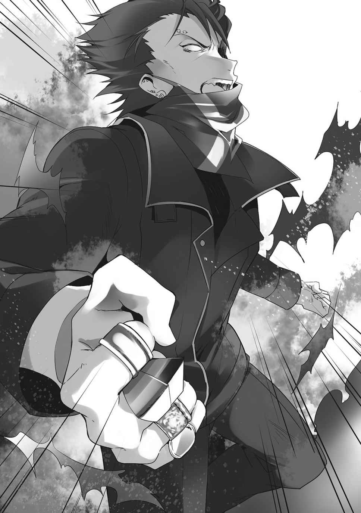

| ヒマワリ：ｕｎＵｔｏｐｉａｌ Ｗｏｒｌｄ １【電子特別版】<ヒマワリ：ｕｎＵｔｏｐｉａｌ Ｗｏｒｌｄ> (角川スニーカー文庫) | |
| 林 トモアキ | |
| (2016) | |
ヒマワリ:unUtopial World 1
【電子特別版】
林トモアキ

角川スニーカー文庫
本作品の全部または一部を無断で複製、転載、配信、送信したり、ホームページ上に転載することを禁止します。また、本作品の内容を無断で改変、改ざん等を行うことも禁止します。
本作品購入時にご承諾いただいた規約により、有償・無償にかかわらず本作品を第三者に譲渡することはできません。
本作品を示すサムネイルなどのイメージ画像は、再ダウンロード時に予告なく変更される場合があります。
本作品は縦書きでレイアウトされています。
また、ご覧になるリーディングシステムにより、表示の差が認められることがあります。
「まだ、何も手遅れなんかじゃないんだよ」
「なんだって、諦めなければ結果は付いてくる」
「......私は、信じているよ──」
そう言って、父だった人は亡くなった。
葬儀には、大勢の人が訪れた。
養子でしかなかった自分は蚊帳の外でそれを見ていた。
だから財産のほとんどは、他の人が持っていったが。
それでもなお、自分にも多くのものが残された。
普通であれば何不自由なく大学へ進み、就職してもなおいくらか余るだけの額。
でも、自分を指導してくれる人はもういない。
でも、お金はある。
私は......
......ダメになった。
①
「うう......ー......」
パソコンの前で寝落ちしかけた少女は、ジャージの袖でヨダレを拭う。
（......あ......もう三十二時......ですか......）
普通の人は少し前に目を覚まし、朝八時と呼ぶような時間だった。
名はヒマワリ。姓が日向、名が葵なのだが、ヒマワリの方が気に入っている。
（えっと.........平日だから、見るものないし......）
（........................寝ましょう）
ヒマワリはごろさらと床で横になると、ビーズ入りの低反発クッションを頭に敷き、タオルケットを被って目を閉じた。
養父が亡くなってからというもの、見ているサイト、触っているゲーム、読んでいるマンガなどの違いはあるが......概ね、それがヒマワリの日常だった。
いや、父の生前も、最後の方は似たようなものだったが。
それでも父は規則正しく朝早くに朝食を作ってくれてから仕事へ出かけた。ヒマワリはそれを食べてから眠りに就いた。
今では、ただ何となく、寝る。
「......くー......すぅー......」
学校にはもう、しばらく行っていない。転入したときもらった学校指定のジャージは、普段着に寝間着にと着回しが利くので愛用しているが。
着たきり雀なので、さすがにだいぶ毛玉が増えた。
「......ん......、ぁ..................？」
目が覚めると、もう夕方の四時になろうかというところ。
（......今日は......どうしましょうか......）
身を起こし、ヨダレを拭う。
最悪な日常なのはわかっていた。どこにも行かない。何もしない。何かしなければいけない焦燥感、なのに何もすることのない罪悪感、そんな中でただ時間が流れていく恐怖感。ありとあらゆる悪寒に気付きながらも、なんとなくその全てから目を背ける日々。
だって、今この瞬間は大丈夫なのだから。
（......）
カーテンを開けると、黄金色の西日に染まる高層建築のみの街並みが見えた。
ここはメガフロント開発計画によって東京湾上に造成された人工島、新ほたる市。
四年前、ここである事件が起きた。
報道では武装組織による占拠事件と言っているが、あの場にいた者であればわかる。あれは破壊でしかなかった。いろいろな建物が破壊された。生きとし生ける人々の肉体と生命が破壊された。そして一連の出来事は、そんな地獄から生還した者たちの心をも破壊した。あの事件で人生を狂わされた者は大勢いる。他でもない、ヒマワリ自身がその中の一人だった。
それまではヒマワリも学校に通っていた。部活動もやっていた。いろんなことに前向きだった。やればなんだってできると思っていた。だがあれほどまで何もかもが一瞬にして潰えていく様子を見せつけられて、まともでいられるはずがなかった。飛び交う銃弾や降り注ぐ爆弾の破壊力を前にして、前向きだったらなんだというのか。十代半ばの小娘がやればできる気になって、どうなったというのか。
（......）
前向きだったし、やる気だった。
でもダメだった。
思い出し、もう四年以上経つというのに、ヒマワリはまた小さく震えた。毎日のことなのに、それを止める術がない。口で言うのは簡単なのだ。だがあれ以来、どれだけ前向きに、明るく振る舞おうとも、毒のように呪いのように、徐々に徐々にヒマワリの健全性は蝕まれていった。結局、あれは......。
あの事件はヒマワリにとってのとどめだったのだ。
きっと、そんな人は大勢いるのだろう。
（......よし）
よし、と思ったところで何をするわけでもないのだが。
（よし、今日は......頑張って.........）
（......頑張って.........）
（............そうだ......、ラーメンを食べに行きましょう......）
かわいい女子高生がやたらとラーメンを食べるマンガを読んだ。深夜にドラマもやっていた。だからああいう、野菜がいっぱい載っているようなのを食べたいと、そう決めた。
新しいジャージを着て、お出かけ用にパーカーに袖を通し、外出用のメガネをかけ、野球キャップを目深に被り、玄関のドアを開ける。
「......。」
カラッカラの快晴に、軽く引いた。気温も高い。
（............）
日が沈んでから出ることにした。
②
積んでいたライトノベルをキリのいいところまで読んで外へ出ると、日暮れどころかとっくに夜になっていた。島の中心部へ視線をやると、窓明かりを星のようにちりばめた、ライトアップされた超高層ビル群が見える。
東京湾岸の港湾施設と成田の国際空港機能の大半が移設された、日本の、ひいては極東アジア最大の玄関口。であると同時、四年前の事件からのいち早い復興のため、企業が行政と一体となって市を運営することとなった初の第三セクター市でもある。
実際、町はもう復興どころか、すでに当時以上の発展を遂げていた。もう午前一時も近いというのに、遠巻きに見える中心部はニューヨークや香港の摩天楼にだって負けていない。眠らない町。灯の消えない町。だから星は見えない。
復興したという。あのときだってまだ、できたばかりの新品の町だった。変わったのだろうか。もっと新しくなったのだろう。もっともっと新しくなっていくのだろう。
（私は変わらない）
（......違う。変わってしまった。ダメになってしまった。私は......）
（.........私はもう変わらないんでしょうか。私はこのまま......）
（............）
（えっと......）
中心部こそＳＦに登場する近未来都市のようだが、それ以外は普通の都会とさほど変わらない。マンションから少し歩き、東京湾上副都心線メガかもめの駅周辺まで来ると、居酒屋、ファミレス、ジャンクフードからＢ級グルメくらいまでのテナントはまだ営業していた。
（らーめーん......♪）
◆
（......はー......素晴らしい総合バランス栄養食でした......）
高タンパク高カロリー高脂質高糖質高塩分でありながら野菜もたっぷり、二日ぶりの食事である野菜みそトンチャーシュー大盛り背脂増しに空腹と心を満たされたヒマワリは、火照った頰を夜風に冷ましながらコンビニに入った。
（......デザート。アイス♥ そういえば家で食べるおやつも切れてましたね......あ、エナジーの新色はチェックしましょう。麦チョコと。スナック......久しぶりに缶詰もおいしそう......そうなると白いごはんも......）
ひとしきり買い込んでコンビニを出た。
天気が良かったので遠回りをして、埠頭公園でアイスを食べようと思ったのだが。
（あ......ギャング......）
ベンチに荷物を置いたところで、公園の向こうにいる先客に気付いた。
カラードギャング。色付きギャング。
グループを象徴する色を身に付けて徒党を組み、クルマやバイクを乗り回して新ほたる市を牛耳る、不良青少年グループの総称だ。構成員はみな高校生くらいだそうだが、彼らは〝精霊さん〟という魔法のような能力を使い、夜な夜なこの新ほたるでの覇権を争っている。それこそ、家を出る前に読んでいたラノベのような話だ。だからカッコイイとか、憧れる若者も多いというが......不良なんてものは、ヒマワリからすれば。
（何も考えずに生きている、気楽な人たち）
（......真面目に生きていない人たち......）
要するに。
（............馬鹿の集まり）
「ぶっ飛べええええええええッ──!!」
その愚か者どもがたむろしている方角から、声が聞こえた。
顔を上げると、木々の向こうから人影が飛んできて、飛んでいるので重力に引かれ、ヒマワリのいるベンチに落っこちた。
どかーんと。
よりによってコンビニで買い込んだそれの上にだ。勢い、ヒマワリもベンチから投げ出されて地面にひっくり返った。
吹っ飛んできた誰かは大丈夫かと思って見ると、意外と平気そうだった。
「チッ、やってくれるじゃないか......なあスカイズ！ ブルーブルースカイズ......！」
どこか見覚えのあるような、紺のブレザー。まあよくある高校の制服姿。
そうして起き上がった彼を追ってきたのは、デニムベストのブルーを身に付けた一団だった。
「今日で終わりだ桐原ァ!! てめえ一人で五人に勝てるかよぉ!!」
「それが勝つんだよ俺はなァ」
桐原と呼ばれた少年の目にも止まらぬパンチが、ブルーの一人の顔面を捉えた。振り抜き、一発で殴り倒す。
取り囲んだギャングのもう一人が角材を振り下ろしたのを頭突きで砕いて、頭から血を流したままやはり一発で殴り倒す。横合いから腕を摑みに来た一人を地面に叩き付けるように投げ打ち、後ろから来た一人の顎を馬のように蹴り上げた。
ブルーはたちどころに一人を残すのみ。
「ッ......、バケモンが......！ だが場所が悪かったな桐原ァ！」
彼は手にした何かの錠剤を口に入れ、嚙み砕いた。そして叫ぶ。
「やっちまえ、水精霊!!」
ギャングが腕を振りかざすと、背後にある噴水の池から水の玉が飛び出してきた。テニスボール大はある。その重さと、プロ野球投手が投げるような高速から考えれば、拳で殴る以上の威力はあるだろう。それがまるで無尽蔵に飛来する。
一見、彼は頭部を腕でガードしたまま、その猛連射に身動きすらできないようにも見えた。
（......あ。ひょっとして......）
飛んでくる水飛沫の冷たさで、ヒマワリは気付いた。
彼が避けると、ブルーのギャングが放つ水弾はそのままヒマワリに当たるのだ。
（......）
まぁ、ヒマワリは動かなかったが。
すぐに水弾の勢いは弱まり、ブルーのギャングはスタミナが尽きたように、その場に膝を突いた。肩で息をし、目は真っ赤に血走り、鼻腔からは鼻血を滴らせている。
「はーっ、はーっ......、マジかっ......！ 全力だぞっ......！」
ガードし続け、水浸しになった腕を下ろした少年は凶悪な笑みを浮かべる。
「どうした、もう終わりか......？ 闇討ちするにしても、もう少し仲間を連れてくるべきだったな!?」
まるでダメージなど無かったかのように距離を詰め、這いつくばったブルーの顔面をサッカーボールのように蹴り上げる。
「フハハハハハハハ！ ざまあないな社会のゴミが！ ゴミクズがッ！ おらおら逃げてみろよ！ 無様に逃げるのは敗北者の特権だ！ それを眺めて嘲笑するのが勝った俺サマの特権だ!!」
ドカドカとヒマワリのいる場所まで地響きの伝わってきそうな勢いで蹴る。踏む。踏みにじる。やがてそのギャングがぐったりして動かなくなったところで。
《しょうぶありッ!!》
きぃん、と安っぽい拡声器を通した若い女の声。
声の主の若い女はどこからともなくその場に降りてきて、ブレザーの少年の腕を高々と持ち上げた。
《はい、おめでとうござザーガガッ！ ザ！ 桐ィィィイィンガガガーッ送られまっす！ 改めまして、おめでッキィィィィィン!! ガガガザ──ッ!!》
「やかましい！ 音が割れすぎだろうそのスピーカー！」
「あ、失礼。この子少し調子悪くってですね......」
怒られた女は拡声器のスイッチを切って、ホルスターに差していた端末を取り出すと、タッチペンで何やら入力し始めた。
第三セクター市である新ほたる市は、一般企業が敷地や構内に警備員でも配するように、市内に独自の警備機構を有している。新ほたる市あんぜん・あんしん課。通称、市設警察。彼女が身に纏う黒基調の制帽とスーツは、そこの職員、警備官としてのものだ。
「はい、今回も桐原さんの勝利ですね。なーのーでー、対戦相手のブルーブルースカイズから、勝ち星が移されまーっす。おめでとうございまーっす」
「ハッハァ！ 見たか貴様ら！ どこからでもかかってこい！ いつでも勝負してやるぞゴミども！ 俺はこの世界を変える男、ブラックオーロライトの桐原士郎だ！」
傷だらけのまま、大仰に胸を張る少年の姿。
（......）
（......世界を......変える......）
（............桐原......？）
先に倒されていたブルーのギャングたちが、ようやくフラフラと起き上がる。
「くっ、そ............おい、待てよ！ これは『勝負』じゃねえ！ 俺たちはただ......！」
ギャングが全て言い終える前に、警備官の女が振り返る。
「勝負じゃなしに精霊まで使ったとなると皆さん、傷害と殺人未遂で鑑別にぶち込むとかなりますけどいいですか？」
「ッ......そ、それはっ......、ぐッ......」
ブルーのギャングらが押し黙ると、彼女は笑顔のまま頷いた。
「はい。まあ血気盛んなお年頃ですしよくあることなのはわかりますけーどー、一応申請してもらわないとね。ただの刑事事件とか、そういうことになっちゃいますので......一悶着するときは市警の方に一声かけて、星賭けて。ね？ その上でなら〝ルール・オブ・ルーラー〟の勝負として認められますので」
「くそっ......行くぞお前らっ......！ 何が市警だふざけやがって、死ねクソ警官......！」
ブルーのギャングは互いに互いを支え合うようにしてふらふらと去っていく。
女警備官はそれを追いかけていって後ろから跳び蹴りをくれると、今度なめた口利くとブチどうのこうのしますよ、などと言って、土下座させた全員の頭を血が出るまで蹴りまくり、近くに停めてあった彼らのバイクを全部蹴倒してからまた戻ってきた。
「で、桐原さんはこれから二戦目に？」
「行かない。制服もずぶ濡れになってしまったしな......。っと」
そこでようやっと思い出したように。彼は、座り込んでいるヒマワリの方を振り返った。歩み寄ってくる。ラフなようでまとまった黒髪。双眸は切れ長ながら、ケンカをしていたときとは打って変わって温厚そうな様子に見えた。
「ケガはないか？」
「........................い」
ずーっと家にいて喋っていなかったので、すごい声が出た。ラーメン屋は食券だった。
「お前もルール・オブ・ルーラーの参加者か？ それともどこかのファミリーの......」
「？」
じーっと、少年がヒマワリの顔を覗き込んでくる。
「いや......ひょっとして、お前は.........」
桐原。桐原士郎。
（あ......）
タイミング的には、向こうもほぼ同時だったらしい。
「やっぱり......２─Ｂで一緒だった日向。日向葵。ヒマワリじゃないか？」
「ちがっ、ぃますっ......!!」
ヒマワリは脱兎のごとく逃げ出した。
ひぃ......。
③
陸上選手でもああまではしまいという大きな両腕の振りで、ヒマワリはダッシュする。
「ちょ、待っ......！ 待てって！ なぜ逃げる！ おいスズカ、あんたも一緒に来い！」
《はい？ それはいいですけど》
少年が警備官を連れて追いかけてくる。
かつてのクラスメート。確か、生徒会役員などやっている品行方正な少年だったはずだが、ケンカの最中はまるで別人だったので気付かなかった。
《ビガー！ 桐原さん！ 痴漢ですか!? 痴漢だと私、新ほたる市あんぜん・あんしん課の職員として桐原さんのことしょっ引いて警察の少年課に引き渡さないといけないんですけど西東京東学園高校生徒会長三年Ｂ組十七歳の桐原士郎さん！》
「でかい声で何を言いふらしてるんだあんたはっ!? というかなんでこんなときだけ鮮明に聞こえるんだその拡声器はッ!!」
《なんででしょうね》
というか桐原士郎、足が速い。さっきまでのケンカで決して無傷というわけでもなさそうなのに、追ってくる足音と声が遠ざからない。
「とにかく！ 彼女は参加者だ！ あいつは今から俺と勝負する！ ジャッジしてくれ！ いいな!?」
《あ、そういうことですね。わーかりまーしたー》
（ううっ.........）
後ろで、なんかよくわからないことで納得されている。ヒマワリもどうにかまきたいと走るのだが、距離が開かないことにはどうにもならない。
結局公園を一周して元の場所に戻ってくる頃、途端に足音が一つ減った。
（？）
風の音にヒマワリが顔を上げると、女警備官が頭上を飛び越えるのが見えた。
スカートの中と。
で、そのままヒマワリの眼前に着地する。
《はいそこまででーす！》
「わあっ!?」
驚いたヒマワリはブレーキをかけ損ねて、その場に尻餅をついた。
それはしばらく学校にも行かず部屋でごろごろしていたが、それにしたって走っている人間の頭を後ろから楽々飛び越えるなんて陸上選手にだってできることではない。はず。だ。
《はい、えー。勝負を申し込まれたらー、ですね、受けるか、受けないかだけでもハッキリしてもらわないとー、義務っていうか規定でもないんですけど、まー暗黙の了解としてですね。ジャッジするこっちが困りますので、ご協力お願いしまーす》
そうこうするうちに士郎もその場に辿り着いた。
「はぁ、はぁ、意外と足が速いな日向......」
「......、違います......」
「なあお前、もうずっと学校に来ていないだろう。教師から聞いたが、父親が......」
「っ.........う......。知りません......」
言いかけた士郎はそんなヒマワリの様子を見て、言葉を切り換えた。
「......そうだな。とにかく、半年くらい前から休みがちになった」
「知りません、人違い......ですっ......」
ヒマワリは立ち上がって、尻に付いたほこりを払う。
《はぁいっ!! というわけで、勝負しますか!!》
「あんたも空気を読まないな!? かつての級友同士が織りなす感動の再会を......！」
《でもそういうの私には関係ないのでね。えー、それより勝負、するんですよねっ!?》
「ああ、やる」
《桐原さんも大概めげませんね》
（え～......）
そんなヒマワリの気も知らず、表情を変えた士郎が述べた。
「いいか、俺が勝ったら明日っからでも学校に出てきてもらうぞ。我が校唯一の不登校生徒」
「いっ......いやです、よ......」
二面的というか、学校に通っていたときは、彼がこんな風にいやらしく笑う姿は見たことがなかった。
「ついでに見られたからには、俺が夜な夜なこんなゲームに参加してるってことも口止めさせてもらう。仮にも生徒会長サマが定められたルール内とはいえ無知な一般人やマスメディアのアホが見たら暴力と曲解しかねない綱紀粛正を行っていることを知られるのは社会的に良くないのでな。ただし万が一日向が俺に勝てたら、この俺の保有してる勝利ポイントとチケットを全部渡そう。それなら文句はないな？」
《えっと......いいですか？ 日向......ヒマワリ、さん？ あなたもそれで。ィィン......》
市警の言葉に、ヒマワリはかぶりを振った。
「よ......よくないですっ。というか、どうしてそういう流れになってるんですか？ だいたい......」
「勝負を前によそ見をするとは余裕だなッ！ 二年の時から気になっていたその胸どさくさに紛れて揉ませてもらうッ!!」
ヒマワリ目がけて士郎が躍り掛かってくる。
ヒマワリは咄嗟に横に一歩、鷲摑みしようと野放図に伸びてきた手を摑み、士郎の体と行き違う方向へ捻り上げた。
「いっ!? いいってええええええええててててててっ......!!」
無理に逆らえば確実にどこかの関節の何かが逝く。
たまらず士郎は膝をつき、俯せに倒れ込んだ。しかしヒマワリは士郎の腕を放さぬままさらに体重を乗せていく。地面に押し付けられた士郎はもう体の逃がしようがない。
「なっ!? なんだ!? お前、こんなワザを使え......！」
まさかの関節技に、士郎がたまらず泡を食う。
「ちょっ......！ 日向、わかった！ マジ！ 折れっ！ 折れるっ......！」
「......大丈夫、靱帯を千切るだけです。それでも降参しなかったら......折ります、けど」
「いやそれ下手に骨よりマズイだろ！ ギブ！ ギブギブギブ！ 降参！ 降参だ!! 審判！ はやーく！」
《えー、まだ始めの合図してなかったんですけど......勝負ありっ!!》
拡声器からの大音量に、きぃん、と耳が鳴る。
④
《勝負ありましたー、のーでー。えー......ま、せっかくなのでね。メキッとイッちゃってもいいですけど》
「よくないっ！ 俺がよくない!! ちゃんとジャッジしろスズカ!! 擬音が生々しすぎる！」
（......）
あんまりいじめても仕方ないので、ヒマワリは士郎の腕を放してやった。
士郎はずぶ濡れの制服が泥だらけに汚れるのも構わず、極められた腕を押さえてのたうち回っている。
「っくそ......マジか......！ この俺がこんな......！ こんなメガネ女子に後れを取るというのか......！」
「......じゃあ、これでもう、私を付け回すのは......やめてください」
ヒマワリは言うのだが、上半身を起こした士郎が嘆息する。
「どさくさに紛れようとしたのは悪かったが......」
「はい」
「......ともかくクラスの連中も心配していたぞ。その様子だとまるっきり家から出られないヒキコモリというわけでもなさそうだが、学校にはまだ出て来られないのか？ 何か理由があるのなら俺が協力してやっても......」
「......言っても。わかりませんよ。どうせ......」
ギャングと一緒になってケンカをしているような不良に言ったところで、まともに取り合ってくれるとも思えない。
《すみませーん!!》
ヒマワリは耳を押さえながら拡声器の鳴る方を振り向いた。
「はいっ......!?」
「あ、失礼。えー、......失礼ですがもう一度、あなたのお名前は？」
ヒマワリへ言いながら、彼女はホルスターから取り出した端末を、タッチペンでぴ、ぽ、ぱ、と操作する。ファミレスのウェイトレスが持っている伝票をプリントするあれを、もっと薄くした感じだろうか。ＳＦ映画のレストランに出てくるみたいな。
補導とかされるのは面倒だが、下手に刃向かって話がこじれたりするともっと面倒だ。
「......あ......えっと......、ヒマワリ、です......」
「はいヒマワリさん。可愛い名前ですねーヒマワリちゃん......ヒマワリちゃーんーはー......えーっとー......？ たびたびすみません、受付とか、申し込みとか、登録ってどちらで？」
「してません」
「してない......はい、えーとしてないのーはー............えっ？」
「えっ？」
オウム返しのヒマワリに、女警備官は顔を上げる。
「えっじゃなくて。事前に登録してないと、大会には参加できないんですよ？」
「はい。だから、参加してません」
半年ほど前から、この市では〝ルール・オブ・ルーラー〟という大会が開かれていた。
運営委員会の管理下でさえあれば参加資格はほとんど無制限、命以外なら何を賭けてもどんな勝負をしても合法なのだというそれは当初こそ大いに盛り上がったが、直後にギャングが参加者に名を連ね、先に見たような精霊さん依存のケンカ主体に勝負方法が変遷していったため、今では完全に有名無実化していた。というか、関心の無かったヒマワリからしたら、まだ続いていたのか......という気分だったが。
「いやでもさっきヒマワリちゃんね。今しがた。勝負して。勝って」
「いえ、ですからそれは。桐原君が、勝手にそういうの」
女は帽子のツバの下で暗い顔をし、ふるふるとかぶりを振った。
「あの......もう桐原さんの勝ち星を取り上げてしまったので......システム的に、この勝利ポイント。ホシがどこかに行かないとですね。私の管理体制の不備が。審判としての不行き届きがですね。わかりますか？ 良くないわけです」
「そうですか」
まあそうだろう。
だが。どう考えても。彼女がよく確認せずに勝ち負けを宣言したのが悪い。
「......桐原君に、返してあげれば」
「一度取り上げたポイントをそのまま返すなんて、それじゃあ明らかな手違いがありましたって言ってるようなものじゃありませんか。こういったデータはセンターの方で一元管理されるんですよ。不正とかないように、厳重にチェックされているわけです。いま、このときも。もちろんそれが、私の持つ私にしか操作できない私の端末から発信されたデータであることも一発なわけです」
「はっは、つまり明らかにあんたの手違いなわけだ。全く、税金で給料をもらってる自覚はあるのか？」
女警備官は士郎の顔面に目の覚めるようなソバットをぶち込んで蹴倒してから、拡声器を手にした。
《少しそこで正座してください。正座だ。いいか少年。いいですか、よく聞きなさい。君が彼女が参加者だと言った。そして私は信じた。信じた私のピュアピュア♥はぁとをあなたは裏切ったんです。私たちのような公職の者を故意に騙すことは偽証罪と言って立派な......》
云々。
正座なのに頭がぐらんぐらんしている士郎が話を聞いているかどうかはわからなかったが、長くなりそうなのでヒマワリは言った。
「......帰ってもいいですか？」
女警備官が、ぽんと手を打ち端末を持ち直す。
「じゃあこうしましょう。ヒマワリちゃんは今日から参加で。電撃デビューってことで。デビューおめでとうございまーっす。で、このホシをー......こうして新しく登録したヒマワリちゃんにー......ぽんと」
「じゃあ、って......。だから私は、そんな、勝手に決め......」
ヒマワリの肩に手を置いた彼女が、暗い顔で笑った。
「参加者でもないのに女の子がこんな時間にうろついてるなんてー。補導してー。警察に突き出しちゃいまーすーよー？」
「うぅ......」
それは困る。そんなオオゴトになるのは困る。
彼女は市警。飽くまでも市の治安を維持するための警備官だ。だが警視庁側の警察官が出てくるとなると、扱いやお話がまた別になる。
一人静かに不登校を楽......楽しんではいないが、むしろ脱したいと感じているが、でも生き方とか、ライフスタイルとか、そういう変化は自分のタイミングで決めるべきだ。今はまだそういう時期ではないだけだ。警察に突き出された挙げ句、教師や青少年健全育成センターやカウンセラーや何かが家に押しかけてきたりするのは困る。
（うぅ......ま......、まぁ......参加だけなら......）
（何もしなければ、それだけのことなんだし.........）
（......お金を取られるわけでもなさそうだし......）
（.........もう、これ以上つきまとわれる方がめんどぃですし......）
いろいろ秤にかけて、日中の駅前通りで政治団体か市民団体か宗教法人か怪しいスカウトに引っかかった気の弱い女子高生のごとく、ヒマワリはおずおずと曖昧に頷いた。
「じゃぁ......参加......します......」
「はい！ はーい確定しましたー！ これで、システム的に何の矛盾も発生しないということです！ ヒマワリちゃんいぇーい☆ ちょっと顔色悪いっぽいけど大丈夫ですかー？ 大丈夫ですね！ はい！」
「......」
「『はい』で」
「......はぃ」
ヒマワリが曖昧に頷くと、女警備官は満足したように端末をホルスターに収める。
そこに通報でも受けたのか警視庁側の、いわゆる警察官の巡回が数人通りがかったが、女警備官が「ごくろうさまです」と敬礼すると、にこやかに敬礼だけして去って行った。
あっちに血まみれのギャングが転がり、こっちに士郎がグラグラと正座しているのだが、補導どころか職質すらされなかった。
（......）
結局、それがこの新ほたる市における警察と市警、ひいては国政と市政のあり方であり、そのパワーバランスなのだ。なんとなく、間違っている気がするが。
「じゃ、ヒマワリちゃんはこれから頑張ってくだーさいっ！ あ、桐原さん、お前は次ナメた口利いたら......」
無言のまま正座する力も失い横に丸くなった士郎が、さらにがっつんがっつんケリを入れられ始める。パトロールの警察官らは、物音に一度振り向きはしたが戻ってはこなかった。
（......）
なのでヒマワリも、帰ることにした。
ただ、それだけのことだった。
今日限りのことだ。今日巻き込まれた。それだけだ。明日からはまた何もない。どういうルールかも知らないし、だから自ら勝負を挑んだり、ケンカをしたりする理由がない。
（でも、勝ったのは......ちょっと......）
（............怖いんじゃない......嫌なんじゃない......。......理由がないだけ......）
士郎が突っ込んで砕けたベンチ。ヒマワリは中身ぐしゃぐしゃのコンビニ袋に散らかったゴミを集めると、ぐったりと横たわる士郎の上に置いた。
（.........じゃあどんな理由があれば、私は......）
（......）
家路を辿る足取りは、軽いような、重いような、不思議なものだった。
⑤
明けた日のうららかな放課後。
私立西東京東学園高等学校、生徒会室。
早めに顔を出した士郎がどーんと椅子に掛けて宿題にふけっていると、ドアが開いた。
「失礼します。会長、今日も早いですね」
金髪。控え目なコサージュ付きのカチューシャ。憎めない円らな吊り目をした、愛嬌のある笑顔。名前は木島アリス。休み時間には自然と取り巻きが集まり、彼女がカワイイと言えば他の女子も揃ってカワイイと言い始める、そういう類の生徒だった。
「掃除当番などという雑務は心あるクラスメートがいつも肩代わりしてくれるからな」
「その傷はまたケンカですね？」
彼女が副会長のプレートがある席へ向かうのを目で追いながら、士郎は釘を刺す。
「何度も言うが俺が行っているのはケンカなどという下劣な振る舞いではない、アリス。この世界を変えるための闘争であり、その障害となる愚か者どもの粛正を手ずから行っているにすぎないんだ」
他の生徒はまだいない。
「ということは〝ルール・オブ・ルーラー〟、ですよね」
訳知り顔のアリスが、キーホルダーや小物がたくさんぶら下がったスポーツバッグと、同スマートフォンをごちゃっとテーブルの上に置く。
「いくら稼ぎました？」
「下世話な聞き方をするな」
「いいじゃないですか。私と桐原君、チームなんですから。じゃあ、これで私たちの保有する勝利ポイントとチケットは......」
指折り数えようとするアリスへ、頑として動かぬ巌の如き構えで士郎は告げた。
「ゼロだ」
.........。
「......やだなぁ桐原君？ 桐原生徒会長、そういう冗談つまんないですけど」
「俺だってつまらん冗談なら言いたくないわボケ！ じゃあなぜ言ったと思う!? 一、実は面白い冗談だから！ 二、真実だから！」
「なにそんな超悔しそうにマジギレしてクイズ形式にしてるんですか!? えっちょっじゃあマジで!? 何してくれてんですか!? ひ、ひっ、百万チケットはあったはずですよ！ 負けた!? どこに!?」
そして士郎は、悔恨の念を絞り出すように告げた。
「......我が校の生徒だ」
①
少女の名はヒマワリ。
「......くー.........」
何をしているかと強いて言えば、不登校をしている。
「............。ー.........」
目を覚ましたら、まだ午後の三時だった。
そう、あてどなく職を欲するニートでもなければ家から出られぬヒキコモリでもない。
ただ学校に行ってないだけだ。
（......ああ......。昨夜はなんか疲れて、早く寝てしまったんですね......）
死んだように上体を起こし、ヨダレを拭う。
（......勝ち負け......）
昨夜のことを思い出した。
いつものようにちょっと夜に外出したら、去年のクラスメートに鉢合わせした。何やら因縁を付けるがごとく勝負を挑まれて、勝ったら、ルール・オブ・ルーラーなる大会に参加登録させられた。
なんだか、詐欺みたいな話だが。
ともあれ昨夜のあれは勝った。ヒマワリが勝ったのだ。
だが、常日頃つきまとう思いは一緒。
（私は......この世界に負けたんでしょうか............）
（それは......正しいのでしょうか......）
（それがこの世界にとって正しいことだから私は負けた......とか）
（私が勝つことは間違っているから、私は......）
一人でいると、いろんなことを考える。することがないほどそんな風になる。
いや、ゲーム、マンガ、テレビ、インターネット、何をしていても頭の隅には今の自分を認めきれない自分が囁く。
これでいいのかと。
良くないとしか言いようがないが。そんなことを、毎日何百回と頭の中で繰り返す。この数年では何万回だろうか。もっとだろうか。そうやって精神は徐々に、徐々に、だが確実に蝕まれていく。
抜け出したい。この生温いだけの地獄から脱したい。そのための理由が欲しい。きっかけが欲しい。
（......契機......）
自分はこの世界を変える男だ、と桐原士郎は言った。
そう簡単には変わらないだろう。それとも、本当に世界は変えられるのだろうか。
（......私が負けた......この世界を......）
自分を変える方が簡単だとは思う。
でも......世界の方を変えるという、発想は今までなかった。
（......）
暗い気持ちになったので、とりあえずテレビを点けてみる。
ピッ。
《新シイが、面白イ！ 楽しいこといっぱい！ この週末は第三セクター市、新ほたる市へ！》
ＣＭ中。
《第二回ＨＤＣ、〝ルール・オブ・ルーラー〟開催中！ 優勝して世界を支配するのは、キミだっ!!》
ＣＭ中。
......後、ニュースが始まった。
《昨日午後、新ほたる市埠頭地区の路上で少年グループ同士による衝突が起き、一人が病院へ搬送されましたが意識不明の重体です。取り調べに対し、一緒にいた少年らは『精霊さんが暴走した』、との供述を繰り返しており、警察はこれまでの一連の事件との関連性も含め、傷害と麻薬取締法違反の両面から捜査を続けています......》
（一連......そういえば最近多いですね......）
新ほたるは日本で一番新しい都市だ。しかしその新しさゆえにあらゆる人が多く集まる、一番物騒な町だとも言われている。金持ちの集まる中心部には、マフィアや犯罪組織の大物がうろついているとも。
《続報です。インガルス重合化学所有の石油化学プラントでの爆破テロについて、武装組織ザ・マザー・アースからの犯行声明が......》
テレビの電源を切る。
（......）
（............）
（..................お腹が空きました）
昨夜、公園からの帰りに買い直したコンビニごはんを、テーブルの上に投げっぱなしのレジ袋から漁っているとインターホンが鳴った。
（.........えっと？ ゲームの発売日はまだ......他は何も注文はしていませんけど......）
ヒマワリは亡くなった養父が持っていたマンションにそのまま暮らしている。
物件の権利自体は父の離婚相手へすでに移っているのだが、父の友人らの後押しもあり、高校を出るまではヒマワリが住んでいてもいいという約束になったのだ。その代わりというか当然というか、光熱費やら税金関連はヒマワリの預金（父の遺産の取り分）から引かれている。
鳴っている。やむなく、インターホンに出る。
「............い」
寝起きはノドの調子が悪い。
《あー、えー、こんにちはー！ 私、新ほたる市あんぜん・あんしん課のスズカという者ですが、こちら、ヒマワリさんのお宅でしょーか!?》
（......？）
モニターに映っているのは、黒い制服を着た若い女。
昨夜の、拡声器を乱用していた市の警備官だ。
「......何か」
《あ、その声！ ヒマワリちゃんですよね!? 私です、昨夜はどうも！ えっとですね、えー......昨夜の件が上司に露見しましてですね》
気まずそうに切り出した早速の用件に、他人事ながら言葉もなかった。
《つきましてはヒマワリちゃんの方から私の弁護......というか、えー、まー、当時の証言をいただきたく。そう、上の者が申しておりましてですー......、ね？》
なぜうちの場所がわかったんだろう。
「どうして、この場所が？」
《はい、そういえば連絡先聞き忘れたなーと思いまして！ なんか桐原さんと同じ学校っぽかったので、先ほど私立西東京東学園高校の方にお邪魔しまして市の権限を振りかざし個人情報をぶっこ抜いてきました》
（......なんてことを）
軽く寒気がした。
《ほら、結局のところ教育委員会なんて行政に付随するものじゃないですかー。ヒマワリちゃんの学校は本土の方ですけど、教育関係は教育関係で横のつながりっていうか、うちの市教委の偉い人の名前出したらはいどうぞこちら御査収くださいってなもんで......》
（......）
そりゃこの女警備官は新ほたる市の公職かもしれないが。
こんなにも簡単にプライバシーは露呈するのだ。
「......か......帰ってください。もう、関わらないでくださ」
《学校にー、あることないこと言いふらしまーすーよー？》
「あっ......あの......！ だから、そういう考え方が上司にばれて、今もっと面倒なことになっている......とか。ではないんですか。違うんですか！」
《違います》
言い切った。
だめだ。この警備官はフレキシブルすぎる。不登校の女子高生が太刀打ちできる相手ではない。このまま彼女の言いなりになるのは良くないことだが、逆らえば逆らった分だけもっと面倒なことになる気もする。
「............じゃ、どうすれば......。......弁護、するんですか？」
《とりあえず、あの、インターホン越しというのも寂しいですし、ちゃんとヒマワリちゃん本人かを念のためね、確認させていただきたいなーと。なので......上げろとは言いません！ せめてどこか喫茶店とか！ ファミレスでお話させてください！ 経費で落とせますから！ お願いです！ もう一度でいいので会ってください!!》
ヒマワリは根負けした気分で溜息を吐く。
こうやって向こうが下手に出てくるなら、今のうちに聞いた方がラクかもしれない。
「わかりました。いいですよ、上がってもらって」
《......いいんですか？ ハンバーグーとか、エビドリアーとか、パフェー♪ とか、女の子の大好きなもの何でもおごりますけーどー......》
「寝起きで、出るのが面倒なので。嫌なら帰ってください」
明るいうちからこんな目立つ制服と外食だなんてもっての外だと、ちょっとオーラを込めて言ってみた。
すぐに、「お邪魔します」というまんざらでもない返事が返ってきた。
②
「えっと......、お父様やお母様は？」
リビングに通されたスズカは菓子折のようなものを手に、所在なく立ち尽くしている。
「いらっしゃるならまあそのー、一応ですね、社会人としてご挨拶の方をーと......大丈夫ですよいくらヒマワリちゃんが可愛くても会ったその日のうちにお嫁にくださいなんて、いくらこの私でもそんな大それた」
「いません」
「あ、はい」
ヒマワリが半ば決然と言い切ると、彼女は察したように頷き、部屋の中を見回した。
「でもまあ、女の子の一人暮らしって感じですよね。ほどほどに汚いという。でもキッチンは使ってないから綺麗～、的な。あるある。くふふっ」
「ぐ......」
ほくそ笑むスズカにヒマワリは歯嚙みした。
掃除する間もなく突然押しかけてきて何を勝手な。
「あ、ところでヒマワリちゃん、これ、上司に持たされたマダムシンゴのクリームブリュレです。手ぶらなのも何なので、どうぞ」
受け取って、ヒマワリは上等な手提げの紙バッグを四方から眺める。
「ブリュレ......って、なんでしたっけ？」
「焦がした、って意味ですね。大雑把に言うと焼きプリンみたいなスイーツでっす」
「そうですか」
焼きプリンならコンビニでたまに買う。食べられないものだったら困るが、プリンは好きなので問題はない。
それで、スズカをソファに座らせたはいいが......まあ、寝起きのジャージ姿でおもてなしの作法も何もあるまい。ヒマワリは台所へ行くと皿とスプーン、ペットボトルの麦茶にコップを二つ、お盆に載せて戻ってきた。
「いえいえ、ヒマワリちゃん、気を遣わないでもらって、全然お構いなく......」
「これ開けますね」
「あ、どーうぞー」
スズカの手みやげを開け、ブリュレのカップを向こうに一つ、自分に一つ。
麦茶を注いだコップを、向こうに一つ、自分に一つ。
ヒマワリはようよう自身もソファにかけた。
「......それで、具体的に何を」
「新シイが面白イ！ 楽しいこといっぱい！ 新ほたる市！ では現在、ルール・オブ・ルーラーが開催中でして、我々、市警の方に申請してもらえればストリートファイトとかもね、ショービジネスとして認められているのはご存じだと思いますが」
「詳しくはよく......」
「ね、すでによくご存じということで、えー......あれも参加者としての勝負と申請があったので、私が立ち会いました。そうでないと勝利ポイントが付きませんし、ただの暴行傷害で逮捕されちゃったりしますからね。新ほたる市から犯罪者を出すと、我々あんぜん・あんしん課がうまく機能していないという批判の的になり、ひいては給与査定に響いちゃったりするので良くないんです。そんなわけでショービズっていうのは建前上の部分もありまして、普通の、小さな勝負というのはあんな感じです。カメラもギャラリーもいませんし、いりません。これならシャイなヒマワリちゃんにも安心ですね？」
ふーん。
「......で、弁護って？」
ヒマワリが尋ねると、彼女はぽんと胸の前で手を打った。
「あー、はい！ いえ。簡単に言うとこの件の争点は、ヒマワリちゃんが、確かに大会に参加する意思を持った上で勝負したかということなんです」
「いえ......だから成り行きというか」
「あ、それはダメなんです。それはＮＧでお願いします」
「......。」
「お願いしますっ!!」
突然頭を下げられた。テーブルに打ち付けるような勢いで。
いい大人が......と思ったが、よく見たら全然若い。昨夜は暗かったのでさほどよく見えなかったが、二十歳そこそこだろうか。若くて可愛らしい女性だった。
「その、参加って言いますけど......そもそも、〝ルール・オブ・ルーラー〟ってどういう大会なんですか？」
......支配者のルール。あるいは法則、か。
スズカは麦茶をごくごくと飲むと、一息してから続けた。
「コマーシャルでやっている通りです。一番勝った人。言い換えると一番勝利ポイントを集めた人が、この世界を統べる権利を得ます。これがあらましです」
「......。」
「はい、もちろん誰もがそんなことのために参加しているわけじゃありませんし、誰もが信じているわけでもありません。即物的な話をすると、勝負に勝つことで得られた勝利ポイントを『チケット』という大会通貨に換算できます。協賛各店各企業の商品やサービスであればどんなお店でも使用できるし、なんでも買えるお買い物券です」
勝負をすると勝利ポイントになる。勝利ポイントはチケットに換算できる。
「つまりギャングはケンカをして、お金をマイニングしているということですか？」
「ヒマワリちゃん難しい言葉を知ってますね。でもギャングのみなさんはあんまりここが良くないみたいだし、そんな風に思ってるんじゃないですかね。他にも市としては、より勝利ポイントを多く持っている参加者を優遇します。例えば企業同士が競合し、裁判所による公的な判断を仰ぐような場合。市は、勝利ポイントの多い方に有利な証拠を出し、そのような証言をして荷担します」
「えっ......」
スズカの言葉は、かなり強い表現だった。実際にそのようなことがあるのか、あったかはともかく。
「あるいはマフィア同士がシマを争っていた場合、勝利ポイントが少ない方の資金源を摘発する......とか。まあ、まだそこまで具体的な事例は起きていませんけどね。何を言いたいかというと、市の意向を蔑ろにしては、この新ほたるではいかなる利権も得られないということです。逆に言うと、勝利ポイントさえたくさん持っているならたとえ個人レベルでも、市を介してそういった企業や組織に圧力をかけることができたりするわけですね」
「......本当、なんですか？」
ふふん、とスズカが意味深長に微笑んだ。
「ヒマワリちゃん、この市が三セクなのは知ってますよね？」
「え？ あ、はい。第三セクター......官民合同、ってことですよね」
「表向きそうなってますけどね。実は新ほたる市議会は、企業部会っていう企業連合グループが用意した台本を読んでいるだけらしいんです。じゃあ、その企業部会の中身は？ 要点はそこで、もちろんそこらの町工場のおっちゃんや商店街の店長じゃありません」
スズカが窓から見えるそれを指差した。
「このメガフロントの真ん中にあの一番高いビルを持っている、ハーリー・マッケンリー・コンツェルン他、国内外の世界的な二百社以上がその企業部会に名を連ねているわけです。わかりますか？」
③
「つまり......」
市が、ルール・オブ・ルーラーを推し進めている。
「えっと......？」
「あ、意外と鈍いですね。かわいい」
「ぐ......。わ、わかりますよ。つまりあれです。市がそのルールを認めている、でも市を動かしているのが市議会ではなく企業部会というのなら......その、ルール・オブ・ルーラーは、市ではなく民間の、企業側の意向で行われている、ということでしょう」
スズカが白手袋をしたままの手で、ぱむぱむぱむ、と控えめに拍手をする。
「そう、そこでさっきの話に戻ります。言い換えれば勝利ポイントを集めた勝者を優遇してくれるのは市役所なんてちっぽけなものではなく、世界企業ということです。協賛全企業の裏表を含めた資産総額はアメリカの国防費を凌ぎ、各社の警備部門を搔き集めれば小国くらい一晩で制圧できると言われています。ルール・オブ・ルーラーとは、そういう絶対的な力に保証された大会だということです」
彼女の話を全て信じたわけではないが。
信じるわけではないが。
ヒマワリは、スプーンを咥えたまま。
「じゃあ......桐原君が昨夜、恥ずかしげもなく叫んでいた、世界を変えるっていうのも......」
「ええ。実は桐原さんは、ああいう若者たちの中では珍しく、きちんとそこを理解しているみたいです。トップランカーになれば当然、そういった大企業のお歴々の目にも止まることになりますし、そうですねー、たとえばー......貧しい子供たちへの支援を増やせとか。環境に優しい物作りをしろだとか。要望すれば......何しろ超一流の世界的企業ばかり集まってるわけですから。その影響力から言って、世界だって少しは変わっちゃうかもしれません。誰か一人の人生を変えるくらい、ワケないことでしょーねー」
言い終えて、スズカは麦茶を飲み干した。話を聞き終えたヒマワリの表情でもうかがう様に微笑んでいる。
気にせずヒマワリは、彼女のコップに改めて麦茶のボトルを傾ける。
現実に彼女たち警備官は、新ほたる市内に限れば国の警察官と同等以上の実効力を持っている。ただの市役所職員であればそんなはずはないが、できるのだから彼女たちも、官民で言えば民の方。企業部会の手下、あるいは手先なのだ。
ならばそもそも新ほたる市自体、市と言うよりは協賛企業の一社としてその大会に都合の良いステージを提供しているに過ぎないのかもしれない。
企業に掌握された。言うなれば金に支配された町。
（それが......新ほたる市の本当の姿......）
それにスズカの言葉を聞いているとその大会、前向きな目的を持った者ばかりが集まるわけでもあるまい。借金のある者や、やむを得ぬ事情のある者だって、弱みを突いて巻き込まれることもあるのではないか。あたかも金や何かで釣るようにして、参加者を増やし。
「......そんな聞こえの良いことばかり言って、参加させて......マンガみたいに、お金持ちなんかがその中継を見て楽しんでいるんですか。悪趣味です」
「おや、ヒマワリちゃんてば学校はサボってるくせに、意外と正義感が強いんですね。かわいい」
「っ......、さ......！ サボってるんじゃありません。私は......！」
言い返そうとするヒマワリを微笑ましげに見守りながら、ブリュレを一口したスズカ。
「う、うまっ......！ ちょ、なんですかこれ......」
スズカがぺろり、と茶碗蒸しでも食べるようにブリュレを搔き込んだ。
「すみません、もう一つ食べちゃってもいいですか......!?」
「あ、......はい。私が買ってきたものじゃないですし......おいしいですよね」
「ヒマワリちゃんに買ってきたものなので、ヒマワリちゃんも食べてください！」
「あ......、そうですか。じゃあ。私も、もう一つ......」
二人して二つ目のブリュレを手に取る。
ぺろり。
二人ともあっという間に食べてしまった。
二人でごくごくと麦茶を飲み干し。
「っぷはー！ なので、えー......なにを話してたんでしたっけ。そう、不登校の女の子が家で文句だけ言ってても、世の中は変わらないし誰も救われないということです」
「......」
三杯目は注いでやらなかった。
「けどヒマワリちゃんに何か叶えたい夢があるのなら！ 企業からのバックアップを得ることで、その目的に近付ける可能性が......ここでジッとしているよりは、遙かに大きくなると！ 私はそう思うわけですよ、ヒマワリちゃん」
（......可能性.........）
まあそんなことも何度も考えた。プラス思考。ポジティブシンキング。
だが私は私であって、それでうまくいくような一般の人とは違う。
怖いわけではない。
怖くはない。
理由が......欲しい。
踏み出し、この生活から抜け出し、そして自分が思うように進むための......。
（......理由......）
リロリロ♪ とスズカのホルスターで端末が鳴った。
「あ、ちょっと失礼......」
それからスマホでもいじるように、端末を操作して。
「えー、あ、あー。ヒマワリちゃん？」
「はい」
「早速勝負の申し込みがあったんですけど、どうしますか？」
「へ？」
「レッドドラゴンズです。レート10で勝負しようと」
ヒマワリが小さく挙手すると、皆まで言うなと言わんばかりにスズカが告げた。
「勝利ポイントを十、移動しようということです。副賞として百万チケットの条件付き」
「私、桐原君に一回勝っただけですよね？ ポイントとか、そんなには......」
「でも、その桐原さんがポイントとチケットを全部賭けると言っていたので、今のヒマワリちゃんは上位ランカーなんですよ」
「ん？」
ヒマワリは丸くした目で瞬きした。
「なんて？」
「今のヒマワリちゃんは上位ランカーなんですよ」
さっき聞いた。つまり聞き間違いではなかった。
「ヒマワリちゃんには桐原さんがこれまでに稼いだ勝利ポイント二十点と、一〇八万チケットがそっくりそのまま移っています。そういう注目度もありまして、参加の意志をより明確にしておきたいなーと」
あるいは。
「棄権してしまえば、一切関係なくなりますけど。どうしますか？」
最初から間違いだった、ということにはならないらしい。
それはもう諦めたが。
どう？
（......）
どきどきする。どきどきしている。
ヒマワリは胸の高鳴りに気付いた。
申し込まれた。何の価値もない、存在さえ疑わしいはずの自分なのに、いま自分はここにいるのだと、他の誰かに証明された気分だった。
自分がここにいることすら、私は忘れていたのだろうか？
私は今、自分が、ここにいることを自覚している。たぶん、この四年のうちで一番はっきりと。
「......えっと。その......勝負というのは。期限は、いつとか」
「今夜０時に埠頭地区第七ターミナルです。いつもギャング同士が集まってパーティーっていうの、やってるところですね。普通の女の子なら、出歩くのも危ないような時間と場所ですけど......ヒマワリちゃん、実は強いですよね？」
「え......いえ」
ヒマワリは慌てて手と首を振るが。
「またまたー。昨夜はあんなに簡単に桐原さんを返り討ちにしちゃったじゃないですか」
「簡単な護身術です。父に言われて始めた」
「......そう言えば揉むとか言ってましたね、あのガキ」
「はい。だから、護身しただけで」
手が伸びてくる先がわかるのだから。あとはそれをひねっただけであり。
「はーい護身術の心得があるヒマワリちゃんには、勝負してもらいまーす」
「え、あっ、いやそれはその」
ピピピッ、とスズカがタッチペンを走らせるのが見えた。
「せっかく参加登録したんですからもう一戦ぐらいしてもらわないと、やっぱりヒマワリちゃんの参加の意志が疑われるわけで！ はい、受け付けまーしーた！ じゃあ今夜０時に新ほたる埠頭地区第七ターミナルです！ かなり賑やかだと思いますけど！」
「週末......」
「はい。今日、金曜日ですよ？」
カレンダーも見ていない生活なので、忘れるときはストンと忘れてしまう。
「.........賑やか？」
「例のカラードギャングばっかりですけど。千人くらいでしょうかね。大丈夫大丈夫、みんな根は素直な子たちなので」
「せん...............。」
真面目に生きていない愚か者どもの集まり。
そのただ中にギャングのメンバーでもない自分が呼び出されるって、いいのだろうか。
（......）
でも怖くはないのだ。
ドキドキする。
そこに行けば、何か理由が見つかるかもしれない。
この、地獄のようなぬるま湯から逃れるための。
そう思った。
④
夜道。西東京東学園高校の制服姿が二人。
生徒会が遅くなった時点で日などとっくに沈んでしまう。そこから新ほたるへ向かうとなれば、尚のこと。
「本当に信じられません。パートナーの私に断りもなく全部賭けたって。しかも負けたって。しかも、負けたですって！ あの日向先輩に！」
足早にアリスは進む。
それをのこのこ追うようにして士郎が説明する。
「だから、ものの弾みだと言っているだろう？ 女の子だぞ、お前みたいな元超不良と違って、あんな図書館の片隅にいそうな黒縁メガネの！ 何しろ俺もギャング相手には無敗の男だ、負けるなんて思う方がおかしい」
「そうですね、じゃあなんで負けたんでしょうね。おかしいですね。もっとおかしいのはいきなりフルベットした桐原君の頭の中身かもしれませんね」
「はっは、いやいや、冗談はもっと楽しそうに言うものだぞアリス」
微笑ましげな士郎を、ギッ！ とアリスは睨み付けた。
中学の頃だったら女子も男子も若い先生もこれで全員道を空けた。
「......とにかく、そんな訳のわからない巻き込まれ方をした相手を参加者なんて言いません！」
「それはそうだ。俺だって日向を足止めできれば良かっただけで、強制的に参加登録させるとまでは思わなかった」
結果、センターに確認したら確かに自分たちの全てのポイントとチケットが失われていた。
「そんなものを押し付けられた日向先輩の方が困ってるはずです。早く捕まえて事情を説明して、全部返してもらいましょう」
「というかアリス。お前、日向のことを知っているのか？」
「知っています。あの人がいなかったら私は今でも不良をしていたと思います」
「なんだと......？ そうだったのか？」
士郎が目を白黒させているうちに、生徒会権限で職員から引き出したヒマワリの現住所に辿り着く。
新ほたるには基本的に戸建てというものがない。安アパートも存在しない。一般に住居と呼ばれる物件のほぼ全てがマンションだ。なので住宅街と言っても、高級マンションによる団地街のようになっている。一棟一棟の間隔は、整備された公園や駐車場で随分広々としているが。
「このマンションの七階ですね」
「......そんなに簡単に返してくれればいいがな」
「この場合はチケットよりも、それを日向先輩のような大人しい女の子が持っていることが問題です。カラードギャング、大陸系マフィア、犯罪シンジケート......どこの誰から勝負を挑まれるかもわからないような状況なんですよ。桐原君の軽率な行動が、我が校生徒の身をそういう危険にさらしているんです」
「入学当初はあんなに女愚連隊だった木島アリスが、そこまで他人を気遣えるようになるとは感慨深いものだな......」
「っう......！ うるさい！ 涙を拭うな！ とにかく行きますよ桐原君！」
顔を赤くしたアリスが玄関ロビーに入っていく。
さてインターホンからその部屋番号を呼び出すが、なかなか出ない。
「......けど桐原君、どうして日向先輩にそこまでしたんですか？」
「無論、生徒会長としてというのもあるが。突然学校に来なくなったクラスメートが、深夜に幽霊のようにぼーっとしてたかと思えば、声をかけるなり陸上部並みの速さで逃げ出したんだぞ」
「まあ私みたいのならともかく、あんな真面目そうな人がそんな遅くに街をうろつくようになってるのは、気になりますね......」
インターホンで呼び出しながら、アリスがじゃらりとアクセサリーだらけのスマホを取り出した。時計はもう二十一時に差し掛かろうとしている。
「出ませんね。外出してるんでしょうか」
士郎はふと思い出した。
「いや待て......今日は金曜だな。埠頭の方でパーティーをやるはずだ」
「それが？」
「俺たちより先に、誰かが日向の持っている星とチケットに目を付けたのかもしれない。それですでに呼び出された......」
士郎は自分の携帯電話からダイヤルした。
《はい、新ほたる市あんぜん・あんしん課でございます》
「ああスズカか？ おれおれ、俺だ」
《？》
「昨晩は大変なご迷惑をお掛けしました、西東京東学園高校三年Ｂ組の桐原士郎と申します」
《あー、桐原さん。その後お元気ですか？ 市警にボコられたとか警察にタレ込んでませんよね？ 面倒なんですよそういうのね》
「はっ、無論その辺は重々承知しておりますので、はいっ」
アリスは夜空に向かって真っ直ぐなお辞儀を繰り返す士郎を見ている。
《うん、それならいいんですよー。それで、何かご用で？ 誰かに勝負の申し込みですか？》
「それなんだが昨夜俺と勝負したヒマワリだ。彼女とカードを組んでくれ。今夜中にでも」
《ヒマワリちゃんなら、今夜はもう先約がありましてですね。ダメでーす》
士郎は舌打ちを一つ。
「やはり先に勝負を申し込んだ奴がいたか......誰だ？ 場所は？」
《いつも桐原さんが顔を出してる〝パーティー〟ですよ。相手はレッドドラゴンズですね》
「......おい、正気か......？ パーティーに参加するなんていくら何でも無茶に決まっているだろう？ あんた、止めなかったのか？」
《申し込むのもそれを受けるのも、参加者同士の自由意思ですからね。運営委や審判団といった主催者側がそれに口出しするのは、公正公平の観点からはばかられるわけで》
士郎の手から、アリスは携帯を奪った。
「桐原君のパートナーの木島アリスです。桐原君と日向先輩との勝負について少しお話があります」
《なんでしょうか》
「昨夜の勝負を無効にしてください」
《無理ですねー。今さら勝利ポイントとチケットが惜しくなったからってそんな》
「じゃあ桐原君の対戦相手は、本当にそれを奪う権利を持つ参加者だったのかの確認をさせてください」
《............参加者でした。今日の夕方、本人にも確認を取りました》
「そんな......！ でも、桐原君は出任せだったって......！」
《当時の桐原さんはブルーブルースカイズとの勝負で頭を打ったりして記憶の混乱があった可能性が否めないでもないので、異議申し立てがある場合はですね、えー市の窓口で申込用紙に記入の上、確かに異常がなかった旨の医療機関からの診断書を添えて、提出してくださいねー。あ、私もう勝負のジャッジしに出なきゃならないのでこれで》
「もしもし？ もしもし！ あーもう！」
アリスがアスファルトに叩き付けようとした携帯を、士郎はすんでの所でキャッチした。
「俺のだ!!」
「知ってますよ」
自分のだったら投げない。
「仕方ないだろう、あの女は市警の中でも一番腐っているんだ......世の中の正しさやルールよりも自分の給与査定が大事なんだ」
「ほんと最悪ですね......。えっと、パーティーは大体いつも......」
「大概、０時開始だ。まだ三時間くらいあるが、さすがにこの制服のままギャングだらけのパーティー会場に行くのは無理がある」
かと言って、この広い街の中から女の子一人を見つけ出せるかというと、それも難しいだろうけれど。
士郎は指を二本立てた。
「プランは二つ。一、ここと会場周辺を二人で見張る。二、ダメ元で町を捜す」
「......もう会場に入ってたら？」
「アリス......まだ若いのにそんな現実的なことばっかり考えていて楽しいか？」
「哀れむなッ!! 誰のせいで私が苦労してると思ってんですかッ!?」
「スズカだろう？」
「......真顔でそんなこと言ってるからボコられるんですよ桐原君......」
「まあいい、もし日向が家を出たばかりならどこかで追い付く可能性もあるだろう。捜しながら会場へ向かうぞ」
⑤
（.........）
確かに賑やかだった。
ヒマワリが訪れた新ほたる市南部の沿岸に広がる埠頭地区。とある倉庫街とコンテナ置き場の狭間に広がるあつらえたような空間に、タバコの煙とアルコールの香りが漂っている。
皆々高校生くらいの、しかし大人の敷いたレールをあからさまに脱線したような、派手だったり、自己主張の強い外観の少年少女ばっかり。確かに千人くらいは集まっているかもしれない。そんな人だかりの中央、円を描くように並べられた二輪や四輪によってライトアップされた空白地が決戦の舞台のようだ。
「今日はちょっと少ないですね！ やっぱり本番は土曜の夜みたいなので！」
と、近くのラウドスピーカーに負けない声でスズカが言う。
各色とも地面に擦りそうなほど車高を落としたクルマの荷台に、巨大なスピーカーとウーハーをアンプごと押し込んで派手な音楽を奏でているのだ。あっちはメタルロック、こっちはトランステクノ、そっちはヒップホップ。
ヒマワリも負けないように大きな声を出した。
「こ......ここではよく、こういうのが......!?」
「はいー！ 元々彼らは世間の爪弾き者同士としてね、縄張り争いの名目で殴りっこして遊んでたそうなんですけど！」
昔はそんな、ひなたぼっこみたいな言い方で済むほど牧歌的だったのだろうか。
そのスズカ以外にも、市警の制服を着たのが何人か、遠巻きに会場を取り囲んでいるのが見える。
「そんな経緯もあって、ここで主に行われている勝負方法は『基本ルール』！ いわゆる『戦闘』です！」
「と、いうのは......!?」
「戦って、相手が降参するか、戦闘不能になったら勝ち！ というものです！ ルール・オブ・ルーラーの原則として死者が出たら失格になりますけど、それ以外のこと！ 武器とか魔法とか！ ここでは特に取り決めがなければ、制約なしの何でもあり！ 無条件の基本ルールで戦ってますね！」
この雰囲気だからして、それは将棋や囲碁の勝負にはなり得まい。
殴り倒した方の勝ち。それが一番わかりやすいし、盛り上がる。なのに細かいことにこだわったり、難癖付けたりすれば、ギャラリーの方が黙っていないだろう。こういう羽目を外した場ではなおさら、ケチな人間は敬意を得られまい。
しかし、まほーとは。
（まほー......う？）
まほーの意味はよくわからなかったが、精霊さんがあるのだから似たような魔法もあるのかもしれない。
その賑やかな一角に、レザーのバイカージャケットやスカジャンを身に纏い、赤いバンダナやスカーフを思い思いに身に付けたロックンローラー風の赤の軍団。レッドドラゴンズを見付けた。
「......そう言えば、あの人たちは集団で参加してるんですか!?」
「そーですね、ギャングはみんなファミリーごとというか、まあルールとしては最低二人からの参加が原則ですので！」
ヒマワリは自分の人差し指を、自分に向ける。
「私、一人なんですけど！」
「......♪」
「音楽にノッているフリをしてもダメですっ！」
「だって！ とりあえず登録しないことには手違いが疑われるわけで！」
「手違いですよね!?」
「違います！」
頰を膨らませてむくれるヒマワリに、スズカは続ける。
「まあヒマワリちゃんに関しては、上からも特例で認められていますので！ とりあえず今日のところは、いるという体でお願いします！ 追々！ というかできるだけ早めに、パートナーを見つけてもらうなりしてですね！ そしたらすぐに改めてそのように登録しますので！ まあ途中でチームが解散とか、メンバーが離脱とかいうのはあることなので！ そういう扱いですね！」
よく考えたら、先日もブルーのギャングは何人かいたが士郎は一人でケンカしていた。
ということは参加登録はグループであっても、必ずしも勝負をその全員で行う必要はないわけだ。だったら確かに状況に応じて得手不得手の面子を入れ替えられる大勢の方が有利だろう。
そうこうする間に時計は日付の変更を告げ、鈴なりのギャラリーが織りなすリングの中ではすでに勝負が始まっていた。各色のファミリーごとの勝利ポイントと縄張りを賭けた、いつも通りの彼らのパーティー。
「やれ！ やっちまえ！」
「いいぞ！ そこだ！」
「殺せ殺せ！」
「ダセェ真似してんじゃねえぞ！」
声を嗄らす歓声と野次。音。熱。匂い。
テレビやパソコンの液晶やスピーカーからでは伝わらない、肌に感じるエネルギー。
（......）
スポーツや、ライブや、似たような光景を映像で見るたびに、どこかには、こういう世界があるんだなーと。ヒマワリは漠然と思っていた。だって表舞台に立てない、家にいるだけの自分には関係ない世界だ。熱狂することなく、熱狂させることもない自分には全く関係のない世界だから。ああ、そういうのがあるんだなーとだけ思っていた。
けど、今、自分は。少なくともそうして熱狂する人々の輪の中にいる。
ただのケンカだ。どのチームやファミリーにも所属していないヒマワリ自身は、誰がどう勝って負けたところで関係のない話だ。
でも、この熱気。人の発するエネルギーの熱さは。
ここにいれば何か、思い出せそうな気がする。
そう、昔は自分もああした中にいたのではなかったか。
「っしゃああああ!!」
「ざまーみやがれ!!」
「くそがあ!!」
「やったぜ!!」
「しねーっ!!」
勝っても負けても、物騒な歓声と罵声が入り乱れる。もう無茶苦茶だ。
でもそれでいいのだろう。
だって、ただのケンカだ。やっている方も見ている方も、そんな些細なことだからこそ、一喜一憂し、大声を出して飛び跳ねるのが楽しいのだ。観戦するのが野球やサッカーの試合ではなく、ここではケンカというだけの違いだ。
彼らに、もっと他に楽しいことや面白いことはないのだろうか。
（.........）
ないのかもしれない。少なくともヒマワリ自身は、通っていた学校で、ここまで直情的な活気や熱気を感じたことはなかった。こんな風にあらゆる感情を剝き出しにするクラスメートらを見たことはなかった。
毎日通っていれば見られたとでも？
そんなはずはない。見られたとしてもその中に、きっと自分はいなかった。
（そっか......見せものではないから、ですね）
勝負自体は呆気なく片が付く。興行で金を得るプロボクサーやプロレスラーではないから、いいところにパンチが入ったりすれば、それで終わりだ。お互い一歩も引かずに粘るような場合もあるが、スポーツのタイトル戦のように三十分や一時間も続くわけがない。
でも、だからこそ生々しさがあった。ぶん殴る。蹴っ飛ばす。ぶっ倒してぶっ倒れる。勝った方が適当に讃えられ、負けた方はこれでもかと罵倒される。
何も上辺がない。とても純粋な感じがする。
そこにヒマワリは、自分の中に無いものを見ている気がした。
そう、今の自分には無いが、きっとかつての自分にあったもの。
感情とエネルギー。生きているということ。
そうして見とれているうちに、昨日ブルーのギャングが見せた精霊さんを使ったようなものも含め、あっという間に十組ほどの勝負が終わっていた。
⑥
《キイイイイイィン......》
なんだか聞き覚えのあるハウリング音。
《第二回ＨＤＣ、ルール・オブ・ルーラーっ!! これより先は各ファミリー幹部クラスによる!! 高レート戦です!! の予定でいーでしょうか!?》
どこぞのコンテナに上がって拡声器のスペックをフルに引き出しているスズカに、ギャラリーが歓声で応える。やはりファミリーと言っても格があり、より強い者たち同士のそれがメインイベントなのだろう。
それが証拠に、いつの間にか音楽は止み、それ以上の歓声が渦巻いている。
ギャングなどと呼ばれているし、法からも多少は外れているようだが、仁義も何もない無法者の集まり、というのでもなさそうだった。ギャラリーもよく見ると、赤、青、緑、黄......向こうには女の子ばっかりだが、ピンク色で統一されている集団もある。彼女たちの中にも勝負を行う者がいるのだろうか。
《ではお待ちかね！ 今夜の一戦目はレッドドラゴンズからの指名エキシビションマッチ！ ですっ！》
スズカが大袈裟に手を差し向ける。
《昨晩彗星のごとく現れ、デビュー初勝利を摑み取った......ヒマワリちゃんッ！ どうぞっ!!》
差し向けられた先で、ギャラリーたちが、誰だ、どこだと互いを見回す。
そのうち、野球帽の上からパーカーのフードをすっぽり被り、厚ぼったい黒縁メガネをかけたやぼったいモサ子を見つける。
「こいつ？ マジ？」
「キミ、ヒマワリちゃんてーの？」
「おいおいレッドの誰とやるって!?」
「てか女の子じゃん」
目立つのは困る。注目はされたくない。でも噂になってる。いやいや、こうなることは半ばわかっていたはずなのに。やっぱりマスクくらいしてくればよかった。でもあまり変な格好だと逆に興味を引いてしまうし。
（っ......）
意外と、足が前に出ない。
「女の子はやばいって、マジで」
「ビビってんの？」
「その方がいいんじゃん」
「やめとけってー、遊びじゃねーよ？」
（ッ......）
遊び以外のなんだこんなの。
四年前の。あの日。メガフロント占拠事件と呼ばれているあの日。あのとき。あの場所を生き残った者はここにはいない。ワイドショーで言われている通りだ。こいつらはロクでもない。こいつらはテレビカメラが向けられたら主義も主張もなくピースサインしてはしゃぐだけのバカの集まりだ。
ちょっと白けて冷静になったヒマワリは、茶化すギャラリーを押しのけてリングの中央に進んだ。
野次。罵倒。嘲笑。失笑まである。
照明代わりのクルマやバイクのライトが眩しい。おかげで、ギャラリーの様子が見えない。リングの中に立てば一面光の壁だ。誰が笑っているかはわからない。だがその光の中に、同じく進み出てきた対戦相手のシルエットが浮き上がる。大きい。
「俺はレッドドラゴンズの陽山ってモンだ！ うちのファミリーをボコっている桐原に勝ったそうだな!? それについては褒めてやるぜ！」
まるでスター選手が登場したように大歓声が上がった。
確かに同じギャングでも、大勢いる他と比べると明らかに貫禄が違う。口元を赤いバンダナで覆っているが、目付き、目の色が違う。そこに浮かんでいるのは獲物を取って喰おうというようなそれ。
「だがお前が桐原から奪ったポイントやチケットは、元はレッドドラゴンズが持っていたものだ！ 無駄遣いされる前に返してもらおうか！」
「おい負けんじゃねえぞ陽山ぁ！ レッドは前も女に負けてんだろォ!? ざまぁねぇな!!」
という野次の方へ、陽山は叫んだ。
「おう、いま抜かした腰抜けは出てこいよ!! どっちがタコか先に勝負してやるぜ!! このメガネより度胸があるところを見せてもらおうじゃねえか!! なぁみんな!?」
陽山が大袈裟に両手を広げると、一斉にギャラリーが沸いた。沸騰だ。
（......なんというか）
ともすればもう、騒げれば、きっかけ自体はなんでもいいのかもしれない。
すると。ギャラリーの一角から、グリーンのツナギを着てトライバルのタトゥーを入れた少年が、長い鉄パイプを引きずりながら現れた。工事現場で足場を組むときに使うような、重くて頑丈な単管だ。
それに面と向かって陽山が嘲る。
「ようタコ、俺の知ってるタコは緑なんてダセェ色はしてないんだがな。お前は新種か何かか？」
「んだとてめーこらもういっぺん言ってみろよ！ ああ!?」
「......え。あの......」
こういう場合はどうなるのか、きょろきょろするヒマワリに陽山が言った。
「これはただの余興ってやつだ。お前をぶちのめすのはそれからだ」
「うるせぇ陽山ぁ！ てめえの頭カチ割って潰れたトマトみてーにしてやるぜ!!」
ヒマワリへよそ見した陽山に向け、グリーンのギャングがスイカ割りでもするように単管を振りかぶった。だが陽山は手加減なしで振り下ろされたそれを片腕で難なく弾くと、もう片方の豪腕でぶん殴る。
倒れたグリーンのギャングはおかしな姿で痙攣したまま、起き上がってこない。
目の覚めるような一発ＫＯだった。
「ざまーねえなタコ!! クソタコ野郎が レッドは俺だ!! 俺がレッドってことなんだぜ!! 俺をクソ呼ばわりするのは構わねーが俺のファミリーを侮辱するやつはぶち殺すぞ」
気絶していたグリーンのギャングを拾った鉄パイプでわざわざ叩き起こし、これでもかと打ち据えて悲鳴を上げさせ、やがて詫びも泣き声もしなくなってから鉄パイプをグリーンの一団のいる方へぶん投げた。それがクルマに命中し、グリルからラジエターにまで突き刺さるのを見届けてから......陽山がようやく本来の対戦相手。ヒマワリへ向き直る。
幾分背の低いヒマワリの顔を覗き込む。
余興が過ぎたのか、アドレナリンのたぎるような、爛々とした目を見開いている。
「おいどうしたクソメガネ。ビビって一歩も動けなかったのか？ まだやれるか？ 見ていたか？ ルールなんてねえんだぜここじゃあな。俺があのタコをボコってる間に背中から一発やれば良かったのさ。それすら思い付かねえようなバカは、ここじゃタコ以下だぜ」
身長は、一九〇センチはあるだろうか。ガタイもいい。ヒマワリも一六〇以上あるので女の子としては低くはないのだが、それでも間近では見上げる形になる。分厚い胸板の上から着込んだ上等なレザーのライダースは、生半可な打撃など容易く吸収してしまうだろう。両手指の幾つものシルバーリングやソールの厚いエンジニアブーツは、それ自体が凶器だ。
その彼が覆面の下に何かの錠剤をやると、ガリガリと嚙み砕く音がした。
「ここまで来ちまったら後戻りはできねえぜ。俺が逃がしてもギャラリーが許しちゃくれねえよ。自分たちの納得するものを見るまでは帰らせてくれねえのさ！ なあサラマンダー!!」
「ッ!?」
ヒマワリはビックリして後退った。
陽山の体から、ボウッと炎が巻き上がったのだ。いや、よく見ると......何もなかったはずの彼の背後に、炎が何かの形に揺らめいている。
昨夜、士郎の相手をしていたブルーのギャングが水の弾丸を飛ばしていたが、陽山のは、それとは迫力やスケールのようなものが違っていた。
「見るのは初めてか!? こいつはサラマンダー！ レッドドラゴンズが飼っている精霊だ！ 雑魚相手には使わないんだがな......桐原のアホを倒したってお前には、全力でいかせてもらうぜ！」
それを見たギャラリーは手品か魔法でも見たように喝采をしている。端々より聞こえる声から察するに、彼がこのチカラを使うのは珍しいことのようだ。それだけ強く、いつもは自制しているということだろうか？
まだ勝負は始まっていない。ヒマワリはきょとんとしたままおずおずとその陽山を、いや、正確には彼の背後に揺らめく炎の不定形を指差した。幻や何かではない。ちゃんと炎だ。指した手指が温かい。熱い。
「か......飼ってる、んですか？ その......精霊さん？」
「あ？ おう。サラマンダーな」
頭の上いっぱいに？を並べてぱちくりするヒマワリに、陽山が呆れていた。
「おい......本当に何もわからねえなら、知らなかったことにして降参するか？ このパーティーには格闘家気取りの女や年寄り、チャカ持ちのヤクザや元軍人なんてのも来たが、全員割と本気でボコられて病院送りになった。精霊と格闘じゃ次元が違うからな」
（......）
精霊さんを間近に見るのは初めてだが、予備知識がないわけではない。
アニメ、マンガ、ゲーム、ラノベ、サラマンダーと名の付くモンスターや炎系のナントカでできることは一通り見聞きしてきている。
「かっ......勝ったら、もらえるんですか？」
「はぁ？ なんでそーなるんだよ。バカかお前」
こんな夜中に集まって大騒ぎをしている馬鹿そうな連中の親玉にバカと呼ばれた。
ヒマワリは、ずいと陽山の目の前まで近付いた。
「そ......そんな、精霊さんなんて......そっちの方が、バカみたいじゃないですか。いい歳して、そんな中学生が思い付くような魔法みたいなものを使って、それで勝って、卑怯じゃないですか」
しかし陽山は、今さら何を言い出すかと思えば......とでも言いたげに肩を落とした。ついでに下を向き、上からヒマワリの顔を覗き込む。
「卑怯だろうが何だろうが、ここじゃ勝った奴が。つまりは強え奴が偉いのさ」
「......ただのケンカごっこじゃないですか」
自分で言いながら笑ってしまいそうになる。笑わなかったが。
それが逆鱗に触れたように、陽山が目尻を釣り上げた。
シルバーリングだらけのごつごつとした手の平を、ヒマワリの被るフードの内側、ほっぺたに添える。
「大した真面目ちゃんだなお前はよ。今の言葉、ここの全員が聞いてたぜ。このまま勝負が始まったら自分がどうなるかわかるか？」
むにー、とほっぺたを摘ままれていく。
《あー、えー、ちょっとー！ まだ始まってません！ 始まってませんから、過度のコンタクトーはー......！》
陽山が叫んだ。
「いいからさっさと始めろ!! こっちは待ちくたびれてるんだッ!!」
その怒号の鋭さは、グリーンにコケにされたときの比ではなかった。
呼応してギャラリーもブーイングを上げる。
《えっ、でも......いいですかヒマワリちゃん!?》
「ふぁい」
ヒマワリはほっぺを摘ままれたまま頷いた。
《えー......と。じゃあ......勝負、開始ッ!!》
どんっ!!
「ッ......」
股間を膝で蹴り上げられた巨体の踵が浮く。
白目を剝き倒れ込んできた陽山を、ヒマワリは横に転がす。
（勝った）
⑦
ほぼ密着状態だったので、大半の観衆には見えなかったのだ。
気付けばパーティー会場はしんと静まり返っていた。
サラマンダーと呼んでいた炎の揺らめきなど、とっくに搔き消えて影も形もない。
《え......えー、ちょっとですね......！》
コンテナから降りてきたスズカが泡を吹く陽山へ駆け寄り、瞳孔を覗き、脈を診る。
《はい、死んでませんでしたー！ 戦闘不能です！ 勝者、ヒマワリちゃんッ!!》
（......勝った......）
だからといって何が起きてどうなったのか、すごかったのか良かったのかもわからないので野次もなく罵声もなく、歓声もなく。
（......勝ったし、いいんですよね......？）
ヒマワリがそそくさとリングの中央を離れるのと入れ替わりにレッドのファミリーがどっと陽山の下へ駆けつけ、またあるいはヒマワリの行く手を遮る。
「おい！ てめえ、おいナメた真似してんじゃねえ!!」
「ただで帰れると思ってんのか!? ああ!?」
血気盛んとはこのことか。立ちはだかる皆々、今しがたの陽山程度には本気のようだった。本気なら。
（......やるしか）
陽山に勝った高揚感に任せるがまま、ヒマワリが胸を昂ぶらせたそのとき。
「ぐ......ぅが......ぐあああ......」
耳慣れぬ声。
最初は、陽山が目を覚ましたのかと思った。
だが、様子がおかしい。
陽山は白目を剝いたまま、獣のような唸りを上げている。そして巨体は宙に浮かぶように、ふわりと立ち上がったのだ。
かつて見覚えがあるかのように、ギャングらは動揺を口々にする。
「お......おい、やべえぜ......！ これ......まさか！」
「あ、ああ......陽山さん、さっきタブレット喰ってたよな......!?」
「冗談じゃねえ、陽山さんのパワーがあんなことになったら洒落に......！」
そんな危惧が聞こえた矢先、陽山の全身に、先ほどの炎の揺らめきがまとわりつく。
「ぐあぁ！ がぁあああああああああああっ......!!」

本人が焼けているわけではない。太陽がプロミネンスをまとうかのように、彼の表面で炎が濁流を巻いているのだ。だが、陽山本人は何かに取り憑かれたように意味のない叫びを繰り返している。やがて、ドン！ ドン！ と彼の周囲で火球が小さな爆発を起こし、周囲にいたレッドのギャングたちが吹き飛ばされた。
それを見たギャラリーの誰かが叫ぶ。
「暴走だッ......!!」
炎の流れと爆発の勢い、範囲は広がりつつあり、ギャラリーはそれが何を意味するのかを見知ったように逃げ惑う。
スズカがヒマワリの腕を摑んだ。
《キィン!! ヒマワリちゃん!! ヒマワリちゃんも、早く離れてください！ あれは、危険なザ────────ガガガッガッ......！》
「けど......！」
熱波。音。本物の炎だ。周囲も危ないが、しかしこのままでは。
「わかりませんけどっ......、あの中にいる、陽山君も、あれじゃ！ 無事に済まないんじゃないですか!?」
ＣＧの使い過ぎの下手な特撮映画でも見ている気分だ。炎が蛇の尾のようにうねり、辺り構わず襲いかかろうとしている。その先端に飲まれたバイクは途端にライトが爆ぜ、ガソリンタンクを爆発させた。ちょっと、洒落にならなくなってきた。
精霊さん。飼っている。暴走。タブレット？
まだ、よくわからないが。ヒマワリは言った。
「対戦相手が死んだら、失格なんですよねっ!?」
《ええっ!? と、でも勝負はもう終わりましたから......ヒマワリちゃんっ......！》
ヒマワリはスズカの制止も聞かずに、改めて陽山へと走った。
（熱っ！）
熱いのは当たり前だが、パーカーが溶けるか、燃え移るまでは若干の時間がある。
走ってきた勢いで、白目を剝いたままの陽山を両脚で蹴っ飛ばす。
（よし、外れましたっ......！）
いや、ドロップキック自体は当たったのだが。
そして外れたという言い方が合っているかどうかはわからないが、彼がまとっている炎をその場に置き去りにして、彼の体だけが地面に倒れ込んだ。要するにサラマンダーなる炎が、コートでも脱ぐように陽山の体から離れたのだ。
その隙に陽山の腕だけ担ぎ、引きずるようにヒマワリは走った。
（っ......！）
振り返ると、炎の揺らめきが陽山を逃がすまいとするかのように追ってきている。
それとも、あれは触手か尻尾のようなものだけが伸びてきているのか？ 炎とライトのまぶしさに目が眩んでよく見えないが、ヒマワリはとにかく走った。
（間に合うっ......はず！）
追いつかれるより早く。速く。
陽山の体を引きずったまま、ヒマワリは埠頭の岸壁を蹴って海にまくれ落ちた。
どぼーん！
一度大きく沈んで......水を蹴って浮き上がる。陽山の腕を担いだまま、全身重いが、服も靴も脱いでいる暇もなかったので仕方ない。
海水に染みる目を開けると、上の方で、あの炎の揺らぎがたゆたい、わだかまっているのが見えた。不気味な光景だった。あるいは、人によっては幻想的とでも形容するのだろうか。火元も燃料もないのに、行き場のない炎だけがアメーバか何かのようにぐねぐねと虚空に渦巻いている。
（あれが......精霊さん......？）
だが、ヒマワリの読みが当たった。いかに激しい炎であろうとも火は火であるから、さすがに海の中までは追って来られぬ様子。だから行き場を失っているのだろう。
しかし問題はここからだ。このままでは陸にも上がれない。
（......）
どうしたものかと思案した矢先。
「チッ、世話のかかるガキどもだぜ......！ 蛇炎龍!!」
若い男の声が朗と響き渡る。
海面にいるヒマワリからは声の主は見えなかった。だがその声の方角からさらに眩く激しい炎が吹き抜けたかと思うと、ヒマワリを追ってきた炎を吞み込み、そのまま搔き消した。するとごうごうというバーナーのような音も消え、ちゃぷちゃぷ。波の音だけがする。
少しして岸壁の上に、黒いロングコートをまとった青年が姿を現した。
「......おい。大丈夫か？」
「ふぁばっ、ごぼぼ」
返事をしようとヒマワリが開けた口に、海水の波が被さった。
すぐに、青年に指示された色付きギャングの面々が、浮き輪や、ロープや、網縄やらを投げ入れてくる。聞こえてくる声から察するに、ケンカや、酔った勢いで海に落ちる者は後を絶たないそうで。
網縄を上ったヒマワリが担いでいた陽山を再度地面に転がすと、ロングコートの青年は陽山の胸を強かに踏みつけた。
陽山は、それで海水を噴いて意識を取り戻す。随分と乱暴な活の入れ方だったが。
「ごはっ......！ げっほっ......！ う、あ......？」
「どうやら魂までは喰われずに済んだようだな、陽山」
「っ......!? な、ナイトさんっ......、いえ、これは......！」
青年は、ナイトさんというらしい。ピアス、ネックレス、指輪とシルバーだらけの装身具に、黒いロングコートの下には留め具だらけの黒いブーツとプロテクター付きの黒いレザーパンツ。上から下まで黒、黒、黒。もしくはシルバー。
「昨日もブルーのファミリーが魂を喰われたばかりだってのに、念のために様子を見に来てみればこの有様だ......てめえらのココにぃ、中身入ってんのかよ!!」
ナイトは、整列しているレッドの幹部クラスらしい数人の頭を端から殴り付けていった。
殴られた方だってケンカ慣れはしているだろうに、みんな踏みとどまりきれずにひっくり返ったのだから、そのパンチ力がうかがい知れようというものだ。
「......お前たち。もう精霊には手を出すな」
「けどナイトさん、それじゃあパープルの」
立ち上がった陽山が口答えするより先に、その顔面にナイトさんが頭突きを入れた。
陽山が敬称を使うということは、ナイトさんがこのチームの実際のリーダーなのだろうか。それとも、大人びて見えるしＯＢか何かなのだろうか。それとも顔見知りの刑事的な......にしてはファッションが公務員らしくない。あるいは市設警察か。あとは......話からするに、精霊さん関連の先輩とか？
ふと、ナイトさんがヒマワリに気付く。
「......お前は」
「あ、いえ」
じーっと見ていたせいで思いっきり目が合ってしまった。
涼しげだが彼の瞳は、黒より深い憂いの色を湛えている。
と。
「サツだ!!」
サイレンの音が遠くで鳴り響いている。市警の車両ではなく警視庁のパトカーのものだ。全てのギャラリーが蜘蛛の子を散らすように各々のクルマなりバイクなりに火を入れて走り出す。この場の誰かが通報したわけではなく、バイクの爆発がどこかのビルか、高速道路からでも見えたのだろう。
「おい、待て......！」
ナイトさんに呼ばれたが、補導されてはかなわないと、ヒマワリも一目散に逃げ出した。
......逃げ出したのだが。
「うお！ もう封鎖されたのか!?」
「手の回りが早え！」
「誰かタレ込んでたんじゃねーだろうな!?」
《はい検挙検挙検挙ぉ!! 入れ食いだぁガキども!! 国家権力なめんなコラァ!!》
市警ではなく、警視庁側の警官がものすごい物量で現れた。
まるで事前に知っていたかのような周到さで道路封鎖が始まり、ギャングたちが行き場を失う。
それでも、うまいバイクなどはすり抜けていくが、下手に大きなクルマで訪れていた者は封鎖するパトカーの隙間すら塞いでしまい、後をつかえさせる。そうなれば引きずり下ろされる端から護送バスに入れられ、なんだか農場からの家畜の出荷でも見るような有様だった。
（あ......う......！）
道がなければ徒歩のヒマワリだって逃げ場がない。展開した警官全員ダルマのような目をして現場を睨み付けており、これではこっそり動いたところでネズミ一匹見逃されることはないだろう。
「はい次......きみ女の子？ ずぶ濡れじゃないか。海水浴にはちょっと早かったな～。おい、誰かこっちタオル持ってきてやって」
（うぅ......）
ヒマワリ、補導される。
⑧
その頃、桐原士郎と木島アリスはひた走っていた。
「ちょっと！ 生徒会長と副会長がこんな時間に不良のたまり場で補導されるなんて冗談になりませんよ!?」
「わかっている！ だから会場に近付くのはやめようと言ったんだぞ俺はッ！」
「だって心配じゃないですか！」
街を捜してもやっぱり人ひとりを見つけられるものではなく。
諦め半分にパーティー会場を覗いたら、まさかほんとにヒマワリがあんな場所に現れた。ギャラリーの壁に阻まれ肝心のヒマワリには近付けなかったが、おかげでいち早くあの場を離れることができたのだ。
「勝ったみたいだから良かったですけど......！ 日向先輩、逃げられたんでしょうか......!?」
「今は他人の心配をしている場合か！ こんな時間に制服を着て出歩いている時点で補導、連絡、呼び出し、指導、我が校の風紀からすれば停学まである！」
「ふえぇ～......！ 生徒会長に言われただけで、私は悪くないんです～......！」
「いや、俺じゃなくてお前が......！」
◆
（......）
署まで護送されるバスの中、ヒマワリは金網付きの窓から月を見上げていた。
ひそひそ話こそあれど静かな道程。漏れ聞こえてくる話に曰く、
何かとニュースにネタを提供して市民の不安を煽っていることから、このところはカラードギャング全体が警察に目を付けられていたようだ。
特に週末は何かあれば即座に出動する態勢を整えていたらしい。
いや、むしろそのための名目を探っていたそうだ。
だが今回は警察の信頼回復のためのアピールというだけで、夜明けには釈放だろう。
......云々。
レッド、ブルー、グリーンと各色が揃っているが、別に呉越同舟というほどでもなさそうだ。こんな状況になれば色分けよりも、ギャング同士という連帯感の方が勝るのだろう。
誰かが言う。
「ヒマワリちゃんだっけ？ せっかくデビューしたのに運がなかったね」
「大丈夫だって、ガサ入れなんて今に始まったことじゃねえさ。心配すんなよ」
「そうそ、逮捕じゃないから家とガッコに連絡行って、それだけよ、それだけ」
「俺なんかもう四回も捕まってるんだぜー？」
「そりゃテメーが間抜けなだけだろ」
「まーこれに懲りずにさ、また遊びに来てよ。ヒマワリちゃん」
「あの陽山をのめすなんて久しぶりのビッグゲームだったしな！」
「へっ、レッドざまぁ！」
「んだとコラ!?」
「コラァ静かに座ってろっ!! 修学旅行のバスじゃないんだぞ!!」
同乗している警察官が怒鳴ったが、ギャングの誰かが「ハイ先生ッ!!」と妙にしゃちほこばった返事をすると、ギャングも警察もなく車内に笑いが起きた。
敵だけ、味方だけというのではないらしい。
（......）
ヒマワリは車窓から新ほたるの夜景を見上げる。
街が常に明るすぎて、しかも東京の空はいつもぼうっとけぶっていて、本当の星空なんてもうどれくらい見ていないだろう。
（.........でも）
（でも、勝った......）
（......私が勝ちました）
（もっと勝てるかもしれません）
心が弾んでいた。勝負は一瞬だったけど、あの一瞬、他の何も考えなかった。勝つことだけを考えた。四年前のことも、挫折したことも、この先のことも考えなかった。勝つことだけを思って、勝った。
（......楽しかった......の、かな......）
長らく感じたことのなかった感覚。
それはちょうど、長い夜の寝苦しかった悪夢から目覚めたような気分に似ていた。
①
ヒマワリという少女がいる。
ヒマワリは、夏の青空へ向けて真っ直ぐに伸びる、何か象徴的なその花の名前を気に入っていた。だから、自分の名前も好きだった。
自分自身のことは、......今は、そうでもないけれど。
「ゔ............。.........」
午後六時、起床。ヨダレを拭う。
日は暮れて、一日が始まる時間だった。
（......）
（.........勝った.........）
寝て、起きて、随分と冷静になっていることに気が付いた。
冷めた、というべきか。
（.........そっか......勝ったけど、捕まったんでした......）
お縄にかかった。お世話になった。ご迷惑をおかけした。
慣用表現は色々あるが、警察と関わりを持ってしまった。
補導されるまま連れて行かれた警察署の中、取調室というより進路相談でもするような小会議室で、少年課の女性警官を前にヒマワリが貝のようにだんまりを決め込んでいると、なぜかスズカが身元引受人になってくれた。いわく、この子はパーティーとはなんの関連性もなく、偶然あの場に通りがかっただけだと。状況からしてそんなはずはないのだが、それ自体が免罪符か何かのように市警の身分は効力を発揮した。何せ警察の方は市警の制服を見た途端、呆れたか諦めたかしたような様子であったからして。
なので帰ってきた。
寝たのは昼過ぎだ。起きた今も昼過ぎだが、さすがに日付は変わっていなかった。
（うぁ......だるぃ......）
ちょっと睡眠が足りない、ぼんやりした気分。
（勝ったから、なに......ルールとか......ただのゲームなのに......）
（......電子ゲームか、この世界か......ってだけのこと、なのに）
（............楽しくなんか......）
再び毛布に包まる。
（........................気持ちは良かった......。......かも......）
形振り構わず警察から逃げれば良かったのだ。逃げれば。
その後のことなど考えたところで、このままでは何も変わらない。
でも、考えてしまった。今のこの暮らしを守りたかったはずなんてないのに。
（.........）
インターホンが鳴る。
なっている。
うるさい。
「......い」
《あ、あの......日向さん？ 担任の、大林です......》
ヒマワリは思わず、ごく自然に、自分でも気付かないほど反射的に舌打ちをしていた。
一番面倒なのが来た。
モニターカメラに映っているのはまだ若く頼りなげな、おどおどした女性教諭の姿。
「何か、先生」
《う......。あのね、今日、学校の方に警察の方が来て......日向さん、昨夜補導されたって聞いて。危ないことに巻き込まれたりしてないか、心配で......》
「大丈夫です、先生。私は元気です。では」
《ああ！ 待って！ いくらなんでも子供のお使いじゃないんですよっ、このまま帰ったら......帰ったら......せっ......先生、怒ります、よっ......！》
まあ、ニュアンスは伝わる。
二年の時からの担任だが、気弱なくせに根っこが優しく、最後の一線で譲らない。だから苦手なのだ。善意が正しいと信じている人なのだ。
そしてそれが正しいことを、ヒマワリも知っている。
（......）
気になるのは。
「......先生、後ろの方はどなたでしょうか？」
《えっ？ ええと、こちらの方は......》
カメラの前で立ち位置が入れ替わった。
《初めまして、警察の北大路という者です。昨夜のことに関連して、少しお話をうかがわせていただきたいのですが》
モニターに映ったのはまだ大林と同じような年頃の、しかし生真面目そうな面差しの女刑事だった。
（......また警察......）
少し背筋が寒くなったが、補導されているのだ。仕方ない。
《あ、本官は警察と言っても日向さん個人を疑ったりしているわけではなく、少年グループの会合に関連しての捜査を続けている者で。できたら、で構いません。無理なら遠慮なくそう言っていただければ》
面倒なのが面倒なのを連れてきた気分だった。
無理ではなく嫌なのだが、まさか涙目になっている先生だけ上げて警察を追い返すなんて言ったら、いよいよ先生が泣き出してしまうかもしれない。
そうして肩を落としたヒマワリは、リビングを振り返って辟易とした。
（......）
昨日来たスズカの嫌みが思い出される。
いや、当人は嫌みとも思ってないかもしれないが。
「あの、でしたら」
《はい？》
「二人も上げるには、部屋が片付いていません。から......少し、ドアの外で待っていてください」
②
片付けた。
意外に一仕事だった。ゴミの分別が大変なのだ。だから面倒くさがって不法投棄が増えるのではないかと思うほど。ゲーム機はテレビ台の下へ。本やディスクソフトはひとまず隣の部屋に積み上げて。まあ、部屋が広く見えるように。
ものすごい久しぶりに、クリーニングのビニールに入ったままの学校の制服などクローゼットから引っ張り出し。
（......）
お出かけ用の眼鏡をかけ。
招き入れた先生をソファに掛けさせ。
お茶と一緒に昨日の余りのブリュレを出す。
「いえっ、あの、本官、ほんとに少しお話を聞くだけのつもりなので、ここまでのものはっ......！」
「いただきものなので、遠慮しないでください。先生もどうぞ」
「ふぇえ......でもこれ、前にテレビとかで話題になってたすごく高っ......いいお店の、じゃないですか？ い、いいんですか？ 先生、食べちゃっても......」
「いただきものなので、値段は知りませんけど。そうなんですか？」
高いのか。それであんなにおいしかったわけだ。
というか、なんだろう。
この二人を見ていると、若いのに膝を揃えて背筋も伸びていて、お茶くらいで恐縮し、玄関の靴は外に向けて揃えてあるし、大人の社会人という感じがする。スズカはやっぱり市警の服を着ているが中身がチンピラなのだ。
「それで、お話は？」
ヒマワリもそんな二人の手前、ジャージでもないので、なんとなく姿勢良く対面に掛ける。先生と刑事が顔を見合わせ、どちらから？ とうかがっていたが、結局先生の方が先に切り出した。
「えっと......一人暮らしは、大丈夫？ 大変なこととか、ない？」
「はい。平気です」
「困ったことがあったら、いつでも先生や学校に相談してもいいんですよ。勉強以外のことでも、何でも相談に乗りますからね」
「はい。今のところは大丈夫です。ありがとうございます」
「うん......そうですね、日向さんは学校にいたときからしっかり者だったし......久しぶりに会っても変わってなくて、先生、安心しました」
はて。言われてみれば、しっかりした気がする。
制服を着たせいだろうか？ それとも、生徒という体面を繕っているせいだろうか。
なんとなく、学校に通っていた頃を思い出した気がする。
「でも......電話は、出るようにしてくれると、もっと安心なんだけど......」
「え......？」
ああ。そう言えば学校からの番号は着信拒否に設定していたかもしれない。
なるほど、いきなり家に来たのは何事かと思ったが、連絡の取りようがなかったのだ。
「......日向さんは携帯の方がいい？ それとも、メールとか？ あのね、災害なんかの万が一の時のために、やっぱり何か、学校からも連絡できる手段があった方がいいと思うんだけど」
「はぁ......ええと」
そう言えばネトゲの登録用に使ってる捨てアカウントがあったな、とそのメアドをメモに書いて。
いいのだろうかと思い直し。
（......）
いいのだ。もうこれまでの生活はやめるのだ。きっと、どうせもう長くは続かない。
そう思い直し。
携帯の番号も一緒に書き加えて、改めて大林に渡した。
「あ......ありがとう、日向さん......！ 先生、嬉しい......！」
「い......ぃや......泣かずとも......えぇ......。すみません......」
「ううん、いいんです、先生こそ、何もしてあげられなくて......ほんとに......」
こういうのが面倒くさい。辟易する。
で、一回強く当たって......着信拒否にしたのも、そのときだったか。それまではこんなにおどおどしていなかったはずだ。学校では、他の生徒の前では以前と変わらぬ、潑剌としたいい先生なのだろう。
大林は結局、補導された昨夜のことは聞かずに、話す順番を女刑事に譲った。
「それで刑事さんは、何のご用ですか？」
「いえ、刑事と名乗るほど大した身分でもないんですけど。改めまして、本官は北大路と言います」
「はい」
「昨夜、埠頭地区のターミナルで、少年グループ同士の集会がありましたよね」
警察署でスズカいわく「ヒマワリちゃんは通りすがりなだけでパーティーとは関係ないんで、帰してください」とのことだった。なのであの場にいたことを、ここで自白してしまうのは良くないのかもしれないが。
「はい」
「彼らが精霊さんと呼んでいるような超常現象は見ましたか？ どこからか火や水を出したり、風を起こしたりするようなものです」
......。
なるほど、自分とは関係のない部分を捜査しているのは確かなようだ。
差し当たっては昨日、陽山が身にまとっていたあの炎。サラマンダーのことだろう。陽山自身が、レッドドラゴンズの飼っている精霊だと言っていた。
「その......そういうエスパーみたいなの......が？」
「はい、それ自体はともかく、どうもギャングの少年たちはそのチカラを使うにあたって、特殊な薬物を服用しているようなんです」
ふむふむ。陽山もだが、ギャングらが勝負の前に食べているあの錠剤のことだろう。
「タブレットを食べたとか、そういう言い方は聞いた気がします。その、超能力のためのものかどうかは別として」
「いえ、恐らくそのことです。他に......入手経路なんかはどうですか？ その場で誰かが販売していたとか。値段や、噂とか、ほんの些細なことでも」
「失礼ですがっ」
黙って話を聞いていた大林が、色めき立った。
「我が校の生徒が、そんないかがわしい薬物に手を出しているとでも！」
「い、いえっ！ とんでもありません！ もし噂にでも聞いていたら、教えていただきたいというだけでしてっ......！」
「ですけど、どこで手に入れたとか、いくらで買ったとか、あたかも日向さん本人が手を出したような言い方......！」
「ご、誤解です！ そのような印象を与えてしまったのでしたら謝罪します......！」
ヒマワリは少し腰を上げ、手をかざした。
「あの......先生。そのくらいで。刑事さんに他意はなかったと思います」
「ですけど......！」
「うるさくするなら帰ってください。迷惑です」
「う......。ごめんなさい......」
なだめた大林から、北大路に向き直り。
「刑事さんも。私が見聞きしたのはそれくらいで......あとは、お役に立てないと思います」
「そうですか......。もし、気分を害したのなら、申し訳ありませんでした......悪気はなかったんですけど」
で、しばし沈黙が訪れる。
どことなく気まずい雰囲気を払拭しようと、大林が明るい声で言った。
「日向さん。いつでもまた、学校に来ていいんですよ。授業に出なくても......」
「授業を受けないなら学校に行く意味なんかありません」
ヒマワリがきっぱり言い切ると、大林はまた目に涙を浮かべそうになり。
それを横目にお茶を飲んでいた北大路が、おずおず切り出す。
「その......失礼ですが日向さんは、学校へは......？」
「行ってません。今後も、行くつもりはありません」
そんなヒマワリの言葉に、大林はさらにショックを受けたようにフラリとなった。
「ひ、日向さん、何か......困ったこと以外にも、言いたいことがあるなら、先生になんでも言ってください。そう、悩みでもなんでも。愚痴とか文句とか、あればですけど。一人でいると、どんどん考え方がこう......」
両手の平を、両目の横にやって視界を狭めるふうに見せる。
わかる。この先生は善人で、できること全ては、やらねばならぬと思っている。
（......）
わかっている。彼女は正しい。だから正直に言った。
「私はこの世界は間違っていると思います。私の主観としてではなく、現実的で絶対的な問題として」
養父の死後、世話焼きな大人へはこう言うと大抵、言葉を濁して帰って行った。
案の定、大林は意を汲み取ろうときょとんとするやら難しい顔をするやらで、二の句がなかなか続かなかったが。
「......そうですか？ 本官、結構好きですよ」
ヒマワリが北大路の方を見ると、彼女は人好きのする笑顔で続けた。
「給料が安くてもおいしいものを食べられますし、テレビや映画も結構面白いですし、......日向さんは、ゲームがお好きなんですか？」
「どうしてですか？ なんで私が......」
北大路が指差したテレビ台の下に、さっき雑多に押し込んだゲーム機とそのソフト群。
「つまり、日向さんも少しはこの世界を楽しめてるってことじゃないですか？」
「......」
「もちろんゲームも楽しいかもしれませんけど、現実の世界にだってもっといろんな楽しいことがあると思うんです」
「............」
「実は本官の知り合いにも、ヒキコモリだったっていう人がいまして。でもその人は、ふとした出会いをきっかけに外に出たら、とてもたくさんの人たちから慕われる人気者になったんですよ。日向さんも家に一人でいるより、外に出れば......」
「..................」
ギチッと音が聞こえた。
何かと思ったら、自分が歯嚙みした音だった。他の二人には聞こえていないようだったが。笑顔でさも楽しそうに語る女刑事へ、ヒマワリは真顔で言った。
「あなたのように訳知り顔で話す人は滑稽です。私のことなんてこれっぽっちも知らないくせに」
「......すっ、すみません......！ 悪気があったわけじゃないんですけど......その、何か力になれればと......たびたび失言してしまって、申し訳ありませんでした......」
教師と刑事、二人して悄然としたところで。
「その......本官の方は、必要なお話はうかがえましたので、お暇させていただきます。ご協力ありがとうございました。お茶も、ごちそうさまでした」
「そうですか」
北大路に続いて大林も席を立つ。
「じゃあ、先生も帰ります。今日は突然来てしまってごめんなさい。でも会えて嬉しかったです。先生、メールしますね。学校であったこととか、これからの行事の予定とか、書きますから。あ、無理に返信はしなくてもいいですからね。でも、返信してもらえると嬉しいかな......」
「はい」
③
ロビーでヒマワリに見送られながらマンションを出て。
少し歩いた北大路美奈子は、今しがた会った折り目正しい制服姿の少女と、その凜然とした言動を不思議に思い、隣の大林に尋ねた。
「あの......先生。日向さんには、何か特別な事情でも？」
「はい。......ですけど、それについてはプライベートなことですから」
「あ、もちろんそれは。そうですか......」
「何か？」
「いえ......このところは捜査の関係で、あれくらいの年頃の子と会う機会が多いんです。ギャング関連の捜査なので、普段から素行に問題のあるような子が多いんですけど......日向さんはそういった非行グループに加わるような子に見えなかったもので。なんというか、見たことのないタイプの子だな、と」
「見たことのない？」
「はい」
間違っても不良のたまり場に首を突っ込むようなタイプではなかった。
かと言って、いわゆる人間関係や何かで学校に居場所を失ってしまうほど気弱そうにも見えなかった。つまりは大林の言う通りしっかりした子なのだろうと思う反面、ではなぜ学校に行かないのだろうと。真面目そうな少女ではあったが、なんとなく、ただ真面目なだけでもなさそうに思えたのだ。
「......北大路さんこそ、精霊さんの捜査というのは本当なんですか？ 確かにワイドショーなんかで、そういう超能力じみた話題を目にする機会は増えましたけど......」
「はい。目立ちませんが、以前からそういった関連を追っている部局はありまして......今回の場合、超常現象というのは薬物に関連して出てくるキーワードみたいなものなんですけど」
「なるほど......」
「ぶしつけですけど先生、学校には他に、そういった場所に出入りしているような生徒さんは......」
「おりませんっ！」
「すみませんっ！」
◆
でもいた。
二人の女が立ち去った後で、物陰から現れる二人の少年少女。
まさかの生徒会長と副会長その人である。
「......あれって古文の大林ちゃんですよね？ なんでこんなところに」
「日向の担任だからだろう」
「隣にいたのは？」
「知らないが、感じからして都教委か福祉関係の何かじゃないか？」
「そっか。なるほど、害のなさそうな感じでしたね」
その二人の姿が完全に見えなくなってからマンションの玄関ロビーに入る。
「さあ日向葵、もう俺の魔の手からは逃れられんぞ......！」
「桐原君、自分で魔とか言わないでください......」
士郎はインターホンのパネルにタッチした。
◆
コップを洗って、拭いて、伏せて。
（......）
ヒマワリはお茶の後片付けをしながら、感情を出してしまったことを反省していた。
（滑稽なのは私の方......）
（だからあんな言い方をしてしまう......）
（心配してもらっただけなのに）
刑事の残した、楽しむという言葉。楽しかった気がする、昨夜のパーティー。
で、......パーティーに参加し続ければ、何か新しく楽しいことが始まるとでも？
そうした幻想を抱くには、抱えた挫折が大きすぎる気がした。今さら笑ったり、自分だけが明るく毎日を過ごすのは、あの日死んでしまったみんなに申し訳がない。でもそうでもなければ、自分はこの部屋から出ないまま、最悪の日常のまま最悪な最期を迎えるような気がする。それは、とても恐ろしいことだと思う。生き残って、今生きているのに、結局何もしていない。死んでしまっているのと大差ない。それはそれで、死んでしまったみんなに申し訳がない。申し訳のないまま生きている。死んでしまっている。
（.........）
目を伏せ、嘆息する。
別にそんな大それた期待はない。だが今までの最悪な日常に、ちょっとだけ、変化があるのなら。何かのきっかけになるのなら。ルール・オブ・ルーラーを続けてみても良いのではないか。
（......）
インターホンが鳴っている。
昨日からよく鳴るものだと投げやりな気持ちで出ると。
《やあ日向！ おれおれ、俺だが》
舌打ちして切った。
電源を切って、寝た。
④
「............。.........？」
二度寝から目覚めると、もう夜の九時だった。
さすがによく寝た。随分すっきりした気がする。
「ふぅ......」
制服を着たまま眠ってしまったが、ジャージよりも心が軽い気がする。
「......」
それにしても......、と。
そそっ、と姿見の前に立つ。
グレーのスカート。紺のブレザー。赤のリボン。
もさもさの髪を少し整えてみる。
（ふむ）
ちょっとポーズを取ってみる。
（ふむふむ......）
完璧に学生だ。女学生。女子高生そのものだ。
あんな着の身着のままのジャージで部屋の中に転がっていたから、気持ちまでヒキコモリきっていたのかもしれない。今日はこの格好のまま外に出てみよう。不登校とはいえ女子高生が女子高生のコスプレをして歩くその完成度たるや並々ならぬものがあるはずだ。
「私は女子高生。私は女子高生」
マンションの外に出る。
これはいい。まるで今しも愛しの母校へ向かわんとする女子高生そのものだ。
校門はもうとっくに閉まっている時間だったが。
「私は女子高生、私は女子高生......♪」
「......日向......、どうしたんだ......？」
はっ、と後ろを振り返る。
桐原士郎が複雑そうな表情で立っていた。
「......いや。私は女子高生、です......けど.........」
「それは知っているが」
「な......なんなんですかっ！ じゃあなんだとっ！ 昨日っ......一昨日から！」
「それを言おうとしたらお前がインターホンを切ったんだろうが」
「切りますよ！ それはっ！ 誰でもいつでもそんな聖人君子みたいにくだらない冗談に付き合うと思わないでください！ ほんとにッ！」
「いや。あの。......そんな真っ赤な顔でマジギレすると思わなくてだな......」
士郎がしおらしくなったところで、その背に隠れるようにしていた金髪の女子高生が顔を覗かせた。
「あ、あのぉ......日向先輩、お久しぶりです......」
「え......？ あ......」
見覚えがある。知ってる子だ。一年生......いや、もう二年生か。
「ひょっとして......ええと、木島さん......？」
「あ、は、はいっ......！ 木島アリスです！」
「はい、久し振りです。雰囲気が変わったので、ちょっと見違えましたけど......」
「本当ですか!? 先輩のおかげで私、目が覚めたんです！ 先輩に言われてから真面目になろうと思って、今じゃ生徒会の副会長なんですよ！」
「えっ......？ でも木島さん、あんまり頭は良くなかったですよね？」
あんまり率直な言葉は避けたが。
これ以上婉曲な表現も見付からなかった。
「お前、意外とひどいやつだな日向」
「だって」
「生徒会は試験の点数は関係ない。多少根回しができればなれるんだ」
「ああ、なるほど。木島さん、外面は抜群ですもんね」
「桐原君フォローになってないし日向先輩は追い打ちかけないでくださいッ！」
一息。
「単刀直入にうかがいます、日向先輩」
「はい？ 木島さん」
「桐原君から勝ち取ったポイントとチケットを、返していただけませんか？」
ヒマワリはぱちくりとした。
「あれ......ひょっとして木島さん、も？ 要するにあの......あれ。参加の？」
「はい。私は桐原君のパートナーとして、ルール・オブ・ルーラーに参加しています」
なんと。
「桐原君と日向先輩の勝負は桐原君が一方的にそうと決め付けただけの、先輩にしても巻き込まれただけのものだったって聞きました。非はこちらというか桐原君にあることは認めますし、埋め合わせも考えますから......返してもらえたりしませんか？」
「ええ、いいですけど......」
《あ、ダメです。そういうの、困りますのでねー》
どこからともなく例の拡声器からの声が聞こえ、かなり上の方からスズカが降ってきた。
スタッ。
《チケットや勝利ポイントはー、ですね。参加者同士での移譲や譲渡は認められまーせん。センターの方で保有者の記録が管理されていますので》
敢然とアリスがそちらへ向き直った。
「元はと言えばあなたがそんな無効試合を認めたからじゃないんですか!?」
《えー？ そうでしょうかねー？ 仮にそのような事実があったと仮定した場合。いいですか、仮にですよ。ええ。もし万が一そうだったとしたら、どうなります？ たぶん桐原さんがヒマワリちゃんが参加者だって大見得切ったのがそもそもの大間違いの発端だと思うんですけどそこのところは参加者としてどう責任取ってもらえるんですかねぇ？》
「そ......、それは......！ もちろん、相応のペナルティは覚悟しています！」
《じゃ、失格ということでいいですか？》
「そんな、横暴です......！」
ヒマワリも概ねアリスの言に賛成である。
「あの」
《はいヒマワリちゃん》
「勝手にはダメでも、所定の手順というのをこなせばいいわけですよね？ どうすれば？ 書類とか、書けばいいんですか？」
《いえ、勝負してもらえば。勝負でさえあればジャンケンでもいいんですけど......ただですね、ヒマワリちゃんはこのところ大人気なので、順番でお願いします》
「はい？」
ヒマワリが聞き返すと、拡声器を下ろしたスズカが端末をピポポとした。
「つまり今、桐原さんたちから勝負を申し込んだと、しーてーもー、昨夜からヒマワリちゃんに挑戦したいという申し込みがーですね、えー......何件かありまして。とりあえずそちら、挑戦を受けるか受けないか決めた後でないと。桐原さんとの勝負でいくら賭けるか、賭けるものが残ってるかどうかも、不明なわけでして」
なるほど。
勝負するなら、申し込み順に相手をするなり、断るなりするのは理に適った当然の話だ。そして仮に明日、一万チケットを賭けた勝負をするとしても、今日割り込んできた相手に負けて賭けるチケットをなくしたのでは反故になってしまう。
「そんなくだらないものは全部キャンセルでいいだろう？」
と、士郎が口を挟んだ。
言い方の程度でしかないが、愉快なことではない。
「くだらないって......そんな」
「なんだ、事実だろう？ そもそも日向、お前。参加していなかったということは、少なくともあの日までは参加する意志がなかったということだ。つまり今も、この先も、続けていく理由はないんじゃないか？ それとも何か理由ができたのか？ 学校は休むがゲームには参加するというほどのご大層な理由が」
「ちょっ、桐原君......」
見かねたアリスが士郎を諫める。
理由。理由......まだうまくは言えないけれど。
「じっ、じゃあ、桐原君は理由があるんですか。生徒会長なんていうくせに、そんな不良ごっこみたいな真似する理由......」
「俺はこの世界を支配する男だからな」
......。
「おっと、勘違いするなよ日向。別に悪の帝王やら大魔王になろうというんじゃない。さすがの俺もそこまでガキじゃないからな」
「ガキだと思ってました」
「あ、はい、私もです日向先輩」
《じゃあついでに私もいいですか？》
女三人の率直な挙手に、士郎はこめかみをひくつかせながら続けた。
「いいか、アホ女ども！ 実効支配だ！ 俺がふと思い立ったときにそのようになる、正しい世界を作ろうというだけのことだ！」
「......それは桐原君の主観的な意味でですか？」
ヒマワリは何気なく問うたつもりだったが、興が乗ったように士郎が笑う。
「残念だが違う。実効と言っただろう。実際的な意味で、だ。俺の頭の中で完結する空想世界ではなく、俺がやれと言えば戦争が始まり、やめろと言えば終結する、そういう世界だ」
「......」
あまりにも具体的な提言に絶句するその他をよそに、士郎は大仰に両腕を広げた。
「そう！ 実際、この世界自体はすでにその状態になりつつある！ あとは誰がそのシステムの頂点に収まるか、というだけの話でな。なら簡単だろう？ 何も一から国を作ろうというんじゃない。玉座はあるんだから、俺がそこへ収まればいいだけの話だ」
「......でも、本当にそんな」
士郎が馬鹿にするように嗤った。
「本当に可能かどうか？ それは今は関係ないだろ？ 俺はそういう目的のためにゲームに参加している、という話をしただけだ。それで？ お前はどうなんだ日向？ 世界の支配者になろうという俺の目的以上に高尚で崇高で清廉潔白な理由があるのか？」
「......」
言い返せない。
いや、士郎の目的自体には突っ込みたいことが山ほどあるが、肝心の自分がどうかについてと言われると。でも。何もせず部屋にいるよりは、何かが変わりそうな気がするのだ。
この学校の制服を着ること自体、この半年間なかったのだ。
（この世界）
（......私じゃない。この、世界......）
「ズル休みをしてまでゲームを続ける理由を聞いているのだが？」
......。
「やれやれ仕方のない奴だな日向、じゃあ交換条件を出そう。これから学校に出てくると約束しろ。で、学校に出てきたお前はこう言うんだ。素晴らしい生徒会長から直々に説得されてまた学校に通うことにしました、あらあらかしこ、とな。それならこの場は一旦大人しく引き下がってやっても......」
............。
「その......桐原君」
「なんだ？」
「どうあれ。スズカさんの手違いであれ、桐原君の間違いであれ。どちらにせよ、私自身に落ち度はないはずなんです」
「だが参加する意志がないのなら、勝利ポイントもチケットも無用の長物だろう。ならばこっちへ返しても問題ないし、それでいいとさっき言った」
............。
「言ってません」
《ハイ言ってませんいただきましたっ!! 間違いなくヒマワリちゃんにはこのルール・オブ・ルーラーで勝ち残っていく明確な意志があるということです!!》
黙っててください、とアリスがスズカに釘を刺した。
「あの、先輩、桐原君が気配りや気遣いのできないアホなのは認めますけどここは一つ穏便に......！」
「おい聞き捨てならないな副会長。いいか日向、お前は確かに昨夜レッドドラゴンズに勝ったかもしれない。だが、あんなのは偶然だ。一昨日の俺と同じで、お前が女だから油断していただけだ。あれを見て次から挑戦してくる相手は、もう手加減はしてこないぞ。お前が持っているチケットが多すぎるからな。お前がカモで、チケットはネギなんだ」
カモとかネギとか。
「だったら、木島さんだって女の子じゃないですかっ......！ でも参加して......！」
「コイツは特別だ。基本的に俺の後ろをくっついてくるだけだし」
......。
「......わ、私だって特別ですッ......！」
「何を下らない意地を張っているんだ、お前、学校に来ていた頃はもっと大人しい分別のある奴だったよな？」
「桐原君こそいつからそんな傲慢で高飛車になったんですか！ 人の顔を見るなり何を返せとか、何々してやるとか、カモとかネギとか！ 私、そんなあつかましい人とクラスメートだった覚えはありませんっ！」
ぷいーっ。
「......はっは、どうするアリス。あの温厚な日向が腕組みして横を向いてしまったぞ」
「桐原君のせいじゃないんですかッ」
あああ、とアリスが頭を抱える横、そろそろ飽きてきたようなスズカが切り出した。
《......えー。じゃあヒマワリちゃんは今夜の勝負でもしに行きましょうか？》
......。
「そうですね、そうします。ちょっとアンニュイな私は今夜の勝負に全部賭けてしまいます」
「「ちょ、待っ」」
勝負相手のことも聞かずにＧＯを出したヒマワリ。泡を食う士郎とアリス。
その士郎とアリスから端末を奪われないよう逃げ回り、操作するスズカ。
「いーですねー、豪儀ですねーヒマワリちゃん！ 私そういうのだーい好きですよっ！ 相手の方もですね、ヒマワリちゃんのマックスまでＯＫってことですので......はい、受け付けました、勝負成立です!!」
「待て待て待てさすがに洒落になってないぞそれは！ おいスズカ、相手は誰だ!?」
「ブルーブルースカイズです」
それを聞いたアリスが顔を覆った。
「マジですか......」
「......強いんですか？ でも桐原君はあのとき、割と簡単に......」
言いかけるヒマワリに対し、かぶりを振ったのは士郎本人。
「ブルーはカラードの中でも六百人からのファミリーを抱える最大勢力だ。俺もだが、いいか日向、そういうのに目を付けられると、『勝負』とは関係ないところでも付きまとわれて因縁を付けられる羽目になる。勝負だったらきちんとジャッジされ、最悪、降参と言えばそこで終わりになる。が......」
あのとき、どっちかから聞こえた『闇討ち』、という言葉。
「勝負と関係のないところであれば、袋叩きにしてもお構いなしというわけだ。一昨日お前と会ったとき、俺が五人のギャングに囲まれてたのもそういう理由だ。ルール・オブ・ルーラーがギャングだらけの下らないゲームに成り下がっているのも、結局はそういう理由だ」
士郎は真剣だ。アリスも真摯な眼差しをしている。
「私や桐原君が一番心配しているのも、そこなんです。とにかく、ギャングの恨みを買うような真似だけはやめた方がいいです！ 先輩は真面目だから不良の世界とか知らないと思いますけど、こればっかりは......！」
（............）
心配してもらえる。それはとても心地よい気分だった。
でも、彼も彼女も本気なのだ。士郎も言い方がアレなだけで、つまりは大林先生と同じで、それだけ心根が優しいのだ。
「大丈夫です。もう一回くらいは勝てますよ」
「だから勝って目立って目を付けられちゃダメなんですよ日向先輩！」
アリスが言い終えた矢先。
《じゃ、時間も迫ってきたので行きましょうかヒマワリちゃん！》
「へっ？ ふわっ！」
次の瞬間、スズカにお姫様だっこされたヒマワリは夜空の彼方へ連れ去られた。
「ああ、しまった......!? 日向先輩が......！」
「チッ......あの日向がへそを曲げてしまうとは誤算だったな。てっきり押しに弱いタイプかと思ったんだが」
「桐原君のは押しじゃなくてただの脅し!!」
「だが揉ませてくれと土下座し続ければ揉ませてくれそうに見えないか？」
アリスは握りしめたゲンコツを、士郎の顔目がけて目一杯振り抜いた。
⑤
風に乗る。それも夜風だ。
幾万の宝石をちりばめたような新ほたるの夜景を眼下に、ヒマワリを両腕に抱えたスズカが夜を飛んでいく。まるで絵本か何かのようだ。
「あの！ スズカさんは！」
「はい!?」
「なんなんですか!?」
人間ではないと思う。そのような気がする。髪は柑橘っぽい匂いがする。
「あ、私は魔人ですねー」
「え......それは、人間とは違う何か、ですか？」
「そうですね。人間より長生きです。人間より身体が丈夫で。あと、人間より美形が多いそうです」
上昇が緩やかに止まり、ふわりとした安定飛行から緩やかに、こんどは降下軌道に入った。
いつもこのようにして、どこからともなく降ってきたのだろうか。
「ヒマワリちゃん」
「はい」
すぐ目の前でスズカが微笑む。
「ここはそういう世界なんです。ようこそ、こちら側へ。ここには神も魔物も魔法も精霊もあるんですよ！」
「はぁ」
ピンと来ない。
グライダー......か、パラグライダーか、それより速いくらいの勢いで、賑やかな、音と光と人の密集した空間に降りていく。
「さ、今夜のパーティー会場です！」
着地。
昨日は南側の埠頭だったが、先ほど上空から見た感じでは、今夜は北東側で行われるようだった。というか、すでにリング中央での殴り合いは始まっていた。昨夜、あれだけ派手に検挙されたにもかかわらず、懲りもせず、集まった頭数は昨夜よりも多いように見受けられた。
「やっぱり土曜の方が本番って感じですね」
昨日は、金曜の夜。今日は土曜の夜。
「じゃ、順番が来たらまた呼びますのでねー。それまで楽しんでいってくだーさい」
「あ、スズカさんっ」
ヒマワリが呼び止める間もなく、スズカはまた大きく跳んでどこかに行ってしまった。
周囲を見渡す。
人垣で形成されたリングの内側では、すでに何組かの殴り合いが終わり、今また始まっていた。グリーンと、ブルーがやりあっている。
場所と人数が違うだけで、おおよそ昨夜と同じ感じか。スタジアムに併設された広大な駐車場の一角だが、こんな時間であれば試合やイベントがあるはずもなく、色付きギャングたちの貸し切り状態だ。これだけ派手に騒いでも警察が来ないのは、やはりスズカたち市警の影響力が大きいのだろう。
（......あれ。というか結局私、今日も......）
ルール・オブ・ルーラーの勝負をしに来ている。女子高生のコスプレをして自分に自信を取り戻そうというだけのつもりだったのが、制服のままこんな場所に来てしまっている。これはあまり良くないのではないか。
元はと言えば士郎たちがストーカー同然にマンションに張り込んでいたのが悪いのだ。
士郎に対しては完全な売り言葉に買い言葉になってしまったが。
勝てば問題ない。
いやでも、勝つと因縁を付けられるとかなんとか、士郎たちは心配していた。
なら負けた方がいいのだろうか。
「？」
携帯が短く振動した。周囲の歓声で着信音など聞こえなかったが、見るとさっそく大林がメールを寄越したようだった。最近学校では花壇に何が咲いて、お昼はクラスで何が流行っていて、掃除の時間には隣の教室でこんな失敗があって......。
本当に他愛もない。でも楽しそうな。
（.........）
違うんです先生。それはとてもよくわかるけど。
私はそうなりたいわけじゃない。
学校に行きたいわけじゃない。
笑って暮らしたいわけじゃない。
きっと理解してもらえないけれど。
「ヒマワリ......」
「はい」
呼ばれたヒマワリが携帯から顔を上げて振り返ると、昨夜の陽山がレッドドラゴンズの幹部らと連れ立っていた。
その異様な雰囲気に周囲もざわついて、人混みが距離を置く。
（......。）
ヒマワリもちょっとたじろいだ。
「お......。あ......、えと......。何か」
逃げるにしてもタイミングを計ろうと、たどたどしくヒマワリが答えると。
「......昨夜は助けられたらしいな」
一九〇センチの長身が、腰を折って深々と頭を下げた。合わせて後ろの取り巻きも一斉に頭を下げた。
「え......」
「お前がいなけりゃ、俺は今頃全身ケロイドで植物状態の、人間だかなんだかもわからねえ有様だったらしい。......そう、ナイトさんに焼き入れられてな」
頭を上げた陽山の顔をよく見ると、口元は昨夜と同じにバンダナで隠していたが、目元や額部分には、真新しいアザや擦り傷がよく目立っていた。
「もとはと言えばお前に負けたのが原因だが......負けたのも、負けた後のことも、俺がダセェのが原因だからな。その礼だけ言いに来た」
「は......い。そう、ですか」
「ああ」
お礼を言われた。
「その......はい」
どう言ったものだかわからないが。言葉を迷っている間に、再び面を上げた陽山が切り出す。
「......お前、昨夜捕まってんだろ。なのに今日もやるのか？」
「あ......、あ......。はい。そういうことに。なってしまって......」
「そんな真面目ななりして、懲りねえやつだな。ま、このパーティーはそんな懲りねえバカばっかだけどな」
「はぁ......でも、はい」
バカにひとくくりにされた。
「相手はドコだ？」
聞かれて、ヒマワリはジーンズの一団のいる方を見る。
「ブルースカイ......あ、スカイブルー......？」
「ブルーブルースカイズか」
「あ、それです」
陽山たちレッドドラゴンズは、黒レザーに赤いバンダナやスカーフで、クルマやバイクは日本製らしい、古い感じのが多い。
ブルーはデニムのベストでインディゴブルーを身に付けていて、乗り物はアメリカ製らしい古い大きなクルマや、そのような古めかしいバイクが多い。
それぞれ乗り物まで含めたファッションに、主張やこだわりを表現しているのだろうか。
一つだけ共通して言えるのは、どれもマフラーを改造しているのでやかましい。
「ふん。氷川のヤロウが直々に出てくるかもな」
マスクの下で鼻を鳴らした陽山を見上げる。
「......そうなんですか？ それ......その人は」
「ブルーのリーダーだ。クソ弱えけどな。ダセェしよ。おまけにバカだ」
もう、人物評としてはこれ以上ないほどにボロクソだった。
「え......。でも......ブルーは、一番人数が多いって。そう、聞きました」
「全部雑魚ばっかだぜ。だから頭数だけは揃うのさ。しかもみんな金目当てのクズしかいねえ。氷川は金集めだけは得意だからな」
「そうなんですか」
ライバル関係だから尚のこと、説明に力が入るのかもだが。
「わかるか？ お前が女で、金だけは持ってる」
「いえ、そんなに持ち歩いては」
「サイフじゃねえ、チケットだ。お前が桐原から巻き上げたってぇ百万チケットと、昨夜俺から勝ち取った百万チケット。どう換金しても、円にすれば軽く二千万以上になるぜ」
「ゔ、ッ!?」
びっくりした。そんな具体的な価値を聞かされると、なお驚いた。そんな大金を持った不登校が夜中に意味もなく制服でノコノコ出歩いていたら、それは目を付けられるだろう。いや、個人で一千万円近くも稼いでいた士郎もどうかと思うが。
「......おい。まさか知らずにやってたのかよ」
「し、......知りませんよ、そんなっ......」
しかも、ぜんがくかけるっていっちゃった......。
「......お前、ほんとになんも知らねえで参加してんだな......精霊さんのこともだしよ。大丈夫かよ」
「う......」
大丈夫。大丈夫なはず。
ズドドドドドドドドドドッ......!!
特別腹に響く排気音が近付いてきたのはその時だった。
「......ウワサをすれば来やがったぜ」
「けど......でもブルーは、もうあっちに？」
「あんなのは下っ端で、いま来たのが幹部の連中だ。そんで先頭のチョッパーでふんぞり返ってんのが氷川の野郎だ」
すでに集っているブルーよりも数段金をかけたような青いマシンの一団が、まるっきりアメリカの暴走族のように鷹揚に駐車場に入ってきて、パーティーの様子を高見の見物をするようにぐるぐると回遊し......最後に、ヒマワリたちの側に停まった。
先頭の、すごいハンドルのバイクに跨っているのは、長めの黒髪をラフに散らし、キザなファッショングラスをかけた少年だった。それが皮肉げな笑みを浮かべて、けたたましく笑う。
「いやぁ陽山ク～ン！ これはこれはレッドドラゴンズの陽山啓介クンじゃないですかぁ！ 女の子にタマぁ蹴られて精霊さん暴走させて死にかけたって聞いたンですけどぉ!? まあそのまま死んでくれても僕ぁ良かったンですけどぉ、ねぇ!?」
「うるせぇタコ！ 今ここで勝負すんのか氷川!? 別にいいんだぜ、こっちは何も賭けなくてもよぉ！ てめぇえにそんな根性あればだがな！」
「やだなぁ、そんなカネにならない勝負するわけないじゃないですかぁ!? はっ、だから救えねえってんだよぉお前らはぁ！ 二言目にはケンカケンカケンカでよ！ 殴るしか能がねえのかよ！ ほんとバカばーっか！ 何が根性だよ、くだらねえ！ ダセェ国産の旧車乗ってダセェケンカしてダセェ根性論振りかざしてよぉ！ いつの時代の！ マンガの！ 暴走族だよ！ 実際大した重要無形文化財ですよねぇ!!」
氷川が耳障りな甲高い声、よく動く表情でこれでもかとまくし立てる。
陽山はそれにうんざりしたように顔をしかめた。
「ガキのクセしてカネカネ言ってるてめぇらの方がよっぽどつまんねータコだぜ!!」
「バーカ！ 金さえあれば生きて行けンだよこの金原理主義社会はァ!! ......おい、誰よそのチンチクリン。もしかしてぇ!! 陽山クンの彼女ですかぁ!?」
「ちん......」
明らかに指差されたのが自分だったヒマワリは、絶句した。
「バーカ！ こいつが俺に勝ったヒマワリっ......さん、だぞてめえ」
「はぁ!? ぷぷぷー！ はぁ!? 陽山ぁてめえ、なぁに女の子にちゃんとかさんとか付けてンのぉ!?」
「っるせぇ!! 事情があんだよ事情が!!」
ナイトさんにそんな風に言い付けられたのだろうか。だとしたらこの陽山も、見た目によらず律儀というか。ギャングの親玉ではあっても、根は真面目な男なのかもしれない。
「へへ～え、じゃあ君がウワサのヒマワリちゃんですかぁ！ 今日の君の対戦相手、僕だからさぁ、陽山みたいな硬派くんと違って卑怯なことも平気でするしぃ？ 手加減とか知らないタイプだから、よろしくね♪ 女だからって調子乗ってンじゃねえぞ」
「あ......、はい......」
ヒマワリはとりあえず頷いた。陽山が舌打ちする。
「女相手に恥ずかしい野郎だぜ!!」
「女相手に負けるよりは恥ずかしくないですけどねぇ!! ハハハーッ!?」
言いたいことはそれで終わりと言わんばかりに、氷川がバイクのアクセルを一ひねりする。夜空に向けて跳ね上げられた直管マフラーが青白い火を吐き、爆発音が轟き渡る。
「おラァどけどけぇ!! １２２ぃキュービックインチを搭載したこの俺のぉハーレー＆デイビッドソン＆Ｓ＆Ｓ＆氷川スペシャル丸サマのお通りだぁ」
氷川はレッドの幹部と睨み合うブルーの幹部を連れだって、リヤタイヤを派手にスピンさせながら方向を変えると、ブルーが占有している一角へと走り去っていった。
陽山が辟易と吐き捨てる。
「......あれが氷川だ。バカだろ」
「想像以上でした」
「簡単に負けんなよ。お前が負けると、俺は氷川に負けた相手に負けたってことになる」
意識的にか無意識にかは知らないが、勝てよ、という言い方にはならなかった。
曲がりなりにも最大勢力のリーダーだ。それは陽山のような豪傑からすれば弱いのかもしれないが、ただの女子高生より弱いということはないだろう。
「でも......たぶん。大丈夫です」
氷川が卑怯を超えたクズとか外道でなければ、勝ち筋はもう見えた。
落ち着き払った様子のヒマワリを、陽山は胡乱な視線で見下ろしてくる。
「負け惜しみじゃねえが不意打ちや偶然なんてのは、そう何度も続かねえぜ」
「でも。もう一回くらいは、大丈夫ですよ」
と、丁度その時、リングの中で決着が付いた。
勝ったのはグリーン。勝利の雄叫び。歓声。そして出てきた仲間たちからの歓待。
他方。
「使えねえ野郎だなぁ!! 誰が集めたカネだと思ってンだよてめーはよーっ!!」
出てきた氷川は、ノックアウトされた自分のファミリーの幹部の胸ぐらを摑み上げるなり、仲間たちのいる方へ殴り飛ばした。
「十万チケット分のヤキ入れとけーっ！ ストレス解消によぉ!! はっはー!!」
荒っぽい言葉。大袈裟なジェスチャー。だがギャラリーはそれこそを見て楽しんでいる風もある。カラードギャングきってのトリックスター。それが氷川研道という男だった。
「あいつにとってのブルーってのは、最初から金儲けの道具に過ぎねえのさ」
ヒマワリが見上げた陽山の目は、どこでもない場所を見詰めていた。
「昔は良かったがな。単純に腕っ節と根性だけの勝負でよ。あの事件が起きて、三セク市なんてもんができて......カラードもパーティーも、気付いたときにはどっかおかしくなっちまった」
「事件って......。四年前の、ですか？」
「そうだな。気付いたらもうそんなに経ってんのか」
士郎は世界を支配するためだという。氷川は金儲けのためだという。
ヒマワリは隣の大男に尋ねた。
「......陽山君にとってはどうなんですか？」
「あ？」
「なんでこういうケンカとか、してるんですか？」
「意地だ」
なんの迷いも躊躇いもなく、悩みもせずに言葉が返ってきた。
意地。
「家で学校の勉強してるよか、ファミリーといた方が面白え。他の連中はそれがくだらねえとか悪ぃことだって言うが、俺はそうは思わねえ。そういう意地だ」
「......」
⑥
《はいお待たせしました！ グリーンとブルーの精霊さんによる泥と水も、まー簡単にですが片付きましたーのーでっ!! 皆さんお待ちかね、花丸人気急上昇中のマスコットフラワー、ヒマワリちゃんの登場ですッ!!》
歓声やら罵声やら浴びながら、しかしそれら全て聞こえていないかのように真っ直ぐに、ヒマワリは静かにリングの中央へ進み出る。
《対しますはカラードギャング一の傾き者ッ!! ブルーブルースカイズのリーダー、氷川研道！ 久々のー！ 直々にー！ 登場です!!》
氷川はまるで対照的に、歓声も罵声も全ての声が自分のものだと言わんばかりに両手を振り上げ観衆を煽っている。決してアウェイでは戦わない。まずはその場を自分のものとしてから、勝負に挑む。場の雰囲気で相手を吞むのだ。それが氷川のやり方であり、言い換えれば自らを演出するに長けたカリスマ性というものであった。
ヒマワリ、氷川、両者リングの中央に対峙する。当然、氷川が先に口を開いた。
「おほぉいおい、マジかよ、マジで出てきちゃったンですかヒマワリちゃん～？ んん～、僕が勝ったら、ちょ、お色気ショウみたいなことしちゃおうかなーなんて思ってるんだけど、そういうのって条件に追加していい？」
「いいですよ」
ヒマワリが呟くように言う。
それを聞いた氷川は、皮肉げな笑みをさらにいびつにして笑う。
「いいですよじゃねーんですよてめーあんまり調子こいてるとマジでブチ転がしちゃいますよぉてめーヒマワリちゃぁん」
「そのかわり、私がスペシャル丸君に勝ったら」
「馬鹿野郎お前ハーレー＆デイビッドソン＆Ｓ＆Ｓ＆氷川スペシャル丸は俺の単車の名前だよ」
......。
「......え。でも......」
「でももすもももねえんだよいまスズカさんがぁ言いましたよねぇ!? 氷川研道っていうマイネームイズビューティフルをさーあぁ!?」
「......え......あ......聞いてなくて......その」
「なにもうなにいらいらする!! お姉言葉になっちゃいそうこっちはっ!! ヒマワリちゃんも条件追加したいのね、ハイなに!?」
ヒマワリは言った。
「全裸になって踊ってください」
「お......おほぉいおい。マジですか......いいよ、どうせ僕が勝つし」
《えー、というわけで当人たちの間でーですね、レート20に追加で、負けた方はお互いのお色気ショウを堪能できると!! そーいうことになったようです！ 熱い!! これは熱いですね!! 場の盛り上がり的には圧倒的にケンドー・ヒカワ優勢っ!! 優勢というか誰もそっちのを見たくない!!》
「るせえぞ司会!! 僕のヴィーナスッ!! 美の誕生をぉ!! 見たくないんですかぁスズカさんはぁッ!!」
《見たくありません!! お前猥せキィィィイインガガガーザザ───！ じゃあ二人とも準備は整いましたーかっ!?》
氷川は下卑た笑みと共に、背中から特殊警棒を抜いた。先端を振り出した長さは日本刀ほどもある。音からして材質、重さは金属バット同等か、それ以上かもしれない。
（......なんだ。こういうのですか......）
違う。この人は違った。全然足りない。
「精霊さんなんて使わねーから安心してくださいよ、ヒマワリちゃーん？」
「......」
《では勝負、開始!!》
「オラァ!!」
氷川の気合いが聞こえると同時、ヒマワリは右の拳を真っ正面へ振り抜いた。振り下ろされた警棒と交差してヒマワリの拳が、カウンター気味に氷川の顔面に入る。ファッショングラスのフレームがひしゃげ、レンズが砕ける。吹っ飛びこそしなかったが、ラリアットでも受けたようにその場にひっくり返った氷川は後頭部を硬いアスファルトに打ち付け、そのまま動かなくなった。
《......えー。えー......と、ですね》
拡声器片手にやってきたスズカは、陽山にしたのと同じように氷川の様子を確かめる。
《はい、死んでません！ ヒマワリちゃんの勝ちー！ ブルーブルースカイズから、二百万チケットとですね、勝利ポイント二十点が加算されまーす!! おめでとーございまーっす!!》
（......勝った）
勝ったが、さほど嬉しくもなかった。陽山はもうちょっと本気な気がしたが、氷川は違った。パーティーや、勝負というものに多少は期待していた分......いくらかの失望を抱えたヒマワリは後のことはスズカに任せ、さっさとリングから退場した。
そこへ。
「おいちょっと待てよてめー」
「一応ケンドー君から言われてるんでぇ、自分ら」
「もうちょっと一緒に楽しもうよ？」
リングから離れたヒマワリを中心にして、また新しいリングができた。リングの色は青一色。まさかたったの一発でノックアウトを決めたのだ。それは子分としては面白くもないだろうという話だが。
（......）
（.........違う。全員違います）
ヒマワリから見れば取り囲むどれもこれも、陽山をやっつけたときのレッドの幹部たちほどではないように見えた。あんまり、こう、やろうという気が感じられない。そもそもあれだけ吹いていた氷川でさえ、結局はさほど殺傷力のない道具なんか持ち出してのあの結果だった。
いらいらする。
こんな連中のためにこんな下らないことをしているつもりはない。
ブルーのギャングに囲まれたヒマワリが、黙って、棒立ちのまま無反応でいると、ギャングたちは構って欲しい犬のように無駄に大きな声で吠え立て始める。
「おいナメてんのかよ何とか言えってんだよてめえ!!」
が。ヒマワリを摑もうとしたブルーの手は、横合いから伸びた一回り大きな手に捻り上げられた。
「てめえ新入りか!? ここでやり合いてーならまずは勝負を申し込んでからだぜ！ ええ!?」
「ひぃっ......、陽山っ......！」
陽山が振り下ろしたゲンコツが、ブルーの幹部を軽々と殴り飛ばした。
「やっ、やんのかコラ陽山！ スカイズと戦争になるぞてめえ!?」
「おうやってやるっつってんだよクソどもが!! ただしカネ目当てで氷川にくっついてるようなダセェやつはすっこんでな!! レッドドラゴンズは手加減なんてしねえからよ!! 病院のベッドがてめえら雑魚だけで貸し切りになっちまうぜッ」
心底を震え上がらせるような陽山の恫喝で、パーティーの焦点がリングよりもこちらに移ってしまった。
会場はパーティーそっちのけ、ブルーとレッドが一触即発の険悪な雰囲気。
そこに、さらにスズカが割って入る。
《乱闘ですか!? いいですね、じゃあ勝負で！ レートいくつで賭けますかー？》
「うるせえ、そんな話じゃねえんだよ！ すっ込んでろよてめぇ！」
言ったブルーのギャングを、スズカが微笑みながら平手でぶん殴った。
《勝負じゃないと傷害でブチ込ザーガガーッ。こっちは参加者全員、つまりファミリーとかー、チームとかー、そういうの全員の顔覚えてますからねー。家まで追い込みかけますよー。ウチらじゃなくて警視庁の刑事さんたちがー。怖いんですよー。ねー》
そんな話をするから、もうみんな、少し冷静になり、少し静かになる。
《......あれ？ やらないんですか？ 陽山さ》
「どけぇっ」
氷川の怒号と共に、巨大な水圧がその場を襲った。
破れた地面の破裂した水道管から噴き出した大量の水が、土石流か何かのようにその場に睨み合っていた全てを薙ぎ倒す。精霊のチカラを使った氷川が、そこから水源を取り出したのだ。
「てっめぇ......！ 氷川ぁッ......！」
「るせえてめえに用はねぇ陽山ァ!! ヒマワリだよヒマワリぃ!!」
氷川が腕を伸ばした延長線上に水流が走り、立ち上がろうとした陽山の全身を殴り付ける。時速にすれば二百kmか、それ以上か。石で殴られたのと変わらぬ圧に打たれ、陽山の巨体が吹っ飛んだ。
「ヒマワリぃ!! どこだぁ!! ブッ殺してやるぅ」
何錠かのタブレットを嚙み砕いた氷川が声を張り上げ、水浸しに倒れた大勢の中を練り歩く。
「先輩、こっち......！」
「え......？」
騒然となって逃げ惑う大勢に紛れて、腕を引かれたヒマワリ。見ると引っ張っているのはアリスだった。来ていた......あるいは今しがた到着したばかりなのか、息が上がっているように見えた。
「......これは、姿を見せないで逃げた方がいいですよ」
「え、でもまた、......精霊さん、ですよね......？ 陽山君のときみたいに、暴走......」
「違いますよ、あれは先輩に負けて面子を潰されたからキレてるだけです。暴走だと完全に召喚者の意識が乗っ取られるから、あんな風に喋れるはずがないんですよ」
「はぁ。そうですか」
確かに昨夜の陽山は、もっと常軌を逸した不気味な雰囲気だった。
「そうですか、じゃなくてですよ先輩！ あれだけ言ったのに、どうしてあんなにあっさり勝っちゃうんですか......？」
「......だからって、負けるわけにも......」
「おい!! 言えよ！ 誰も見てねえわけねーだろうがっ!! しゃべらねーと全員ブチ殺すぞッ──!!」
完全に我を忘れた様子の氷川はトリックスターだった自信もおかしさもカリスマ性もどこへやら、何ら関係のないギャラリーに向けてまで水流、水弾を撃ち込み始める。
「それくらいにしておけ、氷川研道!!」
どこからかその場に現れた士郎が叫ぶ。
「シルフっ!!」
士郎が手をかざしたそこだけ、ジェット戦闘機でも駆け抜けたかのように、氷川の放った水流は一瞬にして無害な水飛沫に切り裂かれる。衝撃波だろうか。真空波だろうか。
風圧がドッと一帯を駆け抜ける。
だが無論、氷川の怒りはその程度で怯むものではない。
「お呼びじゃあねえんだよ桐原ァ!! やれぇウンディーネェッ!!」
今度は氷川が叫び、一帯に散った水飛沫を全て搔き集めるようにして、数トンはあろうかという巨大な水の塊を投げ下ろす。
「フハハ、それでこの俺に勝てるつもりなのかぁ!? ひぃかぁわぁ!?」
これ以上ないほどいやらしい笑みを浮かべた士郎は、まさに水に吞まれる瞬間。今度は自身が、地面を切り裂くような速度で氷川の背後へ移動した。その巻き上げた水飛沫も地に落ちぬ間に。
「バカが！ 貴様が弱すぎて貴様の精霊が泣いているぞ!?」
一発。フルスイングで士郎のパンチが入り、氷川は錐揉むように倒れ込む。
ヒマワリは思わず瞬きした。
「......おお......？ 桐原君、強かったんですね......？」
「いや、めちゃくちゃ強いですよあの人。私も不思議なんですけど、日向先輩ってどうやって桐原君に勝ったんですか？」
たぶん、士郎が言ったシルフというのは、氷川の言うウンディーネや、陽山の言うサラマンダーと同じような精霊さんなのだろう。
のそりと、血を吐き、口元を袖で拭った氷川が、幾度か足を滑らせながら立ち上がる。
「......いいぜぇ、やるよぉ？ やってやりますよ僕はぁねぇ！」
「ならトコトンまでやろうじゃないか氷川ァ!!」
言い終えたところで、士郎は巨大な火球の爆発を喰らい、吹っ飛んだ。
もうもうたる水蒸気の嵐の中、大柄なシルエットが炎をまとって立ち上がる。
「桐原ぁ!! 氷川ぁッ!! 簡単なルールも守れねえ半端モンどもがイキがってんじゃねえぞコラァ!! ブチのめしてやんぜええええええッ!!」
「ああいいですよぉ、まとめてこいよぉ陽山クゥン!? ほらぁ、桐原もぉ!! さっさとかかってこいっつてんだよオラァ!?」
「ハハァ!? いいぞいいぞ楽しくなってきたじゃないかぁ!? まあ最後に勝つのはこの俺だけどなぁクソギャングども!!」
頭っから血まみれのような三人が三つ巴に睨み合い、レッドとブルーのファミリー同士はすでに乱闘状態、それをグリーンやその他ギャラリーが囃し立て、勝敗に賭け、まさに宴もたけなわといったときだった。
どの色とも質の違う、甲高い耳障りな排気音が、徒党を組んで近付いてくるのが聞こえた。
「......」
「......」
「......」
あれほど盛り上がっていた会場が、しん、と静まり返る。
士郎たちも三者三様、不快そうにその音がする方を睨み付ける。ただのギャラリーなどはそそくさと逃げ始め、ギャングの中でも幹部たちはリーダーの出方を窺っているが、そうでない下っ端などは不安げに浮つき始めている。
ヒマワリは傍らで眉をひそめているアリスに尋ねた。
「......なんですか？」
「......一番、......いやな連中です......。いつもは来ないのに......」
やがて新たに駐車場に入ってきたのは、真っ黒いオフロードバイクや真っ黒い四輪駆動車に、紫の差し色を入れた一団だった。それだけでも随分禍々しいのに、乗っているのは軍の放出品のような迷彩服をラフに着崩した、スキンヘッドや、丸刈りや、ジャーヘッド。
明らかに他のカラードギャングとは異質の、ファッションと呼ぶには行き過ぎた雰囲気を持つ一団だった。
「いよぉお前らぁ!! なんだか愉しそうなことになってんじゃねえかよぉおお──!!」
ガラガラの大声で言ったのは、フルオープンにした四駆車から降りてきた大柄な少年だった。そう、とても大柄で、陽山よりもさらにでかい。二メートルはあろうかというモヒカン刈りの大男が、ミリタリーブーツを履き、袖をまくり黒いタンクトップを見せたヤクザな野戦服姿で、陽山、氷川のいる前までやってくる。
「俺も混ぜてくれよぉ──!! なぁ士郎ぉ──!?」
「......軍治......！」
レッドとブルーと、二人のリーダーを前にしても不敵な笑みを絶やさなかった士郎が、その軍治という少年を前にしては眉をひそめている。
「なぁ!? 勝負してたんだろぉ!? 意地悪せずに俺も混ぜてくれよぉ、昔みてぇによぉ!!」
「だからぁ!! ヒマワリ以外お呼びじゃねーっつってんだよなぁ!!」
氷川が、軍治の死角から水弾をぶち込んだ。
巨体を多少揺るがせはしたが、まるで応えた様子もない軍治はそちらを振り返るなり、無造作に拳を振り下ろす。形としては陽山がブルーの雑魚ギャングを打ちのめしたのと同様だった。たった一撃。氷川が吹っ飛ぶ。
違うのは、軍治はそこからさらに氷川を滅多打ちにし始めたことだ。
足かどこかの骨が折れたらしい氷川は悲鳴を上げていたが、それがわかると軍治はなお薄ら笑いを浮かべて、その場所を踏み躙る。
「てめえ軍治っ!! いい加減にしやがれっ んなもんは勝負でも何でもねえぜっ!!」
「なんだよぉ陽山ぁ......！ 弱い者いじめは悪いことだってかぁ!? そりゃあ氷川に失礼だろうがぁ......！ ふひひ、ぎゃはは！」
「サラマンダーッ!!」
精霊さんによって全身を燃え上がらせたような陽山が、その燃え盛る拳を軍治に向かって叩き付ける。もう一度叩き付ける。再三叩き付けるのだが。
「きかねえんだよなぁあ!! 陽山ァ!!」
四発目の拳を手で受け止めた軍治が、その手の平を握り込んでいく。
「お前の精霊さんはよぉ、ただ熱いだけなんだよぉお!! 熱いってのはただの感覚でぇ、ダメージには入らねえんだぜぇえ!!」
そう言って笑う軍治の手の平は、ブスブスと焦げ、嫌な煙を立ち上らせ始めている。
「てめえっ......正気かッ......!!」
「我慢すればよぉお!! どうにでもなるんだよぉおおおおッ──!!」
ドゴンッ!!
「っ......!!」
片手を固定された状態で、思いっきり顔面を打ち抜かれた陽山が、膝から崩れ落ちそうになる。
「これがダメージってやつだぜぇ、陽山ぁあ!!」
「......く、そがぁっ......!!」
陽山が拳を引こうとしても離れない。軍治が放さない。
それならと陽山も目の前の巨体を蹴り、殴るが、鈍い音がするだけでまるで効いている様子がない。薄ら笑いすらやめようとしない。
「......そうか軍治ぃ......てめぇ、またなんかのクスリを......！」
「お前らだってやってるじゃねえかよぉ......！ 精霊さんを使うためによぉお......！」
どごん、どごん、と軍治の重い拳で陽山の巨軀が揺れる。もうサラマンダーの気配はない。炎は消えてしまった。それでも陽山が最後の気力を振り絞り、摑まれた拳を引き抜くと、べりと嫌な音がした。
真っ黒く炭化した、皮膚だったようなものが陽山の拳にこびり付いている。
「......軍治ぃ！ てめえらが来るとパーティーじゃなくなるんだよ！ 胸くそ悪くてよぉ!! てめえらはカラードでも何でもねえ！ 氷川以下のクソ野郎の集まりだぜ!!」
「それの何が悪ぃんだよぉおおおッ!!」
笑いながら軍治が、陽山をぶん殴った。二メートルの巨体が、一九〇センチの巨漢を殴り飛ばす。陽山の巨軀と意識が、それで沈んだ。まるで怪獣同士の激突でも見ているようだ。
「もういいだろう軍治。やめろ」
「ふひひっ......！ よぉ士郎ぉ、お前も俺に説教すんのかよぉ......!?」
軍治が蹴り上げた爪先を腕でガードし、士郎は言った。
「弱い者いじめとは、随分下らない真似をするようになったな......！」
「言ったはずだぜぇ、俺は変わったんだってなぁ!? お前らに連れられてこの島に来た、四年前のあの日からッ......！ この俺を止めたきゃ勝負しろよぉ！ 誰だっていいんだぜぇ!? 一生歩けねえって言われる怖さと惨めさをお前らにも味わわせてやるよぉ!!」
ある一言が、ヒマワリの意識に突き刺さる。
（......四年前の......、あの日......？）
「何が勝負だ軍治、いじめられっ子が随分偉そうになったじゃないかァ!? 昔のように黙って俺に従っていればいいものを!!」
疾風と言うべきか。先ほど、氷川の後ろを取ったような常軌を逸した速度で、拳を軍治の鳩尾に叩き込む。
だが軍治はにやけ面のまま身じろぎもしない。
「お前のシルフは軽いなぁ、士郎ぉ......！」
「ハッ......、そう思うか!?」
もう一度、今度は大振りに拳を振りかぶった士郎が嗤う。
「疾れ、シルぅフッ──!!」
パァン、と耳をつんざく破裂音が轟き渡る。それはまるで大口径の銃声だった。
衝撃波と同時に駐車場の彼方まで地面の水膜がさざめき、叩き付けるような突風が一帯を吹き抜ける。陽山をしても揺るがなかった軍治の巨体が、いよいよ撞木ででも打たれたように、どおんと音を立てて倒れ込む。
が──。
「ッ......！ なんだとっ......」
ショックを受けたのは士郎の方だった。
「......ふひっ！ ぎゃはははっ！ 士郎ぉ......！ 今のはなかなかだったぜぇ!?」
軍治は、まるで何事もなかったかのように身を起こす。士郎の拳を受け止めたタンクトップは千々に破れていたが、その腹部が金属のような黒い光沢を湛えていたのだ。
そしてそれを打った士郎の拳の方が、血を噴き出し、完全に潰れてしまっている。
「軍治っ......貴様、何をした......！」
「お前のマッハパンチはなかなかだがよぉ！ 士郎ぉお!! この俺のスチールスキンは、銃弾でも通さないんだぜぇえッ──!!」
立ち上がった軍治は、今度は振り上げた拳を鈍色に変化させた。
「うオラァ!!」
「がっ......!!」
その鋼鉄の拳に殴られた士郎は、まるでハンマーで打ち据えられたように転がり、起き上がらなくなる。
「桐原君っ......!? 大丈夫!? 桐原君！」
ぐったりした士郎を抱え起こしたアリスを見て、軍治は唇を歪めた。
「おい、女が男同士のケンカに入ってくるんじゃねぇよぉッ......!!」
ドンッ!!
間一髪。
「......先輩!?」
アリスの前に身を挺して軍治に蹴られたヒマワリは、勢いよく地面を転がった。
（......）
......頭がくらくらする。
なるほど。
氷川は吹いているだけだったが、こっちはだいぶ本物だ。今のは無防備な女の子を蹴る力加減ではなかった。脅しやイジメではなく、やっつけるためのキックだった。
「ああ～？ なんだてめぇ！ ひょっとして......最近、ヒマワリとかいう女が話題になってるらしぃがよぉお......！ お前のことかよぉ!?」
「......あ......はい。私のこ」
追い打ちで殴られた。
「調子に乗ってるんじゃねぇぜぇえッ!!」
まさに、言葉よりも先に手が上がる。彼の取り巻きのギャングたちも、他のカラードを見付けては意味も目的もなく追い立て、執拗な暴力を繰り返す。もちろん勝負ですらない。ただ暴れたいから暴れているだけのような、暴風。暴力の権化のような集団。
これがパープルヘッズ。
他方。
（......）
ヒマワリは水浸しの地面に転がったまま、軍治の口から出た言葉に、ひどく心が搔き立てられていた。
四年前の、あの日。
四年前の、あの日。
四年前の、あの日。
（四年前の、あの日──）
テレビのワイドショーのような見世物ではない。綺麗に編集された新聞記事でもない。軍治はあの日のことを知っているのだ。
それだけではない。自分と同じで、それによって全てが変わってしまったのだという。
胸がざわめく。ひどく搔き立てられる。
起きようと片膝をついたところで、おっとっと、となったが。
ヒマワリはふらりと立ち上がった。
「......あなたも、あの日......生き残った一人なんですね......」
「あああぁッ......!?」
その言葉。その言葉を耳にした途端、軍治は、この世で最も忌むべき言葉を聞いたかのように目を剝いた。
「殺されてえのかよぉ......!? てめええええ!!」
「生き残った、あなたは......。何のために生きてるんですか？ どうして、こういうことをしているんですか......？」
「うるせえぇえッ──!! くだらねえ、ダセエこと言ってんじゃねえよ！ 楽しいからだよ！ 面白えからに決まってんだろうがぁ！」
軍治はヒマワリの前髪を摑み上げる。上向かせた顔を、その目を覗き込むように睨み付ける。
「金だよ！ 力だ！ 面白おかしく生きるために使って何が悪いぃ!!」
違う。そうじゃない。きっとそうじゃない。この人は違う。他のギャングとは違う。
ああ、なんだろうこの気持ちは。
「......私もあの日、.........知ってる人が。たくさん死んだんです。私は、それからダメになりました。何もできなくなりました。今じゃもう、学校にも行けなくなりました」
まだ少し、頭がくらくらする。酔うような、風邪を引いたような、気持ちよくはないがどこかふわふわした気分だった。自分自身の嫌なことを独白するのはひどく嫌だったが、言った端から心が片付いていく感じがした。
「あなたもダメになって、......今は、好き勝手をして楽しんでるんですね。どっちが正しいんでしょうか......？ 何もできる気がしなくなった私と、何でもできるつもりになったあなたと、どっちが......正しいんでしょうかっ......？」
「お前よぉ......！ だからダセエこと言ってんじゃねえ！ つもりじゃねえ！ できんだよ、この俺はぁ!!」
言い終えるタイミングで、張り倒された。ほんとに容赦ないなと思う。
「何が学校だ、お前の身の上話なんかどうでもいいんだよぉ!! それより、お前がヒマワリならよぉ、勝負しようぜぇ!? 士郎に陽山に、このところ勝ちまくってるらしいじゃねぇかぁ!? お前の持ってるチケット全部よこせよ！ なぁ！ 次は俺の番だ！ 予約入れてる野郎は全部ブッ倒して病院送りにしてやるからよぉ!!」
「......」
あんな大きな手で二回も殴り倒されると、かなりくらくらする。
地面がぐるぐるする。どこが水平かわからない。
いや、寝ているこの地面が水平なのはわかるが。
「言っとくが俺たちパープルヘッズは、相手が何だろうと容赦はしねえ！ マフィアや年寄りや障害者でもなぁ！ 勝負方法は何でもありだ！ 嫌だって言っても逃がさねえぜぇ......ヒマワリぃ!! ふひひ！ ぎゃははははっ──!!」
①
一夜が明けた。
新ほたる市民病院は市営の、言うなれば市議会よりも多分に企業部会側の要望と経営方針が取り入れられた、非常に融通の利く、業態としては私立に近い病院だった。
なのでパーティーなどという、本土側であれば即通報即解散させられるような集会でケガをしたような者は、あらかたここに放り込まれることになっていた。市警の計らいでそのようになってしまうのだ。それでまあパーティーがヒートアップして負傷者が続出したときは色など関係なく、『ギャング』というひとくくりで同じような病室に押し込められてしまうのが通例であった。
他の患者の迷惑だからだ。
「なんだと......。それで日向は、その勝負を受けたのか......？」
驚いた士郎は思わずベッドから身を起こした。向かいのベッドに横たわる陽山も頭は包帯、顔は絆創膏、いつものバンダナマスクの代わりに風邪マスクなどして、お互い誰だかわからないような有様だったが。
「らしいぜ。俺もぶっ倒れちまってたから、実際に見たわけじゃねえが。次の週末のパーティーは、そのカードがメインって話だ」
ファミリーからの情報であれば、とりあえずは何であれ陽山の下には届くのだ。
隣では氷川が、ファッション誌をめくっている。
「......軍治のバカはもう今に始まったことじゃないけどさぁ......。あのヒマワリちゃんも、どっかおかしいンじゃねーのぉ」
応えたのは陽山。
「バーカ、連中に脅されたら断る方が無理に決まってんだろうが。あいつら、カラードとは関係のねえ場所でも平気で押しかけてきやがるからな」
たとえば学校。あるいはバイト先。家族のいる自宅......もちろん、夜でも日中でも、老人や幼子がいてもお構いなし。
ヒマワリは一番目を付けられてはいけない連中に目を付けられたのだ。それはレッドやブルーだって不良の集まりだから、闇討ちも含めそういう部分がないわけではないが、パープルほどなりふり構わず破滅的なわけではない。
「......そうか。俺が巻き込んだのが最初だが、まさかここまでドツボにハマるとはな」
「てめえはそういうのが好きだな桐原。軍治のやつにしてもお前がきっかけだ。胸くそ悪ぃぜ」
「僕もですよぉ。なんで陽山クゥンたちと同じ病室なのか、コレがわからない」
「死ねよてめぇ」
大きめのノックのあと、返事も聞かずにドアを開けて入ってくる市の女警備官。
「えー、お見舞いでーっす。バンコック屋の、ゑちご大福です。これ食べてね、早く元気になっていただけるーとー......」
士郎は言った。
「おい、ジャッジ兼警備官」
「おやおや何ですか少年。せっかくお見舞いに来たいたいけなお姉さんに向かって随分険悪な態度じゃないですか。大福詰め込んじゃいますよ。越後の杵搗き餅がすごく軟らかくておいしいと評判で、誘惑にあらがえなかった幾人ものお年寄りたちを死の淵に追い込んだ曰く付きの......」
「日向......いや、軍治のことを、なぜ止めなかったんだ。あんたはまだあの場所にいたはずだ。途中から姿が見えなかったが、いつものようにどこかからは監視していたはずだ。それがあんたの仕事だからな」
「えー。あー......。ああ。そのですね。氷川さんのウンディーネで押し流されてから、ずーっと気絶してたらしくて」
陽山は胡乱な目をして言った。
「本当かよ。あんたが？ このクソダセェ氷川の攻撃を避けられねえはずがねえと思うんだがよ」
「おいおい本人であるところの僕が目の前にいるんだけどヒドいなぁ陽山クゥン」
殺意のこもった目で笑った氷川は、次にスズカへ言った。
「つかいい加減さぁ、マジで取り締まらなくていいんスかスズカさぁん？ パープルの奴ら、最近は勝負でも何でもなしに街中とかでも暴れまくってるしぃ、トランス剤じゃなくてマジのシャブ捌いてるってウワサもあるんですよねぇ～。スカイズの僕らがみんなで協力し合って頑張って作った法に抵触しないところのおクスリさんたちがぁ、売れないよ～、暗い倉庫は嫌だよ～って嘆いているわけスよぉ。そ～いうのってぇ、税金とかでうまいメシ喰ってる気楽な人たちとしてはどうなのかなってさ～」
スズカは大福の箱を開けると、まだ傷だらけのような三人の口の中に、ぎゅうぎゅうと大福を押し込み、水差しを取り上げた。
「君たちは古株だし、ある程度ね、大人の事情も理解してくれると思うので言いますと.........」
「うごふが」
「もぐもぐ」
「んがっふ」
スズカが薄暗く微笑む。
「パープルヘッズに関してはですね、上の方からスルーするようにお達しが出てるんですよ。なもので、私たちからは動きません。少なくとも市の方針、ルール・オブ・ルーラーに従っている限りは参加者って扱いー、なんですねー」
「うご？」
「ふがが」
「どれくらい上からかとか、そういう詮索は君たちくらいの害のない良い子はしない方が身のためです。えー、つまり。彼らはこの街にとっての必要悪、なんですよ。この街には悪い奴らがいる。......どうですか、桐原さん。桐原士郎さん。自らの正義を公言するヒーロー気取りの桐原士郎さん。わかりますか？」
「うぐっほ」
「はい、わかりますね。悪がいなければヒーローが生まれないんです。必要ないですからね。桐原さんだって今の新ほたる市が間違っていると思うからこそ、それを変えようなんて偉そうにのたまえているわけですよ。何かのね、状況が歪んでいなければ、正義を言い出す必要がなく、対立の構図が生まれません。間違っていなければ物語も生まれない。正しいだけのものは教科書です。教科書なんて、退屈で誰も買いませんよね？ それじゃカネにならないんですよ」
「んがふふ」
「ああ、私が言ってるわけじゃなくてですね。現実として。この街が生み出す巨万の富というのは、そういう根底のエンターテイメント性から成り立っている......、というのが上の方の見解なんです。だからシンジケートやマフィアの幹部だって平気で繁華街を歩き回ってるんじゃないですか。今さらガキが一人二人ハネっ返ったところで、わざわざ市警も相手にしませんよ。ええ。さすがにそこまでヒマじゃありませんのでね」
でもそのチンピラに大福を差し入れる程度にはヒマをしているらしい。
やっと大福を咀嚼し吞み込んだ士郎は言った。
「げふっ......そういう大人の理屈はわかっている。だが誰かが求めているその下等なエンターテイメントというのは、片方がいたぶられるだけの対立性のない暴力まで込みなのか？ 誰かがそれを見て笑うためなら、犠牲さえ享受するというわけか」
「そうなんじゃないんですかー？」
残った大福を頰張りながら、スズカが笑う。
「私は知りませんけど、まあそれで今まで世界は回ってきているわけですし。つまりは、世界がそれを認めているってことじゃないんですか？ 嫌なら桐原さんが勝って勝って勝ちまくって、さっさとそんな世界を変えちゃえばいいんです。ていうか、そのために参加してるんですよねぇ？」
小綺麗な顔をして終始バカにするような薄ら笑い。
たとえ理屈ではそれが正しいのだとしても、そんな開き直ったような理屈では思考停止もいいところだ。感情が納得できない。結局、大人がそうやって悟ったフリして諦め続けているから、世界はそんなにも昔から長い間、変わらないままなのだ。
だからこそ、士郎は変えようと思うのだが。
「あんたは日向のことを気に入っているように見えたんだがな」
「気に入ってますよー。桐原さんのホラから始まったこととはいえ、可愛いですし。温かくていい匂いしますし。なんかよくわからないけど、勝負勘みたいなのがすごくありますよね。今まさに大注目のダークホース、台風の目......って感じなので、もうちょっと近くで見ていたかったんですけどねー。相手がパープルヘッズじゃー、ここまでかもですねー」
士郎は自分の手を見た。
シルフでブーストをかけて軍治のスチールスキンをぶん殴った肘から先は、石膏ギプスと包帯でぐるぐる巻きにされ、アメリカンドッグのようだ。ヒマワリと軍治の勝負は今週末とのことだが、一週間やそこらでは到底完治すまい。
「というかパープルヘッズ自体はここのお二人の率いるファミリーが発祥なんですから、市に文句言う前に、そういうところでなんとかすればいいんじゃないですか？」
赤と青を混ぜれば紫になる。
社会から外れた少年たちの集まりがカラードギャングだが、その枠にさえ収まりきらなかった愚連隊を稲島軍治が集めたのがパープルヘッズだ。誰がケジメを取るべきか、と言ったらそれは、主な出奔者を出した二大勢力のレッドドラゴンズとブルーブルースカイズという話にもなる。
「スカイズはやーだっぴょーん。めんどくさいしぃ。金んなンねーしぃ」
「ビビリは黙ってろよ」
「ビビってなんかなーいしぃ。じゃあテメーはどうすんだよって話になりますよねぇ陽山クぅン。ヒマワリちゃんボコられる前にパープル潰せんのかよ。口だけの方がダッセェんだよ、なぁ陽山ァ？」
陽山が投げた点滴スタンドを空中で摑み取ったスズカは、それで陽山のこめかみをぶん殴った。陽山はそれで強制的に就寝時刻になった。
「病室では静かにしないと駄目じゃないですかぁ、陽山さーん。......ねぇ、氷川さんもー、安静に寝てないと良くなりませんよー？」
「あ、はぁい、そりゃあもう僕はもちろんスよぉ。しゃっス、お仕事お疲れさまでーっス」
氷川は薄暗いスズカの視線と目を合わせないよう会釈すると、大人しく読書の続きに戻る。
士郎の携帯にアリスからのメールが届いたのは、そんな折のことだった。
（......ほう？ 日向に会ってくる......、か......）
②
昨夜の泥だらけの制服をクリーニングに出し、替えの制服で女子高生のコスプレをしたヒマワリは、アエオンモールまで出てきていた。
新ほたる最大のショッピングセンターだが、休日もおおよそ終わった日曜の午後八時。家族連れも食事が終わって家に帰ろうかという時間だ。飲食店街にあるファミリーレストランには若者連れの姿がちらほら見えるだけで、店員も落ち着いてお冷やの注ぎ足しなどに回っている。
「日向先輩」
「ふぁい？」
同じ制服だがコスプレではないアリスが、向かいの席に座っている。
アリスはトマトとバジルの彩りパスタ。
ヒマワリが頰張っているのはハンバーグステーキセット。
アリスから、話がある、と呼び出され。ことここに至る。
「先輩が多少腕に覚えがあることは、昨日、一昨日の勝負を見てわかりました。ですけど、まぐれなんてそう何度も通用することじゃありません」
昨日も陽山に似たようなことを言われた。
「何より先輩は、精霊を召喚できませんよね？」
「......くれるんですか？」
「どうしてそうなるんですか」
アリスがわかりやすく溜息をついた。
「その程度の認識しかないなら、そもそも精霊のチカラに関係するべきじゃありませんよ。先輩も見たでしょう？ ギャングの中でも、稲島軍治は精霊のチカラが飛び抜けているんです」
確かに士郎も陽山も氷川も、それぞれ精霊さんを使っていたがまるで歯が立たなかった。
「木島さんは、そういうの......詳しいんですか？」
「えっ......？ ええそれはその......ちょっと理由があって。それなりには」
ちょっとごまかすような節が見えたものの、ヒマワリはそこには頓着しなかった。ただ、詳しいのであればもっと他に聞きたいことがある。
「そもそも精霊さんってなんなんですか？」
そんな意欲的なヒマワリを見たアリスは、答えるより先にかぶりを振った。
「その......先輩こそ、教えてください。先輩はどこかのファミリーにいたわけでもないし、桐原君と会うまでは参加者でもなかったんですよね？ なのにどうしてそんなに戦いたがるんですか？ この先も勝負を続けるつもりなら、その理由を教えてください。それが納得できるものなら、......多少はアドバイスしても構いませんけど......」
言い換えればアリスを納得させれば、情報を教えてもらえるということだ。
無論、アリス本人はそんなつもりで言ったのではなかったのだろうけど。
しかし理由。理由......理由。
士郎は世界を支配するため。氷川は金のため。陽山は意地のため。と言っていた。
なら、私は......？
「......実を言うと、ですね。私は、その理由というものを探しているのかもしれません」
アリスが予想外の言葉に瞬きする。
「......理由を探すのが、理由？ ですか？」
「はい。私が、私を......いえ、違いますね。えと......不登校じゃなくて。もっと目的を持って行動するための理由です。私、結局は四年前にここで起きた事件から、少しずつおかしくなっていったんだと思います。そして、父が他界したのが......気にしていたつもりはなかったんですけど。決定打だったんだと思います。私は、何もできなくなってしまって......」
気分が重い。言葉を選ぶうちに口まで重くなりそうだ。
ハンバーグを切り分けるナイフとフォークも、一旦お休みする。
「......先輩、ごめんなさい、そんな辛い話なら無理に......」
「いえ、いいんです。悲しいとかじゃないので。そうですね、私の中でも整理するために、ちょっと喋らせてください。聞いて欲しいというか」
「あっ、はい......、そういうことなら。私で良ければ......」
そういえば、意外とこんなことを喋る機会がなかったんだな、と思い出す。
ひょっとしたら大林なんかが言いたかったのは、そういうことを誰かに打ち明けてもいいんだよ、ということだったのだろうか。
でも、こんな自分だけの話、誰かに言ったって仕方ないし。
でも......。
「私......勝負とかケンカっていうのもどうでもよくて......ただ、ああいう場面で、勝つことだけ考えるというのは。他の、そういう嫌なことから目を背けているだけかもしれませんけど。勝つことだけ考えたとき、まだダメになる前の自分を思い出したような気がして。勝つと、もちろん、楽しいとは違うんですけど、明るい気分にもなりますし」
ヒマワリは手元を見詰めたまま、一人頷く。
「なので......そういう、ことです。私、自分の納得できる自分になりたいんです。そのきっかけが、たまたま、桐原君に巻き込まれたルール・オブ・ルーラーだった、っていうだけで。でも、それはきっと、他のスポーツとかそういうのでは替えの利かないもので......真剣じゃないとダメなんです。命がかかるくらい本当じゃないと。だって、あの......あの中を生き残ったことに比べれば。他はまるで......」
視線を上げて向こうを見詰める。
「薄いんです。桐原君くらいじゃ全然。スペシャル丸君も駄目でした。あんなの、ゲームと同じです。相手が違うっていうだけで、まるで薄っぺらくて。現実味もなくて。でも、陽山君と向かい合ったとき。そして、それ以上にあの軍治君です」
思い出しただけで、また胸が高鳴った。
四年前のあの日あのときまでは意識せずとも抱えていたような、でもいつの間にか失われてしまった、そんな当たり前の感覚。
それが彼に殴られたあの瞬間、一気に蘇った気がした。
「なので......チケットやポイントは、別にいいんです。たぶん、パーティーとか大会とかもどうでもよくて。けど......」
虚空からアリスへと視線を戻す。
「軍治君とは勝負をしたいんです。彼と私の境遇は同じなんです。四年前のあの日を経験して、それをきっかけに変わった。命懸けを生き抜いて......私は何もできなくなったけど、彼は何でもできるようになったって。私と彼で何が違うのか......聞きたいんです。何か、見付かるかもしれないんです」
言い終えて、息をつく。
そうだ。まずはそういうことでいい。ヒマワリは、自分でそう納得した。
なんだか随分、勢い込んで喋った気がする。そんなのも久し振りだと思った。自分のどこに、まだそんな熱意が残っていたのか驚くくらいだったけど。でも以前は夢や希望や理想や、そういうのをもっと声高に喋っていた気がする。
そして再びハンバーグステーキの残りを食べ始める。
「......ごめんなさい先輩。正直、先輩がそこまで重い理由で戦っていたなんて思いませんでした」
「いえ、いいんです。そうですよね。でも......どうでしょう。軍治君のこととか、精霊さんのこととか」
「うぅ......その......危険は危険なので、賛成はしませんけど......。うん......」
ヒマワリの真っ直ぐな視線に、アリスは観念したように肩を落とした。
「彼.........稲島軍治の使うチカラはノームという土の精霊のものです」
「土......だと、グリーンの人たちも使っていたのは、そんな感じだったような」
ブルーの水に対して、石とかそんなのを繰り出していた。気がする。
「はい、グリーンが主に使っているのもノームのチカラです。引き出せるチカラが弱ければ石をぶつけるくらいしかできませんけど、ノームの本領は防御に徹したときですよ」
「アイアン......スチールスキン？ とか軍治君が言っていましたよね。桐原君の攻撃を防いだとき。土ではなくて金属みたいでしたけど、あれもそうなんですか？」
「金属も元は地中に含まれるから、土の眷属なんです。でもそういうのはとても高度な召喚......っていうか......私もあのとき、見てて驚きました。以前見た彼は、岩で体を覆うようにしていたのに......」
それでも相当厄介だろう。岩。道端の石ころだって、人の手で割るには道具が必要だ。ただでさえあの体格なのに、そんなものを鎧にされたら......火や水のような摑み所のない攻撃も厄介だが、絶対的なタフネスの優位性はそれを上回るかもしれない。
「......彼はノームを今までよりも使いこなせるようになったか、あるいはもっと」
「もっと......？」
「クスリの量を増やしたのかもしれません」
相手は岩。正体は土。
その手の内が知れただけでも、何も知らないよりは随分有利になった。しかし......。
「クスリ......タブレット、とかいうのでしょうか？」
それで家に刑事まで来た。ギャングに関連しただけの話かもしれないが、この新ほたるにおけるちょっとしたキーワード。
「そう、それです。あれはトランス剤と呼ばれていて、強制的にコンセントレーションを引き起こす神経系の劇薬なんです。私は詳しい仕組みはわからないんですけど、あれを使えば精霊のチカラだけは引き出せるようになる、みたいなんです。でもチカラだけで精霊そのものではないから、簡単に暴走するんです」
「陽山君みたいに、ですか？」
アリスは首肯する。
「あのレッドのリーダーだって先輩が助けたから良かったようなものの......そうでなければ感情から記憶から、頭が空っぽになるほど食い尽くされた挙げ句、ただの灰になっていたはずです。実際、あんな風に暴走させて植物状態になったギャングがもう何人かいるんです。そして全員......、未だに回復の目処は立っていないそうです」
「そう、ですか......ニュースでは見ましたけど......」
怪我のように時間や手術で治るならまだしも、回復の見込みがない、というのではリスクが高過ぎる。
「先輩。実は私は精霊にまつわる者として、このメガフロントを取り巻いているそんな状況を、なんとかしたいと思っているんです。精霊はかっこつけたり強さを自慢するための道具じゃないし、もちろん賭けの対象や見世物でもありません。なのに、誰かがわざとそうさせるようにトランス剤っていう出所もわからないクスリが出回っています」
アリスの瞳は真摯だった。
「その間違いを正すためなら......私も先輩と同じで、チケットや勝利ポイントにこだわるつもりはないんです。一番危惧していたのは、勝ちすぎた先輩が、もっと強さを求めようとして安易にトランス剤に手を出したりしないか......ということだったので。精霊のチカラを使っての勝負なんて、私には人を殺せると知らずに銃で撃ち合いしているようにしか見えません。暴発して自分の頭を吹き飛ばすような不良品を使ってです」
「それは......なんというか......」
なるほど。言い得て妙だが、正気の沙汰じゃない。
そんな世界に右も左も知らぬまま足を突っ込もうとしていた......となれば、アリスたちが引き留めようとした理由も理解できた。
だが精霊さんのチカラを使うためにそれほど多大な集中力や精神力が必要ということは、逆に考えればクスリさえどうにかできれば精霊さんも封じることができるということではないだろうか。
であれば、状況次第ではわざと長丁場に持ち込むのも方法の一つかもしれない。パーティーを見ているとギャングは精霊さんを使う直前にタブレットをバリバリ食べているから、あまり長く効果が持続するクスリではないのだろう。だったら、精霊さんを使わせる。精神力を摩耗させる。それを補うためにクスリを食べる瞬間は片手が塞がるから隙になる......。
「......先輩？」
「はい」
ハンバーグはいいとこ食べ終えたが、アリスは少し痺れを切らしたようだった。
「これだけ言ってもまだ諦めないつもりですか？ 危ないんですよ？ おっかないんですよ？ 悩んだり考えるくらいなら、やっぱり棄権しませんか？」
（木島さんはかわいいなぁ......）
「先輩、私と桐原君の次のターゲットは、本当ならあの稲島軍治だったんです。この島のドラッグ関係は全て、パープルヘッズを通して流通してると言われています。リーダーである稲島軍治であれば、トランス剤の流通ルートに関しても何か知っているに違いありません。桐原君も、友人だった彼がああなってしまったことに責任の一端を感じている。私たちにも戦うべき理由はあるんです。先輩は......」
お冷やまで飲み干してヒマワリは言った。
「木島さんは日がな一日、壁を見ながら自分自身と押し問答を続けたことがありますか？」
「えっ......？ いえ......、ありませんけど......」
「......私はもう、そういう毎日を終わりにしたいんです」
ヒマワリは先に伝票を持って席を立った。
「ああっ、先輩......！ 待ってください、お金くらい私が......！」
③
モールを出て駐車場まで来た。
健全な高校生からすれば夜の八時や九時などまだ宵の口、アリスはまだまだ諦めない様子でついてくる。
「あの、日向先輩っ......。だったら、私たちでチームを組むというのはどうですか？」
「チーム......。桐原君と三人で一緒に......、ということですか？」
予想だにしない申し出に、ヒマワリは一度瞬き。
確かに、早めにパートナーを見付けろとスズカに言われていたのを思い出した。原則二人以上からが参加の条件だとかなんとか。
「はい！ そういうこと自体は認められています。ほら、ギャングなんかはチームとして参加していますけど、あれだけ大勢だからメンバーの出たり入ったりは頻繁にあるんですよね」
そうか。それはそうだ。一人抜けたら失格、みたいな話なら、あれほど大勢での参加自体が現実的ではないだろう。であるならば、少人数のチームにもそうしたルールが適用されてしかるべきだ。
アリスが近くの自販機に気が付いた。
「先輩、何か飲みますか？ ごちそうになったお礼と言ってはなんですけど......」
「あ......じゃあ......、コーラを」
コーラを二本買ったアリスが、一本をヒマワリへ手渡した。
「ありがとうございます、木島さん」
「いえいえ。で、今あるチケットなんかは先輩のものとして自由に使ってもらって構いませんし、チーム名なんかも今は桐原君がブラックオーロライトなんて恥ずかしいのを名乗ってますけど、ゴールデンヒマワリー......サンフラワーズでもいいです」
ヒマワリーズはない。ない。絶対にない。
言い直した事実などなかったかのようにアリスは続ける。
「桐原君、あれでかなりの強豪としてギャングからも一目置かれてるんですよ。一緒のチームになれば毎日勝負を申し込まれたり、街を歩いてていきなり因縁を付けられるなんてこともなくなるはずです。先輩はその中で自分を取り戻す戦いを。私は、この街の精霊のあり方を正すために。桐原君は......」
「......桐原君は、世界を支配するって言ってますよね」
アリスは、自分のパートナーながら少し恥ずかしそうな顔をする。
「そういうのがなければ、だいぶ、いい人なんですけど......ね」
ね、と一緒に小首を傾げる。
一息。
「でも......。それはちょっと、考えさせてください」
「な......なんだったら西東京東ーズでも！」
「名前じゃなくて。あの、複数形にすればいいってものじゃないですよね」
まさかアリスにこんなに気に入られているとは思わなかった。学校にいたときだって、自分はなるべく目立たない生徒で、逆にアリスは毎日大勢の友達に囲まれている人気者。学年も違えばいわゆるカーストも違っていたので、接点というのもさほどなかったのだが。
まあ不良っぽかった反面、言いたいことは何でも我慢せずに言うような裏表なさそうな子だったから、これが偽らざるアリスの気持ちなのだろう。
「でも、嬉しいです。そうですね。軍治君に勝ったら、......何か見付けられたら。また落ち着いて他のことも考えられると思うんです。ええ、考えますから。でも、今は......」
今は何もいらないと思う。自分と軍治だけあればいい気がする。
コーラごくごく。
「......わかりました。じゃあ、桐原君にもそういうふうに伝えておきます。でも先輩って学校にいたときから、怖......その......マイペースな人だとは思いましたけど、このところはそういうの通り越してますよね？ レッドやブルーのリーダーと戦ったときもすごく落ち着いていたし、あれはさすがに何か作戦があったんですか？」
「はい。あれはもう途中から、なんとなく勝てるって」
作戦ではなかったけど。
目を丸めたアリスが、コーラを飲む手を止める。
「マジですか？」
「だって、陽山君はあの距離でしたから、どこでも確実に急所を狙えましたし......スペシャル丸君は、メガネをかけてましたから」
「え......メガネをかけてると、勝てるんですか？」
不思議そうな顔をするアリスに対し、ヒマワリは自分の顔を指差した。
「私は女の子で、メガネをかけています。なので一発目に顔はまずないと思いました。たぶん、スペシャル丸君もそのつもりでダテメガネをかけてるんだと思いますけど」
「あ......！ 顔を狙わせないため......に？」
メガネはもろい。割れたレンズや折れたフレームが目を傷つけ、失明でもしたら取り返しが付かないことになる。そんな子供でもわかっているような話、常日頃殴り合っている不良たちからすれば一層だろう。だから相手も、わざと目を狙うような危ない真似をするはずがない、という暗黙の了解。悪く言えば、そういう思い込み。弱点を突くような卑怯な真似はしないという、ギャングなりの見栄なんかもあるかもしれないが、さておき。
「......案の定、スペシャル丸君は私の顔は狙ってきませんでした。なので私はスペシャル丸君の顔に入れました」
「......、はい」
さらっと言うヒマワリに、アリスが小さく頷いた。
と言っても別に目を狙ったわけではない。そんな精緻な真似をするくらいなら、頭を揺らした方が手っ取り早い。頭部を防いでいないという隙を突いたのだ。結果として目の近くに入ったが。
「あの......日向先輩ってやっぱり、何か習ってたんですか......？」
アリスが何かの拳法の構えをする。空手かもしれない。ボクシングではない。
「父に言われて、護身術を。立場のある人だったので」
であるならば、娘というのは効果的な誘拐等の対象になりかねない。
......まあ、そういうことだ。
それを聞いたアリスは、また余計な詮索をしてしまった、と申し訳なさそうな顔をした。
「すみません、先輩......」
「いいんです。父のことは仕方のないことなので。ただ、私が私をすごく気に入らないだけで」
何かできるはずなのに、何もできない。
でも、今、状況は変わってきた。ルールに参加することで、勝負を申し込まれ、しなければいけない状況に立たされた。言い換えれば、勝たねばならない。
そして、勝つために何をするべきか考える。
すべきことがある。ただそれだけで、充実を感じる。
「で。勝算はあるのか、日向」
声のした方を見ると、桐原士郎が立っていた。
いかにも入院患者用の袖の広いパジャマ姿のまま、見える部分はギプスや包帯だらけだ。
「桐原君」
「ちょっ......桐原君、抜け出してきたんですかっ......？」
「お前が日向と会うとメールを寄越したんだろう」
「そりゃ、一応報告をってだけで......！」
お前はもう黙っていろ、と士郎はアリスへは手だけかざし、視線をヒマワリに向けた。
「軍治に対する勝算はあるのか、と聞いているんだがな。お前自身、あんなに簡単に殴り倒されていた。それでも勝てるというならその理由を教えてもらおう。そうでなければ、この俺を差し置いて勝負させるわけにはいかない。人の獲物を横からさらうような真似はやめてもらおうか」
冗談の通じぬ気配に、もう心根の決まったヒマワリも受けて立った。
「軍治君が勝負をしたいと言ったのは、私です。桐原君じゃありません」
「......言ったはずだぞ日向。勝負の外での闇討ちや私闘に制限はないと」
士郎が尋常ならざる気配を身にまとっていく。
たぶん。恐らく、精霊の。
「四年前の事件に巻き込まれ、親も亡くしたというお前の身の上には同情しよう。だが要はお前のワガママだ。お前はこの世界に絶望し、この世界を呪っている。それはお前一人の問題だ。俺や軍治を巻き込むな」
この目。この嗤い方。
「......支配したいほどこの世界が大好きな桐原君には、そう見えるんですね」
「俺は好きでも嫌いでもない。間違っているものを正したいだけだ」
「桐原君が私を巻き込んだんです」
「その誤りをいま正そうと言っている」
士郎の周囲に空気の揺らぎが見える。のたうつ大蛇にも似た、超高圧の大気のうねり。
「日向。お前は壊れている。軍治にそれを投影しようというのであれば、先に言っておく。無駄だ。あいつはもう少しまともだ」
「それを決めるのは私自身です。少なくとも、桐原君のはずがありません」
全く身じろぎせず、表情も変えぬヒマワリに対し、士郎が無事な方の拳を握り込んでいく。
「最後通告だ。戦う以外にもお前自身を見出す方法はあるはずだ」
「ありません」
なぜそんなことを言ったのか。本当に、戦う意外に私の道はないのだろうか。
でも、苛立ちが全てを塗りつぶす。
「あなたは何様のつもりですか？ 桐原君」
二人の周囲に突風が渦巻く。
「西東京東学園高校生徒会長にして新ほたる市長のご子息様だッ!!」
嗤った士郎が精霊のチカラを解放しようとした矢先。
「はい！ そっ、そこまでにしましょうよ！ ねっ!? ねねねねっ!?」
険悪な空気を追い払うように、アリスが大声を出した。
どっ、と無害な風圧だけが四方に広がる。
士郎が全身にまとっていた何かが、途端に消え失せた。
それでヒマワリも結局、何もしなかった。する機会を逸したというか。
「も、もう二人とも、こんな駐車場で何を熱く語り合っちゃってるんですか!? マンガの決闘やドラマの痴話喧嘩じゃあるまいし！ 聞いてるこっちが恥ずかしいっ......ていうか......、二人とも目が怖い......んです......けど............」
ヒマワリと士郎が無表情な視線を向けた先で、アリスは怯えた愛想笑いで冷や汗を流している。
「......おい。余計な真似をするな、アリス」
「ええっ？ なんのことですか......？ あ、それより日向先輩、じゃあチームの件は、また改めてってことで......！」
......。
............。
「私、桐原君のこと嫌いです」
「ハッ、何が西東京東ヒマワリーズだバカ女ども。草野球でも始めるつもりか？ こっちから願い下げだ」
ヒマワリと士郎が互いにそっぽを向いたところで、ふとアリスが気付いた。
「......桐原君。その話の時まだいなかったのに、なんで知ってるんですか？」
「お前がじゃらじゃらぶら下げている携帯のアクセサリーだが」
「これが？」
じゃら、とスマホを取り出す。
「うち一つは俺が忍ばせた盗聴マイクだ」
アリスが振り下ろした渾身の拳で士郎がその場に沈んだ。
「変態か!! この変態ッ」
目を回した士郎には、もうそんな罵倒も聞こえていないようだったが。
そんな二人の様子を見ているうちに、ヒマワリも少しは気分を落ち着かせた。
ともかく、アリスのおかげでヒントは得られたのだ。
「桐原君のことはともかく、今日は木島さんと話せて良かったです。コーラ、ごちそうさまでした」
「あっ......、日向先輩......」
アリスは、帰って行くヒマワリの背を、悄然と見送るしかできなかった。
目立たないのだが真っ直ぐな立ち居振る舞いこそ、学校に来ていた頃と何も変わっていないようにアリスには思えたのだが......。
......その姿が見えなくなった頃、呟く。
「......もしここで負けちゃっても......それが先輩のため、なのかも......」
それを聞いた士郎が、のそりと身を起こす。
「なんだ、どうした急に」
アスファルトに座したまま顔を上げた士郎へ、アリスは言った。
「そんなの、この新ほたるを一番変えたい桐原君が、一番よくわかっているじゃないですか。ギャングといってもカラードにはカラードのルールみたいなの、あるじゃないですか。でも日向先輩は、そのギャングの背後に何があるかまではまだ知らないんです。マフィア。シンジケート。傭兵。軍隊。暴力だけがルールのような連中が、クスリを使って精霊のチカラで武装し始めている。先輩みたいに派手に勝ちまくっていたら、今度はそんなシリアスな世界に足を突っ込むことになるかもしれないんですよ。だったら......そうなってから負けるよりは、稲島軍治の方がまだ......」
「バカが」
立ち上がった士郎は、腕のギプスでアリスの頭を殴り付ける。
「ったぁあ～いッ......!!」
「それで懲りろと？ 随分偉そうだな。お前は何様だ」
「でもっ......！ 日向先輩を巻き込んだのは、桐原君なんですよ......」
さりげなくギプスの上から手をさすりながら士郎は告げた。
「確かにきっかけは俺だ。だがここまで勝ち続け、さらに軍治とまでやろうというのはあいつ自身の意思の話だ。軍治にしてもそうだ。事件に巻き込むきっかけは俺だったが、いま暴れているのはあいつ自身の考えに基づいてのことだ。そういう意識を変えることは俺にはもうできない。だが、俺が気に入らないから俺が軍治を倒す。それを邪魔するなら日向も前もって倒しておく。そういうことはできるという話だ」
「じゃあ......ここへ来たのは稲島軍治にやられる前に、桐原君が穏便に日向先輩を倒そうってことだったんですか？」
士郎は、ふん、と小さく鼻を鳴らした。
「いいところで誰かに邪魔されてしまったがな」
「ふぅん......お優しいことで」
にやにやしながら、アリスはコーラを飲み干した。
この桐原士郎という男は、ヘンテコなことばっかり言っているが悪人ではない。
「でも、あんな殺し合いみたいな真似、させられるはずないじゃないですか」
「だから結局、そういう女なんだあいつは。今日話してみてよくわかった。日向は......あいつは、軍治以上に四年前のその日に囚われているんだろう。だとしたら、俺では止められない。あいつの求めているものは、俺では与えられないからな」
「え......？ なんですか、日向先輩が欲しいものって......」
「......恐らく、殺し合いだ」
④
翌日。
「......」
カチコチ。ヒマワリはまだ明るいうちから、ノーム、あるいはグノームと呼ばれる、地や土の精霊についての情報をインターネットで検索していた。
（......ぴぐみー......？）
老人のような姿をした小人であるらしい。知性が高く手先は器用。
とはいえ、そもそもこの、伝承のノームと、軍治の使うチカラそのものとを同一視していいのかはわからない。あとはゲームのキャラクターや属性的な解説しかない。
携帯が短く振動した。見ると大林がまたメールを寄越したようだった。
『先日の刑事さんからまた連絡がありました。実は当校の生徒会長、桐原士郎君が例の少年グループの集会に巻き込まれて入院したらしいのです。もしかしたらと思ってのメールですけど、日向さんに何か心当たりがあったら教えてください。 Ｐ．Ｓ．学食の新しいメニュー、ティラミスパフェすごくおいしい♪』
（......。）
なのでヒマワリは返信することにした。
（新ほたるのアエオンモールで普通じゃない格好でいるのを見かけました。きっと、誰かに気付いて欲しい深い悩みがあるんだと思います。私なんかより、気にかけてあげるべきです......まる。ぴーえす、先生去年よりふっくらしてましたね......汗汗。送信、っと）
調べ物の続きに戻る。すぐに返信があった。
『普通じゃない格好ってなんですか Ｐ．Ｓ．ふ、太ってなんかいません！』
（えー......桐原君についてはとてもプライベートな問題だと思うので、具体的なことを私の勝手な主観で述べるのは良くないと思っています。でも先生方にはこういった小さなサインを蔑ろにせずに......へー、ないがしろってこういう字を書くんですね......、えーと......桐原君について、職員会議などでよく話し合って欲しいです......まる。送......あ、木島アリスさんが何か知っているみたいです、まる、っと。送信）
調べ物の続きに戻る。
有効打。有効策。土。岩。鉄。格闘......そういえば、トランスやコンセントレーションなんて単語もあった。古の祈禱師、呪術師、シャーマン、あるいはそのように呼ばれる人々......。薬草などを使ってその状態に陥り、神々と交感する、託宣を得る、といった儀式を......アニミズム。自然信仰......。
（......）
要領を得ず、ノートパソコンの画面を閉じたヒマワリは仰向けにひっくり返った。
軍治は事前の調査や対策などを考えそうなタイプには見えなかった。陽山や氷川にやったような最初の一発くらいは入るだろう。問題は、あのガタイだとその一発では倒しきれない可能性が高いことだ。陽山の大砲のようなパンチを何発食らっても身動ぎしなかった大男。そんな巨人がノームという小人の精霊さんを従えているのも、偶然なのか皮肉なのか。もし化学薬品で痛覚を麻痺させているなら、痛みで怯ませることは現実的ではない。軍治自身が言っていたように強烈なダメージが必要だ。精霊さんが精神の集中力によって使用されるものなら、何か集中力を殺ぐ方法は考えておいてもいいかもしれない。
（......そうだ）
ふと思い出す。
士郎に勝ったのが約百万チケット。それを賭けて陽山に勝ったので、二百万チケット。それをさらに全額乗せで氷川に勝ったので......。
（......四千万......）
円。
陽山が言うには、だが。一チケット＝十円くらいの比率らしい。
スズカは、勝負を有利にするために使えると言っていた。そういった取り計らいも安くはないのだろうが、立て続けにカラードギャングの頭目に目を付けられるくらいの額だから、何らかのサービスは得られるはずだ。軍治との勝負までに、何らかの対策をするべきだろうか。
場所の工夫とか。あるいは武器を用意してもらうとか？
（.........せっかくなら私も精霊さんが欲しいんですけど......）
何で氷川に裸で踊れなんて言ったのだろう。
（これじゃスペシャル丸君が馬鹿なだけじゃないですか......あの水の精霊さん......ウンディーネ？ を、もらえるか聞けばよかったです）
後悔先に立たず。
（......よし。とりあえずスズカさんに、チケットで何をどれくらい用意できるか......）
（......連絡先......は......）
知らなかった。ので、市役所の方に電話した。
《はい、新ほたる市あんぜん・あんしん課でございます》
「............」
咳払いを一つ。
「......あの、スズカさんという方はそちらにいらっしゃいますか？」
《あれ、ひょっとしてヒマワリちゃんですか？ いらっしゃいますかってそんな、まるで私が本当は在職していないみたいな言い方じゃないですか。あ、課長いいところに！ 私急用で出ますのであと電話番お願いしまーっす！ 緊急です、市民の危機っていう通報......はい、え？ 知りませんよ。それって人命とどっちが大事なんですかね？ はいはいはいはい。じゃあヒマワリちゃんまたあとで》
「え、ちょ」
切れた。
ツー音を聞いて、一息ついて、仕方ないから調べ物の続きに戻ろうと思ったときにベランダに人影が降りたのが見えた。
「新ほたる市あんぜん・あんしん課ただいま参上しました！ ね、えー迅速で確実なわけですけど......ヒマワリちゃん、開けて？」
ヒマワリは呆れながら、ノックされるサッシの鍵を開けた。
「......あの。どこから」
「こう......」
スズカが市役所のある方角から、この部屋の方へ、放物線を描くように人差し指を動かした。
まあいつもどこからともなく現れたり、いなくなったりする印象の人ではあるが。
「......えと。お話を聞きたかっただけなんですけど」
「私今日事務番だったんで丁度よかったですよー、もうほんと渡りに船。地獄に仏。ここにヒマワリちゃん。で、どんなご用件ですかー？」
パンプスを脱いだスズカがずかずか上がって来た。
「チケットで特典というか、優待でしたっけ？ 得られるっていう話ですけど」
「はい、それが？」
「具体的にどれくらいで何ができるか、聞きたかったんですけど」
スズカはソファにもたれて脚を組んだ。
「んー、そうですね。おおよそですけど、一チケット十円、十チケット一米ドルくらいのレートで、武器、防具、アイテムとか用意できますよ。ごはんとか、お家賃とかも払えます」
「あの、じゃあ私のチケットで......」
す、っとスズカが手を上げた。
「ヒマワリちゃんは、今は駄目です」
「......どうしてですか？」
「週末の稲島さんとの勝負に全賭けする約束じゃないですか。使ったらなくなっちゃいますから、駄目ですよ」
あっ。
「あ......う......」
「お間抜けで可愛いですねー、ヒマワリちゃん。ところで今日はお茶とか出ないんですか？」
「でっ、でも軍治君は私から全部のチケットを奪うって言っただけです。具体的にいくらとか、あの時点での全額っていう話じゃなかった、です」
スズカが、ふぅん、と少し平べったい笑みになる。
「いいですよ。そういうの、私嫌いじゃありません。でもねヒマワリちゃん」
「はい」
「そんなに真剣ってことは、まさか......稲島さんに勝つつもりなんですか？」
「......」
ストッキングに包まれた伸びやかな脚を組み替え、彼女は続ける。
「知らないかもしれませんけど稲島さんはパーティーで無敗なんですよ、ヒマワリちゃん。最強ってことです。火も水も土も風も、全部の精霊を相手にして全部めちゃくちゃにして勝ちまくったんです。誰も、彼からの勝負を受けなくなるくらい」
「......」
「私、ヒマワリちゃんのこと嫌いじゃないですけど。ただの女子高生が稲島さんに勝てるとも思わないんですよね」
「......だから、やめた方がいいと？」
「とんでもない。ヒマワリちゃん、愉快な子ですねーって。なんだか、ドン・キホーテみたいじゃないですか。現実と虚構の区別が付かなくなって、風車に突進して、勝てないんです。負けちゃうわけです、ヒマワリちゃん。たぶんあれって、何を用意しても勝てなかったと思うんですよね。だって、そもそも挑む相手を勘違いしているわけですから。もちろん、勝ったところで、なぁんにもならなかったでしょうけーどねー」
「.........」
「私は、そういうのは嫌いじゃないっていうだけですよ。......ねっ？」
目の笑っていない笑顔のスズカが、可愛らしく首を傾げる。
「で、約四百万チケット。おおよそ四千万円ほど持っているヒマワリちゃんは、勝つために何を用意したいんですか？ 私が市警の権限でちょっとくらい融通しても......」
「......確かに、そうですね」
「おや？」
「そうかもしれません。その人が風車を怪物と勘違いしたみたいに......私が私の前に広がるこの世界を今どう認識しているか。何らかの体験を経たこれから先、その世界をどう認識するか。......なのかもしれません」
たとえこの世界に勝てないにしても。
（違う）
諦めたつもりはない。
ただ今このときは何もできないだけ。再び進み始めるためのきっかけが欲しいだけ。それさえ摑めれば......きっかけさえあれば、この世界をもう一度見詰め直すことくらいはできるのではないか。その基準を正しく把握することによって、また自分という存在を考え、定義し直すことはできるのではないか。
（っ......）
この世界に絶望している？ この世界を呪っている？
士郎の言葉を思い出してまた腹が立つ。馬鹿馬鹿しい。何も知らないくせに......。
「ヒマワリちゃん......大丈夫ですか？」
「大丈夫です。私はきっと、軍治君に勝ちたいわけじゃありません。勝っても負けても、答えさえ得られれば満足なんだと思います。軍治君や、パーティーや、大会、チケット......結局そういうのは、私がこの世界に打ち克つための踏み台でしかないんです。わかりますか？」
「え......えーと......。あ、急な用件が入ったのでそろそろお暇しますね」
そう言ったスズカは端末も携帯も鳴っていないのに立ち上がり、出るときはきちんと玄関の方から出て行った。
（......スズカさんも変わった人ですけど。理解はしてもらえないんですね......）
日が暮れ始めていた。週末まで、わずか数日。ならばあと、他に、できることは。
（......）
窓の外。以前は全てを金色に染め上げる夕焼け模様を美しいと思ったことがあったが。
金と力とルールに支配されたこの街を、そう思うことはなかった。
①
埠頭ターミナル。土曜の夜。日曜の０時過ぎ。
パーティーはいつものように開かれていたが、勝負が行われているリングからは離れた、しかし誰からも見える場所にパープルヘッズの一団が陣取っている。構成人数はカラードギャングの中でも最少、たかだか百人にも満たないらしいが、その存在感は異様だった。
おかげでギャングの幹部たちは皆パープルにガンをくれているし、リング内の勝負には気もそぞろ。だからいまいち盛り上がりに欠ける。
「白ける連中だぜ......」
横目にしながら陽山が毒づく。
気にしない者は気にしていないのだが。
「そんなことよりさぁ、ヒマワリちゃぁん。ウチに入りなよぉ。スカイズはさ、レッドみたいに女はお断り～とかダセェこと言わないよ？ 誰でもウェルカム。大歓迎。特にキミみたいな可愛くて強いのはみんな大好」
陽山が氷川の顔面をぶん殴った。
「氷川ァ......！ てめぇはよぉ......！」
「っだよデカブツくん。よぉ!!」
氷川がアルミの松葉杖を、まだ包帯の取れない陽山の頭に叩き付ける。
二人ともギャングの姿はしているが、先日の士郎同様、病院を抜け出してきているのだ。
レッドは四百人。ブルーは六百人超。
今まさに大乱闘スマッシュファミリーズが起きようというその狭間で、制服姿のヒマワリは振り返る。リングの中を指差しながら。
「あの......。見なくていいんですか？」
「はぁ？ グリーンとイエローなんてただの前座ですよぉ、ヒマワリちゃぁん。少なくともこの僕、氷川研道にはカンケーないですしー。ねー陽山くぅーん？」
返事の代わりに振り下ろされた拳を、氷川が松葉杖の柄で受け止める。
「桐原と軍治とてめぇと誰が死んで欲しいって言われたら今だけはてめぇが死ぬように祈ってやるぜ氷川......！」
「ぷぷぷー。祈るだってぇー。ぷふふー。ほんとアノＯＢ以下ガキくせーものの言い方が変わんねーでやんの。ねーヒマワリちゃん？」
「氷川君はいつヴィーナス・美の誕生を踊ってくれるんですか？」
「あ......、あ。はぁぃヒマワリさん。それにつきましては後日前向きに検討しつつ善処させていただければと鋭意努力を重ねているところでして、はぁぃ......」
ヒマワリは一息してリングの方に向き直った。
なぜか知らないが、犬猿の仲らしいブルーとレッドが自分の後ろで雁首を揃えている。大半が気にしているのはパープルの方だったが、ヒマワリはグリーンカンパニーとイエローインディーズの勝負を見たかった。グリーンは軍治と同じ土の、イエローはシルフという名を呼んで風の精霊さんのチカラを使っているようだ。
確かに速さで風に乗ったように動いたり、目には見えないような空気弾を利用した戦術は身軽で汎用性が高そうなのだが......グリーンが土のチカラで防御に徹すると、ほぼ防ぎきってしまう。軽い攻撃は駄目なのだ。防がれるより早く攻撃を入れられればまた別だが、そうなると軍治の反応速度はいかほどのものか。
そんな真剣なヒマワリの様子を気にかけたように、陽山が言った。
「あれの五倍か十倍は強えぜ。軍治の野郎は」
「そうですか」
「......因果なもんだぜ。元はと言えば軍治をここへ連れてきたのは士郎のヤツだった。そいつが今度はお前を巻き込んで、カードを組ませることになるとはな。とんだ疫病神じゃねえか」
リング内では決着がつき、また新たな勝負が始まっていた。
ヒマワリは陽山の方を振り仰ぐ。
「そうなんですか？ 桐原君が、軍治君を？」
「軍治の野郎は、昔はあんなじゃなかったんだぜ。中坊の頃はただデカイだけでよ、それでよくねえ奴らから目を付けられて、イジメられたりするような気の弱えヤツだったのさ」
ヒマワリは黙って陽山の言葉に耳を傾けた。
「だがその頃は桐原の方が手の付けられねえアホだった。髪を真っ白に脱色して、教師もサツも構わずぶん殴ったりしてよ。だが二人ともそういう爪弾き者同士で、妙に気が合ったみてえでな。メガフロントでカラードギャングってのが毎週すげえケンカしてるっつって、桐原がつるんでる不良仲間に軍治も入れて、パーティーを見に行くようになった。まだカラードやパーティーが始まったばっかの頃だ」
「それで......？」
「......四年前の大晦日。いや、正月か。そんな仲間と一緒に初日の出を見ようっつって、ここに来た」
陽山が自分の足元を指差していた。
ここ。メガフロント。
「あの事件が起きた」
②
「いつからレッドドラゴンズの陽山啓介はそんなにお喋りになったんだ？」
横合いからの険を含む声に、陽山が鷹揚に振り返る。
「......あ？ なんだ、来たのか桐原。てっきり軍治にビビって家でぶるぶる震えてんのかと思ったぜ」
ちわー、ちわー、と士郎の後ろでアリスが方々にお辞儀をしている。ギャングの幹部連中のまっただ中だ。
「ビビる？ この俺が？ バカを言え。病院を抜けて一旦家に戻ったら、なんだか知らんが担任と教頭と校長と生徒指導が都教委とカウンセラーを連れて押しかけてきた。俺がこの辺りでストリーキングをしていると誰かが学校へ通報したらしくてな。......まさか貴様の嫌がらせじゃないだろうなぁ氷川」
「あ？ テメェーんとこの学校御中はテメェーの話をしてやると金一封とかもらえるわけ？ ねえ。それなら毎日うちの面子フル出で電！ 凸！ しまくってやりますけど」
「貴様は本当にバカだな。一緒の病室が嫌なら霊安室に移るか？」
「あ？ テメーが死んどけ」
「横でぐちゃぐちゃうるせえんだよてめえらはよ。ブチ殺すぞ」
「あの事件で何があったんですか？」
ヒマワリが問うと、殺気立ったその場が一瞬で冷え切った。
応えたのは士郎。
「お前には関係のない話だ、日向」
「でも、気の弱い軍治君がああなってしまった原因があるんですよね？」
ヒマワリの胸ぐらを摑もうとした士郎の手を、陽山が摑み上げた。
「嚙みつく相手が違うんじゃねえか。勝負でもねえのに女に手を上げてんじゃねえよ」
「基本的にダセェんだよテメェはよぉ桐原クぅン。自分で作った黒歴史に自分でマジギレですかー？」
「氷川ァ！」
陽山の手を振り解いて殴りかかった士郎だが、結局利き手はギプスをしたまま。無事な方のパンチは氷川に簡単にかわされる。代わりにアルミの松葉杖でこめかみと脳天をスパンスパンとぶん殴られた士郎は、包帯に血を滲ませながらその場に倒れた。
「オラァ、フクロだフクロぉ！ やっちまえよお前らぁ！」
氷川が嘲りながら命じると、ブルーのギャングたちがよってたかって士郎を袋叩きにし始める。
ヒマワリは陽山とアリスの方を振り返る。
「で、何が？」
「......お前、ほんとマイペースっつうか......。意外とひどいヤツだな......」
「日向先輩、桐原君を助けてあげてくださいよ......」
そうこうするうち、リング内でも。
《勝負あり!! ブルーブルースカイズの勝利です!!》
「っしゃあらあっ緑とか黄色とかクソ中間色がダッセェんだよクソがァ!! ブルーブルーブルーブルー!! スカァーッィズ......！」
「あの。スペシャル丸君、少し」
「あ、はぁぃ、ヒマワリさん。静かにしまーっす」
《続きましてお待たせいたしました、本日のスペシャルメーンイベント！ 関東与謝野会系の某暴力団組長以下二十人を警察と一緒にスマキにして東京湾に投げ込み海上保安庁に網で拾わせたカラードギャング一の愚連隊、パープルヘッズ!! の!! リーダー!! メガフロント最強にしてルール無用の無法者ぉ!! 稲島ぁ！ 軍治ぃッ》
歓声は上がらない。かといって侮蔑する者もいなかった。なるほど。忌まれ嫌われているのだ。誰も関わり合いになりたくないほどに。
結局、あの事件で軍治に何があったのか、陽山から聞くことはできなかった。
《......えー、稲島さーん？ 始まりますのーでー、こちらにですねー......！》
軍治は、ドアからフロントウィンドーまでフルオープンにした黒塗りのジープにふんぞり返ったまま、手下に向けて何かぞんざいに指図した。
と、パープルのギャングたちが四輪駆動車やオフロードバイク数台のアクセルを全開にして、タイヤを嘶かせながら、ワイヤーで繫いだ巨大な箱を引きずってくる。ライトアップしている車両などどかす間もなく跳ね飛ばされる。鋼鉄とコンクリートが火花を散らして擦れ合う凄まじい騒音。
その異様な光景に会場がどよめいた。
リングの中央、ど真ん中に四十フィートコンテナを三つ、わざわざ並べたのだ。
最後にクルマで乗り付けた軍治が、コンテナに手をかけ、よじ登る。
もう、意味合いは明らかだった。これまでの雑魚は地べたで戦わせておいて、自分は目立つようにこの鋼鉄の特設リングの上でやろうというわけだ。
（......）
距離はあったが、視線が合った。
軍治は目を見開いたまま、ヒマワリに向けて笑いかける。
「こいよぉ......ヒマワリぃ......！」
「......」
誘われるまま、フラリと足を前に出す。それがよほど危なっかしく見えたのだろう。
「日向っ......、待て......がっ!?」
「だぁってろ桐原ァ!! ねえ？ こいつぁクールですねぇ、ヒマワリさぁん......！ 負けたら骨くらい拾ってやっからせいぜい気張ってくださいよォ？ ハハァ？」
氷川は士郎を足蹴にしたまま、これから起こるだろう光景を待ち侘びるように壊れた笑顔を浮かべている。
「おい」
むんずと。陽山の大きな手に肩を摑まれた。
「あの高さは洒落になってねえ」
「はい」
「別に決着が付かなくても、リタイアは認められている。いいか、こいつはパーティーのルールじゃねえ。ルール・オブ・ルーラーの方の決まりだ。市警が割って入ればパープルの連中だっておいそれとは手を出せねえはずだ」
「そうですか」
そんなヒマワリに呆れたのか、諦めたのか、陽山はまだ何か言いたげだった言葉を結局は吞み込んだようだった。そして摑んでいたヒマワリの肩を手放す。
「......気味の悪ぃ女だぜ。勝手にしろ」
「そぉんなの言われるまでもないそーですよぉ、陽山クぅン？ あれあれーひょっとしてフラレちゃいましたかぁ陽山くぅん？」
陽山のゲンコツが氷川の顔面にめり込んだ。氷川の松葉杖が陽山の鼻っ柱を直撃する。
「先輩っ......」
「負けませんよ」
不安そうなアリスの頭に手を置き、その横を通り過ぎる。
ヒマワリは軍治がやったようにコンテナの縁に手をかけた。
よっこいしょ。
（......あれ。この高さで制服だとパンツが......）
（......）
（.........まぁ、いいか......）
ギャングなんて今さらそんなので喜ぶ連中でもないだろう。
懸垂の要領で体を引き上げたヒマワリが、コンテナのカドに足をかけようとした瞬間。
「先輩ッ!!」
「うらァ！」
アリスの声が聞こえた直後、軍治の巨大なブーツの底が、ヒマワリのアタマを捉えた。
いた場所はコンテナの縁。背後には何もない。高さ二メートル半の高所から蹴り落とされたヒマワリは。
（......）
一瞬の浮遊感の中、なるほど、と思った。
③
「シルフッ!!」
士郎の叫ぶ声と共に、何かの爆発したような風圧にドンッと背を押された感じがした。直後には、ヒマワリは強かに背と頭を打ったが、それでも高さの割には痛みも衝撃も少なかった。士郎が使った精霊さんのチカラによって、エアバッグか何かのように落下速度が和らげられたのだろう。なんとなく、それくらいはわかるようになってきた。
「なんだよ士郎ぉお!! 邪魔すんじゃねえよぉ！」
「バカか貴様ッ......！ ジャッジの合図はまだだぞ......！」
這々の体の士郎と共に、陽山も叫ぶ。
「そんなのは勝負でも何でもねえ!! 殺し合いでもやるつもりかてめえ!?」
（......なるほど、なるほど......）
男たちの怒号を聞きながら、ヒマワリはゆっくりと立ち上がる。
自分だって不意打ちでのダメージを狙っていた。ならばそれを軍治が狙わない道理はない。なるほど。舐めていたのは、自分の方だった。完全に軍治を侮っていた。
ああ、こういうものだ。そう、こういうものだった。
笑える。笑わなかったが。
「違うぜぇ陽山ぁ!! 殺し合いじゃねえ!! 俺が一方的に嬲り殺すのさぁ!!」
（そう。とても......そうでした）
四年前のあの日、あの日、あの日、あのとき起きたのはそういうことだった。これだった。戦いではない。殺し合いではない。蹂躙と殺戮だ。軍治はそれを見ていたのだ。それを理解しているのだ。
私は過去に囚われた振りをしながら、そんなことすら忘れていた。
ああ、嬉しい。
（......嬉しい......）
有り体に言えば、その表現が一番正しいのだろう。あの日を生き残った稲島軍治は、殺したり、殺されたりができる人なのだ。それがなんだかとても嬉しい。
ヒマワリはコンテナに向けて跳び、縁に再び両手をかける。
「なんだ、まだやるつもりかよ!? 頭に来たってかぁメガネ女ぁあ!?」
縁にかけた指を目掛けて、軍治が踵を踏み下ろしてくる。瞬間、狙われた片手を離してかわし、コンテナを踏みつけた軍治のくるぶしを摑む。一気に自分の身体を引き上げ、すくい上げた彼の脚に己の両脚を絡めた瞬間、上半身の全力のバネを使って虚空へ上半身を躍らせる。
「ぎゃあああああっ!?」
コンテナから引きずり下ろされそうになった軍治が、勢いよくコンテナの縁に尻餅をついた瞬間、悲鳴を上げた。
女の体軀とはいえ数十kgが片脚に逆しまにぶら下がったのだ。反動を付けてのヒールホールド。一瞬で膝を殺した。スカートも思いっきりめくれていたが。
「てっ......てめぇえええええええッ!!」
軍治の手に摑み返される前に、彼の脚を手放し、地面に落ちる。
うまく極まった。まるっきり平らなグラウンドだったら、ここまではすっぱりとは入らなかったかもしれない。
落ちたその場で、ヒマワリはすぐに立ち上がる。笑える。嬉しい。でも笑わない。
コンテナの縁に手をかけ、よっこいしょとよじ登る。
軍治がコンテナの上で腰を抜かしたように後退っていた。
「くそっ！ くそっ！ くそっ......！ てめえっ......てめええっ......！ よくも、よくも俺の脚ぃをおッ......！」
軍治の膝は完全に反対方向に曲がっていた。だから爪先もちょっとよくわからない方を向いている。にもかかわらず闘志を失わないということは、やはり痛覚を麻痺させているのだろうか。だが機動力は殺した。軍治の不意打ちを喰らいはしたものの、ヒマワリからの不意打ちも成功した。
さあここからだ。
ここからはもう不意打ちでもなんでもなく、ダメージを入れなければいけない。
（......）
油断はするな。全身を使ってやっとあの脚一本。女の細腕では、打撃のダメージなど高が知れている。こちらには精霊さんはない。武器もない。使えるのはこの身体だけ。
そう、己に強く言い聞かせる。
「ブチ殺してやるぜぇえッ──!!」
軍治の声に反応したかのように、コンテナの周囲でアスファルトが捲れ上がる。精霊のチカラだ。
氷川が水流でやっていたように、舗装の下地となっている土砂が渦巻く濁流となってコンテナの上に飛来する。
「オラ！ オラ！ オラァ!!」
軍治が手振りするたび、砂に混じった大粒の砂利が、散弾銃か何かのように面で襲いかかってくる。避けようがない。接近もできない。防ぐしかない。手の甲や首筋や、露出した部分の肌が瞬く間に破けて血を噴き出す。
（っ......）
逃げてコンテナから一旦降りるか。
しかし地面は彼の攻撃の源泉だ。それに距離を空けても、こちらには精霊さんに対抗できるような飛び道具はない。
「ヒマワリぃ!!」
「っ！」
だが一番マズイのは、その土砂で視界を塞がれてしまったことだった。
軍治の拳が振り下ろされる。ガードは間に合ったが、元よりそれごと貫くような威力の打撃。ヒマワリは吹っ飛ばされ、転がり、勢いを殺しきれずにまたコンテナから叩き落とされた。
（......あれ......？ でも、片脚の割に......）
視界を遮られる間に距離を詰められたにしても、移動が早かったことを反芻する。
ヒマワリは起き上がり、起き上がったところで横殴りの土砂に叩き付けられた。バランスを崩したところで、背後から。今度は鋼鉄のコンテナの壁面に頭を打つ。
（これは、ヤバ......っいかも......ですっ......）
ふわぁっと気持ちよくなりかけた意識を振り払おうと、かぶりを振る。
ぱらぱらと軽い音がする。髪の隙間に入り込んだ砂がこぼれ落ちる音。キューティクルもへったくれもない。
気が付くとギャラリーは大盛り上がりだった。歓声が怒濤のように鼓膜に入り込んでくる。歓声だ。強者を讃える声だ。あれほど嫌われていたのに、嫌われ者でも強ければ讃えられる。強さは見ていて楽しいのだ。だって弱さは見ていて惨めになる。だから罵倒され貶される。がんばれ、なんて声援は一言たりとも聞こえない。
死ねメガネ。クソメガネ。可哀相メガネ。
みんなメガネに恨みでもあるのだろうか。
女はつまんねえ。陽山が上がれ。氷川が行け。いや桐原だ。
（......）
わかりやすい。嫌いじゃないかもしれない。勝てばこの飾り気のない全ての声が、自分を讃えてくれるのだ。それはとても素敵なことかもしれない。
よっ、とコンテナの縁に手をかけ、よじ登る。
コンテナの上で、軍治に向かって真っ直ぐに、真っ正面に立つ。
「......てめぇえ......ヒマワリぃ......」
（......）
やはり軍治はイカレた方の脚も、ちゃんと突いている。
直した？ 治癒した？ 精霊さんのチカラ？ それともトリック？
「大人しく寝てりゃあいいんだよぉ、ナメてんじゃねえぞてめぇえッ......!!」
「なら、もう一回壊してやりますっ！」
摑みかかろうとした軍治の手をかわし、足元に滑り込んで蟹挟み──。
「っつ!?」
しようとして理解した。軍治の脚を挟もうとした自分の脚に、まるで電柱でも蹴ったような衝撃が走った。
その表情を見たときの、軍治のしたり顔。
「うおらぁッ!!」
「ぎゃはっ！」
女の子の出す声じゃないなぁと思いながら、さっき壊したはずの脚で踏みつけられた。肋骨が軋む。息ができなくなる。そして壊したはずの脚から繰り出される異様に重いキックで蹴飛ばされる。転がって転がって、またコンテナから転落する。
「わかったかよぉ、ヒマワリぃ!! 脚の一本くらいくれてやってもいいけどよぉお!! スチールスキンにはこういう使い方もあるんだぜぇええええええッ──!!」
（そう、か......やられました......）
（......金属、を扱えるんでしたね......）
回復したのではない。
壊れてぐらぐらになった膝関節を、鋼鉄のギプスで固めたのだ。いや、あるいは芯まで鉄骨になっているのだろうか。キックの重さが並大抵ではなかった。
コンテナの側面に手を突き、ようよう起き上がる。
「はぁ、はぁ......ごっほッ」
喉の奥から血を吐き捨てて、一度かぶりを振って、頭をはっきりさせる。
アリスの声が聞こえた。
「......ぃ！ 日向先輩！ 聞いてるんですかッ!?」
「はい」
「はいじゃないですよバカ!! 聞いてないじゃないですか！ 桐原君も陽山君も氷川君ももうやめろって言ってるんですよ!? 死ぬ気ですか先輩!?」
「まさか」
笑える。笑わなかったが、口元を袖で拭ったヒマワリは懲りずにコンテナの縁に手をかけ、懸垂の要領で自分の身体を引き上げる。コンテナによじ登る。
「私も、軍治君も。......四年前のあの日あのときを生き残ったんです。これくらいで死ぬはずがないんですよ」
「ッ......クソ女がぁ!! 下らねぇ話ぃしてんじゃねええええええええッ!!」
ゴツゴツとコンテナの天板を鳴らして軍治が迫ってくる。やはり治癒ではない。壊れた膝を固定しているだけで、関節そのものを治したわけではない。機動力はまだ死んでいる。移動はできても膝の柔らかさなしで精緻な動きはできない。
（はずっ......！）
拳を振り上げた軍治に向かって跳ぶ。
繰り出された拳を紙一重に跳び越え、後ろ回し蹴りを軍治の喉元に叩き込む。
パンチのために伸びきった彼の腕を両腕で抱き締め、両脚を絡み付ける。
彼が仰向けに倒れ込んだタイミングで──！
「ぐああああああッ」
肘の靱帯を完全に千切った。せっかく取った腕だったが、贅沢は言わずにすぐに手放す。
ガタイはでかい。だからタフネスと筋力は並外れている。その上痛覚がない。しかも精霊さんのチカラは鉄壁。まるで隙のなさそうに見える彼だが、実際に相見えてみた印象として反射神経は並だった。今だって咄嗟に腕を鋼鉄化すれば避けられたダメージだったろうに、......あるいは、肉体の変化はそこまで素早くは行えないのか。ただの蹴りだと思って肘にまで注意は向けていなかったか。あるいは。
（......そうか。そういうことかもしれません）
よく考えたら最初っから全身を鋼鉄にしておけば、最初から全身無敵なのだ。
でもそれはしない。
なぜか？
きっと、できないのだ。殴るときは手を鋼鉄に。ケガをカバーするときは膝を鋼鉄に。士郎のマッハパンチを受けたときも、鋼鉄化していたのは殴られた腹だけだった。そうやって部分部分は変化させられても、全てを一気に固めるということはできないのだ。
無敵のような能力に見えて、意外とそうでもなかった。
......なんだ。仕掛けさえわかってしまえば、結局。
「何でもはできないんですね、軍治君」
「な......にぃいいいいい......！ もういっぺん言ってみろてめぇええええッ......！」
軍治が壊れた片腕を抱えたまま起き上がる。立ち上がろうとした頭にヒマワリは蹴りを入れた。
「私たちは同じだったんです。あの日あのときを生き延びて、私は何もできなくなったけど、軍治君は何でもできるフリをしていただけだったんです」
「てめぇ、てめぇはぁッ......！」
「それとも、何かできましたか？」
硬く握った拳を無造作に振り下ろし、軍治の横面を殴り付ける。
巨体が、平衡感覚を見失ったように横倒しになった。
④
「......あ......、ぐぁ......」
軍治は朦朧とした意識の中で目を白黒させていた。
この真面目そうなメガネの女が。学校で面倒な委員長の役でも押し付けられていそうな女が自分を打ち据える。今日この日まで殴り合ってきた中では、やはり陽山が一番だったが、ヒマワリのパンチはときにそれを超えるのではないかというほど意識が揺れる。
それとも、その言葉が......。
「あなたは、あなたが本当にしたい何かを成し遂げられましたか？」
「うっ......うるせええええええええええええッ!!」
軍治は懐から取り出したケースを握り潰すと、中のクスリを数えもせずに容器のカケラごと口中に叩き込んだ。嚙み砕く。他のギャングが使っているような安物のタブレットではない。特別製のカプセルだ。
「ぐちゃぐちゃうるせえんだよぉ!! ヒマワリぃいいいいいいッ!!」
軍治は炸裂するような意識の中、ボロボロになった舗装面の更に下に手応えを感じ、それを一気に引き抜いた。
「見ろ、見ろ、見ろ！ これが俺のチカラだぜぇッ!!」
長さ十数メートルにも及ぶ電信柱の如き鉄の杭。この埠頭ターミナルの路面を支える基礎を、それまで土砂でやっていたようにヒマワリ目掛けて横薙ぎにする。命中する。細身をくの字に折ってヒマワリは倒れる。もういちいちコンテナの下には落とさない。どうせ下はもうアスファルトが剝げて柔らかい砂利になっている。
コンテナの金床でミンチにしてやる......！
「俺はぁ！ 俺はなぁ、てめぇとは違うんだよぉ!! 俺はテロに巻き込まれたあの日ぃ、瀕死の重傷を負って半身不随になったんだッ!! デカイくせに何もできねぇってイジメられてきた俺がぁ、医者からももう二度と歩けねえって言われたんだぜぇ......！ その惨めさがお前にわかるかよぉおおおおおおおおッ!!」
簡単には殺さない。鉄の杭で、右に、左に、ヒマワリの身体を打ち据える。
見かねた士郎が声を上げた。
「やめろ軍治ッ......！ 本当に殺す気か......!?」
「殺すっつってんだよぉ!! なぁ士郎ぉ、良かっただろう!? 俺がこうして精霊を手に入れて動けるようになってよぉ！ あの日、俺をメガフロントに連れ出したって十字架を、てめえはもう背負わなくてもよくなったんだからよぉ......!!」
倒れ込んでぐったりとしたヒマワリに、軍治は歩み寄った。その髪を摑んで引っ張り上げる。
かつてこれほど大量のトランス剤を用いたことはなかったが、おかげで軍治は妙な気分に酔いしれていた。チカラが全身に漲っていた。壊された膝と肘、同時に鋼鉄化させてもまだチカラを使える余裕がある。今まで試したことのない、もっともっといろんなことができる予感がする。いや、実感がある。まるで自分の全身が精霊そのものに成り代わったかのようだ。
手にしたヒマワリを揺らす。
「俺と同じって言ったな!? 違うぜぇ！ 俺は気付いたんだよぉ、あの日にぃ！ お前はなんにもわかっちゃいねえだろうけどなぁあああ！」
「......あの......日に......？」
「そうさ......いじめられてた俺にはわかるんだよ！ 弱いヤツは力に屈するしかねえってことが！ そしてあの日、テロリストたちの圧倒的な暴力を見たときにぃ、気付いたんだよぉ......!!」
地獄のような死屍累々の中を、テロリストたちは平然と歩いていた。それが当たり前の世界だとでも言うように、隣の仲間と世間話でもしながら散歩する気楽さで、ぴくりとでも身動ぎするような怪我人の頭を撃ち抜いていった。連中はそこらの不良のように、楽しいから、気に入らないから、むかつくから、そんな理由で暴力を振るわなかった。
じゃあなぜそんなことをするのか？
それが力を手にしたテロリストという生き方の日常であり、暴力で生きる者にとっての義務だからだ。
「弱いヤツが強えヤツに屈するしかねえように、強えヤツは弱いヤツを押し潰すことでしか生きていけねえんだよッ......!! 他にやり場のねえほど強え力を手に入れちまったらよぉ、誰だってそうやって生きるしかなくなっちまうんだよ！ それがあの日、この島で起きた真実だッ!! 今ここで起きていることの意味だぜ、ヒマワリぃ!!」
「......」
瞳を揺るがせたヒマワリを、軍治は骨の髄まで鋼鉄で固めた拳を使い、目一杯殴り飛ばす。あのしぶとい士郎も一撃で動けなくなった、スレッジハンマーパンチだ。それをこめかみに喰らった鈍い音も、錐揉むような吹っ飛び方も、明らかに普通ではなかった。あれだけ派手好きでお祭り好きのカラードギャングどもが、我に返ったように静まり返る。
恐れ慄いている。愉快だった。
「ふひ！ ふひひひひっ！ これで終わりだなぁ!! ぎゃははははっ!! なぁ、痺れるだろうがッ!? 俺も同じさぁ！ 死の淵をさまよいながら痺れちまったんだよ、あのテロリストたちの姿に！ だから俺はこの精霊のチカラを手に入れたとき、真っ先に思い出したんだぜ！ あのテロリストたちの......こと......、を......」
よい、とヒマワリが起き上がる。
「......それは違います、軍治君」
思いっきり顔をぶん殴られた女の行動ではない。声ではない。表情ではない。
転がった拍子にメガネが外れていたから、乱れた前髪の隙間からよりはっきりと見えた。
これだけやったのに、まるで目が死んでいない。
一週間前に初めて出会ったとき。
そして今日最初にコンテナに登ろうとしていたときと全く同じ目。
ちょっと待て。なんだそれは。
じゃあ......この女は、今の今まで全く表情を変えていないということなのか。殴られても殴られても痛がったり泣き出したりしないのか。そうだ、この女は不意打ちされても悔しがりも憤りもしていなかった。この表情以外だったことはなく、ただただこの目で這い上がってきただけだった。
ドン、ドン、と軍治の心臓が音を立てる。緊張。興奮。恐怖。恐怖。恐怖......。
「軍治君が経験した惨めさは私にはわかりません。でも、弱かったら屈するしかないとか、強くなったら暴れなくちゃいけないとか、それは他に何もできない軍治君が自分を正当化するための言い訳じゃないですか。あの日、この島で起きたことはそんなどうでもいいことじゃありませんでした」
「ど......どうでもっ、いいっ、だとぉ......!?」
なんの抑揚も無い目でヒマワリが言う。
「あなたは何もわかっていません。何もわかっていなかったんですね。ひどい。あなたもやっぱりケンカごっこをしていただけ。私がいつもネトゲでＰＫしているみたいに、あなたはパーティーで弱い者イジメをしていただけだったんです。現実かゲームかという違いだけで、私たちの本質は同じなんです。あなたは勘違いをして何でもできる気になっていただけ。私は、ちゃんとわかっているから何もできなくなったんです。......結局私たちは、同じなんですよ。軍治君」
「てめえ」
喰い過ぎたクスリと、激情に沸騰した血で、意識が真っ白くなりそうだ。
気付いたときにはヒマワリの喉を摑み上げていた。
「軍治ぃッ──!!」
「あ......？」
軍治は誰かの声に振り返った。
そして大勢の、驚きとも怯えとも付かぬような視線にようやく気付く。
衆目の集まる先には自分の手があり、ベルトの裏に隠していたはずのダガーナイフを握り締めていた。刃はすでに、根本までヒマワリの脇腹に突き刺さっている。
あの日の自分が震えながら浸ったような熱い血潮が、指先に伝ってくる。
「......ひッ......、ふひっ......！ は......！」
引き攣るように笑いながら、ナイフを手放し、ナイフが刺さったままのヒマワリの身体を突き飛ばす。
覚えていない。記憶が飛んでいた。
精霊が暴走したのか？
それとも自分のアタマがどうかなったのか？ わからない。
「ははっ！ はぁっ......！ あっ、クソっ......！」
よろ、と後退った軍治は、急に支えを失ってその場に転んだ。壊された腕と脚のスチールスキンが、解けてしまった。精霊。精霊のチカラが戻ってこない。
混乱している。
自分が行ってしまったことに気が動転して、頭の中でうまく精霊の手綱を握れない。集中が、できない。スイッチが切れてしまったかのようだ。
クスリ、だがクスリはもうない。
「ひっ、ふひひ......！」
構うものか。勝った。もう、勝ったのだ。
仰向けに倒れ、頭を横に向けたままぐったりとして動かないヒマワリを確認して、軍治はその場から距離を置いた。まだ死んではいないだろう。まだ死んでいないはずだ。
「ひひっ......！ きっ、気味の悪ぃ女だったがよぉ、ぎゃははっ！ 死んだら意味ねーよなぁ！ 俺の......俺の勝ちだぜ......！ 見てただろ、お前ら......！」
軍治がどれだけ虚勢を張っても、パーティーは静まり返っている。
支えの利かない、操り人形のようにぶらぶらになった手足を引きずって、這いずり、這いずり、軍治はコンテナの縁まで来た。
「へ、白けた連中だぜ......!! つまんねえんだよ！ てめぇらはそうやって、ギャングなんて名ばかりの仲良しごっこをいつまでも続けてりゃ......！」
こつん、というローファーの靴音に振り返る。
「良かったでしょう軍治君。私が死んでなくて」
「ッ......」
総毛立った。ヒマワリがそこに立っていた。
ナイフは土手っ腹に刺したまま、太腿まで真っ赤な血が滴り顔色はまるで青ざめているのに、やはり表情だけは一切変わっていない。その目が死んでいない。
自分を見下ろすその目はまるで。
「軍治君は今夜、私を殺したという十字架を背負わなくていいんです」
「......なん、だ......なんなんだよお前は......！」
もう精霊のチカラは使えない。懐にはもうタブレットはない。ナイフはすでに彼女の腹の中だ。
ドゴッ、と陽山にでも殴られたような勢いで殴られた。
「て、めえっ！」
膝立ちでヒマワリの頭を殴り返す。
ドゴッ、と体重の乗ったヒマワリの拳が顔面に突き刺さる。
「おああああああッ──!!」
自棄になった軍治は大振りのフックを叩き込む。
揺らいだ反動のようにヒマワリの拳が軍治の鼻を叩き潰す。
いよいよ仰向けに倒れそうになった軍治のモヒカンを摑み、摑んだまま更に殴る。殴る。殴る。蹴って蹴って蹴倒し、その顔面を踏む。横面を踏む。逃げようとする後ろ頭を踏みつける。何度も、何度も、何度も。鋼鉄のコンテナの天板に頭が叩き付けられ、バウンドする。
「ひっ、ひぃ......！」
軍治は逃げた。
このリングから逃げなければ。このコンテナから降りれば助かるという一心でコンテナの縁に手をかける。後頭部を踏まれ背中を蹴られるこの惨めな気持ち。この惨めな気持ち。この惨めな気持ちは、まだ士郎たちと出会う前の自分。
違う。そんな生やさしいものではない。
「あなたはこの世界が嫌いなんですね。あなたはこの世界を呪っているんですね。だからワガママを言っているんです。私は違います。私は間違っていません。間違っているのは......」
（──殺されるっ──！）
軍治はゴミくずか何かのように踏まれ、蹴られながら、どうにかコンテナから身を乗り出した。だが転げ落ちようとする軍治のベルトを、ヒマワリが捕まえる。背後から手を回し軍治の腰を抱きかかえるようにして、百数十キロの巨体を引き起こす。
......何度も殴られるたびに感じていたが。
女の馬力ではない。あのパンチの腰の入れ方はボクサーだ。だがこの身体の使い方はまるでレスラーだ。
「っお、俺の負け......！ 負けだ！ 負けでいい......！」
「スズカさんはまだ開始って言ってませんよ」
「ッ......」
ヒマワリの無情な物言いに、ふっと気が遠のいた。
じゃあこれはなんだ。今までのこれはなんだったんだ。
だったらこの女はなんのためにこんなボロボロになるまで戦っている。自分がこんなになるまでいたぶられた意味は？
なら、いつになったらこの一方的な暴力は終わるのか。
体が持ち上げられる。危なっかしく、不安定な恐怖感。
「ッ......!! な......、てめぇ、やめろっ......！ 何をっ......！」
もがく軍治からは、背中に抱き付くようなヒマワリの表情は見えなかった。
そんなだから、誰からも見えなかったに違いない。
だが軍治には、彼女の囁き声がまるで笑っているように聞こえた。
「頸椎が折れたら、今度は全身不随ですね。軍治君」
一瞬で、イジメられる以上に辛く絶望的だった全ての瞬間がフラッシュバックする。
ヒマワリは軍治の身体を抱えたまま、虚空へ向けて背を仰け反らせた。
四十フィートコンテナ、高さ三メートル近くからの雪崩式バックドロップ。
「やめろおおおおおおおおおおおおおおおおおおおおおおおおおおおおおおおおおおッ!!
やめてくれええええええええええええええええええええええええッ──」
ズドォンッ──
音と共にもうもうたる砂煙が巻き上がった。
ケンカなど見慣れているはずの全員、目を見開き、身をすくめ、息を吞む。
軍治は恐怖のあまり、空中に身を躍らせた時点で気を失っていた。
場所が高すぎ、ヒマワリが勢いを付けすぎたせいで腹、を通り越して膝から落ちたが。地面も、軍治がアスファルトをめくっていたおかげで、いくらか柔らかい砂と砂利だったが。
ヒマワリは、白目を剝いた軍治の大きな背中の上で、一息つき、ごろんと仰向けに転がった。
（......痛い......）
元より東京の空はくすぶっている上に、新ほたるの明るすぎる摩天楼が、なお星を覆い隠している。
四年前のあの日、あのときは、まだ、見えたのだが。
「ひゃ～っはぁ!! 軍治さえいなきゃこっちのもんだぁ!! パープル全部一匹残らず生かして返すんじゃねえぞテメーら!! 全員の足へし折って膝の皿ぁ叩き割れオラァ!!」
これは氷川の声。
大勢が駆けていく足音。慌てたようにエンジンを吹かして遠ざかっていく音。
次に駆けつける足音。
「あ、あの、あの、私どうすればッ......！ 先輩のこれ、ナイフとかっ......!?」
「落ち着け！ 救急車はもう呼んである、下手に動かすんじゃねえ......！」
あたふたするばかりのアリスと、それをなだめる陽山の声。
そんな中、リンチされていた割にはまともそうな様子の士郎が、今際でも看取ろうとするようにヒマワリの顔を覗き込む。
「気が済んだか？」
「ちょっ、桐原君何言ってんですか!? いま日向先輩それどころじゃ......！」
慌てるアリスは可愛いなぁと思いながら、ヒマワリは言った。
「......わかんなくなりました」
「何がだ」
「思っていたのと違いました。......軍治君じゃなかったんです。私は結局......」
ネトゲで行っていたＰＫの舞台を、パーティーという現実に移しただけだったのだ。
電子ゲームが現実になったから、それがあたかも意味があることのように錯覚していただけで。
やっていたことの本質は、何も変わってなどいなかったのだ。
（.........）
なんだったのだろう。何をやっていたのだろう。
（......寒い......眠いです.........）
痛かったが、怖くはなかった。そういうのはやはり、あの日あのときに麻痺してしまったのかもしれない。軍治は体の痛みを麻痺させていたが、自分は心の痛みを失っていた。いや、実際そうかはわからないが、ひょっとしたらそうなのかもしれないなと思いながら。ヒマワリは目蓋を閉ざし、いい気持ちで意識を手放した。
こんな世界なら、死んだっていい。だって生きている意味がない。
そんな風に簡単に生死を考えられる時点で、心なんて、どこか手の届かない遠くに......。
⑤
病室は小さいながら個室だ。気楽なのはいいが、パーティー会場から直接担ぎ込まれたので何もない。ゲームもない。ネットもない。
私の部屋には誰もいない。
（......）
「ちゃーっすこーんにーちわー、ひっまわっりちゃーん！」
スズカが現れた。
「いやー死ななくて良かったですね！ これ、お見舞いと言っちゃなんですけど入院中の下着です。ヒマワリちゃんの家に勝手に上がってタンスを引っかき回すとかはさすがにアレなので、池袋のハチマルイチでできるだけエロ可愛いの見繕ってきました」
「どうも」
紙バッグを受け取って中を覗くと、なんかヒラヒラしたのが付いてたり、やや透けて見えるようなのが入っていた。
「着ろと」
「着ろ☆」
「はい」
「いやー死人とか出ると最悪それをジャッジしている私の責任になっちゃうので少し焦りましたーけーど。あの先生、死人でも動かせると噂の人なので安心してください」
「......死人を動かすだけなら葬儀屋さんでも別に」
さっき会ったが、確かに風変わりな医者だった。闇医者の類だろうか。
「ちょっとお高いですけど、事前準備と同じくらい、事後のケアもチケットの有効な使い方の一つですよ」
「あ......なるほど。それは考えていませんでした」
まあ、負けて全部奪われたらケアも何もなかっただろうけど。
「......あれ、ということは私が勝ったんですか？」
「いやあれでヒマワリちゃんの負けだったら暴動が起きますよ。確かに私が宣言する前になし崩し的に始まっちゃいましたけど、先に手を出されたヒマワリちゃんの逆転勝利でしたから。偉い人たちからも異論反論一切出ませんでした。むしろヒマワリちゃん、今じゃそういった人たちからも大注目の的！ ですよ！」
「そうですか」
白。ピンク。水色。レモンイエロー。色とりどりの薄布をベッドの上に並べてみるヒマワリ。
「ヒマワリちゃんて変わった子ですよね」
「......そうですか？」
「もっと、こう。私こんなの着れません！ とか。こんなのいつ着るんですか！ とか。まるで常在戦場ですね！ とか。あるじゃないですか。なんで並べてるんですか」
「いえ......その。きれいだなーって」
何せ普段からジャージで出歩いているような女の子なので、色も形も目に鮮やかだった。
「軍治君は？」
「稲島さーんーはー、陽山さんたちと同じ病室にいますよ。会います？」
「......じゃあ、せっかくですしお見舞いくらい」
ベッドを降りて、病院スリッパをぺたすたいわせながら廊下に出る。
「......ヒマワリちゃんは具合、大丈夫なんですか？」
「はい。一週間くらい安静にしていればいいそうです」
軍治に刺されたナイフが少し大きな血管を引っかけたらしいが、臓器などにはさほどダメージはなかったそうだ。死ぬ一歩半くらい手前だったので、自分が来るほどでもなかったとかなんとか、医者は言っていた。
ぺたすた。
「そういえばあの先生、レーザーとかドリルとか言ってたんですけど」
「えー、はい。そういう先生だそうですね」
「そういうサイボーグ化って、今もうできるんですか？」
「さー。試してみないことにはわかりませんよねぇ」
「ドリル一本につき百万チケットで施術するっていう話で......だから私、材質とか強度とか。回転数、あとメンテナンスサイクルや消費電力なんかの運用コストですとか。そういう詳細なカタログスペックを聞いたら、なんかもういい。みたいにあしらわれてしまって......」
「え......えー。あー。まぁ......、ああいうのは男の子向けのロマンなんじゃないですか？ 女の子には向かないのかもしれませんね」
そういうものか。
病室に辿り着く。
入り口のプレートに、桐原士郎、稲島軍治、氷川研道、そして陽山啓介の名前があった。
「......まさか、みんなここに入ってるんですか？」
「そうです。ここ、市営ですからね。市の方針で、ギャングなんかはみんな一所に固めてしまうようにしてるんです」
「でも、違うグループも一緒にしちゃったら、ケンカとか大丈夫なんですか？ 周りの迷惑になりませんか？」
「この整形外科フロア、周りの一角も大概いつもギャングしか入ってないので大丈夫です。その方が警察や私たちからも目が行き届きますし。同じファミリーだけー、だと悪巧みとか始めちゃいますけど。違う色同士を一緒にしておくと、お互いに警戒し合って何もしなかったりするんですよ。むしろ暇すぎて話してみたら、意外と打ち解け合って仲良くなったり」
「はぁ......なるほど」
目から鱗の気分だった。
先にスズカがノックして入る。
「みなさん元気にしてましたーかっ？ 美人が二人もお見舞いに来ましたよー。よかったですねー。早く良くなってくださいねー」
「お、ヒマワリちゃぁん元気ぃ？ ......スズカさぁんなんか食い物ないんスかぁ？」
「美人が来たって言っただろ？ 言いましたよね？ 何が不満だ少年？」
スズカが氷川を小突く他方。
「ひッ......」
窓際のベッドにいる軍治が、ヒマワリと目が合うなり息を吞んで身をすくめた。
だからといっても、靱帯の千切れた肘と膝はギプスの上からボルト付きの金具で固定され、天井から吊されているので、どうしようもできなそうだったが。
「えと......。こんにちは、軍治君。お見舞いに来ました」
「......っ、自分だって腹に穴空けてるクセに、何が見舞いだ......」
......。
「じゃあお礼参りでもいいですけど」
真っ青になった軍治がナースコールを十六連打し始める。
「おいおい、怪我人なんかいじめてんじゃねえよ......」
向かいのベッドで、バイク雑誌片手の陽山が呆れていた。
「陽山君」
「お前は大勝負が終わって一件落着したつもりだろうが、そんなはずがねえ。むしろこれからだぜ。俺たち全員に勝ったお前が、これからは挑まれる立場になるんだ。俺らのようなファミリーがいるならまだしも、聞けばお前は一人らしいじゃねえか。勝負を引き受けた直後に闇討ちでもされてみろ。あるぜ、そういうことはしょっちゅうな」
そういうことがまかり通ることは、士郎とアリスから何度も警告されていた。
その士郎はと見ると、あろうことか学校の教科書など読んでいる。
ヒマワリが気色悪そうにそれを見ていると、視線に気付いたように士郎が顔を上げた。
「なんだ」
「え......いや......。なに、してるんですか......？」
「この時期に見てわからないのか。バカだなお前。次の試験範囲の復習に決まっているだろう。まあ不登校のお前には縁のない話だろうがな。そうか、それじゃあわからないのも無理はないな。バカなんて言って悪かった。はっは」
ああ。ドン引きするってこういう気分なんだ......、とヒマワリが実感していると、ノックの音がした。
「邪魔するぜ」
「オッス!! ナイトさん！ お疲れさまですッ!!」
黒尽くめの青年の姿を見た瞬間、毛布をはねのけた陽山がベッドから飛び降り姿勢を正す。体育会系だ。古式ゆかしいと言うべきか。
「怪我人はじっとしてろ、バカヤロウ」
そう言ってたしなめるナイトさんの後ろから、もう一人。
いつぞや大林と共に来た、あの若い女刑事が入ってきた。
「失礼します......あ、日向さん......？」
確か、北大路とかいう大層な名前の。
「えっ......日向さん、どうしたんですか？ 入院されたんですか？」
「してません」
「え、でも......そのパジャマって......。......あの、大林先生はこのこと」
「伝えてあります。何も心配はいりません」
「あの......はい......。そういうことなら、別に構......スズカさん」
怪我人のベッドに脚を組んで腰をかけているスズカに気付いた途端、表情を難しくする。それを見たスズカは対照的に笑みを深くした。
「これはこれはどうもどうも北大路美奈子さん、それに彼岸士ナイトさんまで。特殊事例対策局さんが本日は何のご用件で？」
（......）
（......特殊事例......対策......局？）
市警とはあまり折り合いがよろしくなさそうな。なんだろう。
スズカに答えたのは、ナイトの方。
「ここにパープルヘッズのリーダーが担ぎ込まれたという風の噂を聞いてな。少し話がしたい」
「そうですかそうですか。私はこの子たちが病院側にご迷惑をかけないか見ているだけですから。どうぞどうぞー」
折り合いはよろしくなさそうだったが、スズカに譲られたナイトは気にせず軍治へ向き直った。
「稲島軍治。単刀直入に聞くがお前、このクスリをどこから手に入れた？」
ナイトがロングコートの懐から取り出したのは、ビニールにパックされたカプセル剤だった。カプセル自体は潰れて中の顆粒がこぼれているが、ヒマワリの記憶が正しければ、あのとき軍治が食べていたものだ。陽山のような他のギャングの食べている錠剤とは別だったので、印象に残っている。
そんなナイトの問いに、軍治は唇をひん曲げた。
「知らねえよ。てめえに関係あんのか。レッドドラゴンズのＯＢサマが、今じゃ刑事気取りかよ」
「フッ、俺は他の職員と違って非常勤のパート扱いだがな。それよりこいつを専門家に調べてもらった。一見安価な覚醒剤のようだが、国内のどの犯罪組織が扱っているブツとも違うらしい。......これはドラッグに見せかけた、安定剤だ」
陽山の隣のベッドで、氷川が眉根を寄せた。
「安定剤......？ って何スか？」
次いで直立不動の陽山が問う。
「......ただのトランス剤じゃねえ、ってことですか？」
「トランス剤はお前らも知っての通り、召喚者としての意識を促すためのものだ。できるといってもせいぜいが精霊の形質を借りるに過ぎない。だが安定剤は話が別だ」
ナイトは軍治のベッドに詰め寄った。
「こいつは『人工精霊』をニンゲンの身体に定着させるためのクスリだからな」
それを聞いた軍治が、明らかな動揺を見せている。
「なっ......、なんでてめえが......そのことをっ......」
「不思議か？ だがそうおかしな話じゃない。なぜなら俺......いや、正確には俺の仲間たちが、そうした人工精霊に関する実験体の第一号だったんだからな」
ヒマワリは周りを見る。ギャングの中に、具体的にその話を理解している者は誰もいないようだった。同僚らしい美奈子はともかく、終始微笑を浮かべたままのスズカは、知っていても知らなくてもそんな顔をしていそうだし......。
追い詰められた様子の軍治へ、ナイトはさらに告げる。
「だが、俺たちを実験台にした企業はすでにエスパー計画やレイス実験からは手を引いている。言え、稲島軍治。一度は葬り去られたはずの呪われたテクノロジーを蘇らせ、お前にその片鱗を与えたのは誰だ」
「へっ、知らねえって言ってるだろうが......！ 大体が呪われたってのは聞き捨てならねぇぜぇ！ 俺はこのチカラのおかげで......！」
ぺたすた。ぺたすた。ヒマワリは軍治のベッドのすぐ横までやってきた。
「軍治君。私も聞きたいです」
「しッ......知らねえんだよ、ほんとにっ......！」
身動きできない軍治は、顔だけでもヒマワリから離れようと首を遠ざけながら言った。
「あ、あの頃......半身不随って言われて、病院でリハビリしてた頃っ......。......外国の医療関係者とかなんとかいうのが来てよ......。新しい治療法だか薬だかの、治験っていうのか......そういう協力者を集めてるって話でよ......」
本人からすれば、藁にもすがりたい絶望の最中での話だ。家族だってそうだ。おまけに病院側の勧めまでついた。
「......いや、そもそもが病院側の医者の紹介だったんだぜぇ......。そしたらもう、話に乗るしかねえじゃねえか、......歩けるようになるんだぜ......自分の足でよぉ！ てめえらにはわからねえだろうけどな！ 地獄の底まで落ちたようなあの絶望も......また自由に歩けるようになるって希望もよ......！」
「そう、か......そんな話じゃ、その治療自体は否応なしだったってわけか......」
理解を示すようにナイトが頷く。
「治療したその医療関係者というのは、それから？」
「......だから、わからねえんだよ。家族が礼を言おうとしたときには、連絡が取れなくなっちまっていたそうだぜ。病院の担当の医者自体、どっかに消えちまったんだ。噂じゃ借金を抱えていたとか、どっかの会社から賄賂受け取っていたとか......結局まだ行方不明のままらしいがな」
ヒマワリは尋ねた。
「でも、このカプセルはまだどこかからもらってるんですよね？ 買ってるんですか？」
「それ......、はっ......」
軍治の視線が泳ぐ。
ふと見れば、スズカが氷川のベッドに腰掛けたまま、ゆったりと微笑んでいる。
みんな軍治の話に注目していて気付いていない様子だったが。
スズカの目が、笑っていない。
（......）
ヒマワリは軍治に尋ねる。
「それともどこかから勝手に送られてくるんですか？」
「っ......そ、そうだっ......」
ふんふん？
ヒマワリはなんとなく、軍治の無事な方の膝に触れていたのだが。なるほどなるほど。まあ、そうなればあとは知らぬ存ぜぬだろう。どこから送られてくるか？ どうやって送られてくるか？ 裁判をやっているわけではないのだから、証拠のあるなしはどうでもいい。
開き直った軍治が言う。
「で、それがなんだってんだ......？ 他の連中がやってるタブレットだって似たようなもんじゃねえか。誰も出所なんてはっきりとわかっちゃいねえ。てめえだってそうなんだろぉ、陽山ぁ。氷川もよぉ......そして今に気付くんだぜェ。一度強くなっちまったら、力を手放せなくなるってよぉ......一回、いじめる側になっちまったら、いじめられる側には死んでも戻りたくなくなっちまう......！」
ナイトが言った。
「精霊を道具や武器のように考えるのはよせ。だから魂ごと意識を喰われたりするんだ」
「だが事実だぜ！ お前らみたいな最初っから強え連中にはわかんねえよ！ 弱っちいだけでココロだけあったって惨めなだけだってな！ だったらそんな役に立たねえものなんか喰らわせちまってよぉ！ 力を手に入れて好き勝手した方がよっぽどまともだぜ！ なぁ、それでもチカラに憧れた俺は、テロリストの連中に痺れた俺は間違ってるって言うのかよぉ!?」
「......お前が間違っているとは思わない」
そう言ったのは、教科書から視線も上げようとしない士郎だった。
「四年前、新ほたるに行こうと言い出したのは俺だ。俺がみんなを連れて行った。それでお前を怪我させた。みんなを死なせた。それがきっかけだというのなら、責任は俺にあるんだろう」
「ああそうだ！ てめえがいくらこの街や世界を変えるなんてほざいたところで、その正しい街の中に死んじまったあいつらはいやしねえ！ だってのにそんなことのためにマジになってるてめえが気持ち悪ぃんだよ！ 反吐が出るぜッ!!」
士郎に摑みかかろうとした軍治が、そのままベッドから転げ落ちた。大声で廊下に集まっていたナースたちが、軍治の様子を見て羽交い締めにする。
「くそっ、放せよッ！ クソ士郎がよぉ......いつまでも過去に縛られやがって！ 今さらそんなことのために生きたって何になるんだよ！ それでてめえは満足だろうがよぉ！ そんなことしたって死んだ連中は帰って来やしねえんだぜ......！」
「そうとも。俺は、俺がそうしたいからこの世界をあるべき正しい姿に変えるんだ。邪魔をするなら誰であろうと叩き潰す。ギャングも、犯罪組織も、そして今まだ世界のどこかにのさばっているあのテロリストどももだ。全部叩き潰してやる」
その殺意に満ちた薄暗い瞳。憤りに混じる微細な自嘲。
「......他に何か方法があるなら教えてくれよ、軍治。もう二度と帰ってこれねえあいつらが、少しでも喜びそうな方法が他にあるならよ」
「っ......、チッ......」
軍治は......結局、その場の医師と看護師たちだけでは軍治の巨体を抱え上げることはできず、自力でベッドの上に戻った。
「けどなぁ、俺は続けるぜぇ......士郎。俺は馬鹿だからよぉ、他にやり方なんてわかんねえんだよ」
軍治は窓の外を見て笑っていた。
そしてヒマワリは、そんな軍治の顔面にゲンコツを叩き込んだ。軍治が再びベッドから転げ落ちる。
「じゃあ考えてください。やり方を。せっかく生き残ったクセに、生き残って、歩けるようになって、精霊さんなんて大層な力まで手に入れて、何をかっこつけてるんですか。どうして馬鹿だからなんて下らない言い訳をするんですか。私はあなたみたいに、いい加減に生きている人が一番嫌いです......！」
「あの......ヒマワリちゃん。病院でそういうのはちょっと。えー、監視している私の責任も問われちゃうのでー......ね？ ちょっと落ち着こうか」
スズカの声に、はっ、と気付くと。
みんなひどく驚いた顔をしていた。
そして医師と看護師たちにもう面会は終わりだとこっぴどくキレられ、病室から追い出された。
◆
（......なんという......）
ヒマワリはショックを受けていた。
人目もはばからず、あんな目立つ行動をするなんて。少し前なら考えられないことだった。いよいよ心が壊れてきているのだろうか。
それとも士郎に言われたように、もう壊れてしまっているのだろうか。
（......）
そもそも半年もの間、学校にすら行けなくなっている時点で、普通ではないのだ。
ああ、そんなことすら自覚できていない自分。
士郎たちの病室を追い出されたヒマワリが、ぺたすた、肩を落としたまま自分の病室に戻る......と、そのドアの前にアリスがいた。
「......木島さん？」
「こんにちは、日向先輩。お見舞いに来ました」
「あの......桐原君だったら......」
「ああ、はい。行こうとしたら、ヒートアップした声が聞こえたので......」
静かな病院内でのあんなやりとりだ、はっきりと廊下まで響いていたのだろう。
ヒマワリはアリスを病室に招き入れた。
「ああいうのが男の子同士の友情って言うんですかね。なんか、マンガみたいですけど」
言いながら、アリスが持ってきた花を窓際に飾る。
士郎と軍治、お互いに相容れない様子だったが、お互いにわかっている部分もあるようだった。ただ何の理解も共感もない嫌いなだけ同士だったら、あのような会話すら成り立たないだろう。
（......）
......そんないいところに問答無用でゲンコツをぶち込んだ自分がいるわけだが。
「......お花、ありがとうございます。木島さん」
「いえいえ。言ってはなんですけど、私、先輩のファンなので！ もちろん、更生する機会を与えてもらったっていうのもありますけど......ここ最近、先輩のことを見ていてますます好きになった気がします！」
「......そうですか？」
と、ノックもなくドアが開いた。
「いるか？」
「ノックくらいしろ！」
アリスのチョップを難なく受け止めて士郎は言った。
「入院患者ならこの時間に回診や着替えをするわけでもないだろう」
「そういう問題じゃなくて桐原君！ マナーとしてですよ！」
「いいですよ、木島さん。それより私を馬鹿にしている私の大嫌いな桐原君が、何かご用ですか？」
「......気は済んだか......、はあのとき聞いたな。これからどうするつもりだ？」
どう。
「......どう？ とは？」
「陽山も言っていたが、これから先もルール・オブ・ルーラーを続けるつもりであればリスクは跳ね上がっていく。軍治相手では満足できなかったお前は今後、意味もなくゲームを続けそのリスクを背負い続けていくのか。それとも、戦いにその意味を求めるためにさらに深みにはまっていくのか。それとも、もう諦めてまっとうな高校生に戻るのか。その辺のお前の心境を聞きたい」
ヒマワリは少し首を傾げた。
「そんなの、桐原君には関係ないでしょう」
「全くの他人であればな。だが俺は生徒会長でお前は不登校ながら在校生だ。何より、簡単にテロなんてものが起こってしまうこの世界をどうにかするのが、あの日生き残った自分に課せられた使命だと俺は感じている。どうにかすべき世界には、お前や軍治のようなあの日の被害者も含まれている」
随分と遙か高みからの言い草だったが。
「あの。......桐原君も、あの日」
「一応、この島にはいた。だが俺は渋滞のせいで遅刻したんだ。ほんの十数分かそこらの差だった。先に集まっていた軍治たちがテロに巻き込まれた。だが俺はそれが納得できなかった。寿命や病気や災害ならまだわかるが、テロとはなんだ？ なぜこの世界はそんなエゴを許容している？ そのたかが十数分の差に何の意味があったというんだ？ 俺はこの世界を特別好きでも嫌いでもないが、間違っていると思うのはそういう理由からだ。お前や軍治のような真っ只中にいたわけではないが、この目であの事件を見届けた責務は感じている。俺がこの世界に構築されつつあるシステムの中枢に収まれば、俺の世界において二度とあのような愚かな日は繰り返させない」
士郎が手を差し出した。
否......差し伸べた、という表現が正しいのか。
「日向。ヒマワリ。お前は、咲き方がわからないのではない。咲く理由がわからないんだろう？ 俺が与えてやる」
士郎の目を見て。
士郎の手を見て。
「わ～～～～～～～～～～～～～～ッ!!」
フラフラと差し出しかけたヒマワリの手を、アリスが大声で遮った。
そしてヒマワリの肩を抱いて士郎から引き離した。
「もう何恥ずかしいこと言ってるんですか桐原君は！ プロポーズでもするつもりですか!? 日向先輩もそんな一時の感情に押し流されるダメ女のような真似しないでくださいッ!!」
「......言っただろう、日向は押しに弱いタイプだと」
「違うんです日向先輩は真面目なんです!! 耐性がないだけです！ そういうのにつけ込むなって話をしてるんですよ!!」
......。
ヒマワリは少し和らいだ気持ちで言った。
「大丈夫です木島さん。私、桐原君のこと嫌いですから」
「そうですよ！ ね！」
ね、とアリスと一緒に小首を傾げる。
「でも、桐原君が言うシステムの中枢に収まる、という話には興味が出てきました。少しくらいなら、手伝ってあげてもいいかもしれません」
信憑性や確証はともかく。
今。そして先ほどの軍治とのやりとりにおいて。
それを語った士郎の決意や覚悟は、信用に足るものだと思ったからだ。
「随分上からものを言うじゃないか、日向」
「桐原君ほどじゃないですよ」
「......ちょ、桐原君も、日向先輩も、もうちょっと仲良くしましょうよ......？」
だがそんな少年少女らの意志とは関係なしに、新ほたる市を取り巻く状況は大きな転換の時を迎えようとしていた。
あとがき
ご存知ない方におかれましては初めまして、林トモアキと申します！
実は以前からスニーカー文庫では愛や勇気や平和といったテーマで、勇者や魔王の登場するようなファンタジー作品を書かせていただいていたのですが、この度は現代を舞台に新作を書かせていただける運びとなりました！ 作家としてはまだまだ未熟者ですが作品共々、これからよろしくお願い致します！
ご存知の方におかれましては、何も言わずともよろしい。
さて今作『ヒマワリ』ですが、異世界でもなく俺強くもなくエロくもない以前に女の子が主人公という今どきのラノベ業界からしたらちょっとラノベなめんなというか論外に等しい作品であることを知ったのは全部書き上げた後だったのですが（よその編集者たちがみんな言ってた）、そんなものを事前の打ち合わせ抜きで編集部に叩き付ける自分とそれを微塵も臆することなく出させてくれるスニーカー編集部が大好きです。
あとがきが２ページしかありません。おふざけを言う余裕もありません。
......おふざけは言ってなかった。いいね？
元担当Ｉさん、異動後も部署を掛け持ちするような形で作業に携わっていただき、本当に有り難かったです。機会があったら是非また一緒にお仕事しましょう。
新担当Ｗさん、まだ慣れないお仕事だと思いますが、お疲れ様でした。今後も何かとご迷惑をおかけすると思いますが、よろしくお願いします。
イラストレーターのマニャ子さんにおかれましては、キャラクターについて何度も注文とわがままを聞いていただきまして感謝に堪えません。ありがとうございます。
最後に読者の皆々様、いかがでしたでしょうか。気に入ってくださった方は二巻目以降も見守っていただければ幸いです。ではまた次巻でお会いしましょう！
（中でも拙著の既存シリーズを応援してくださった皆様。新規読者の獲得が編集部と定めた今作の目標の一つなので折り返しのプロフやあとがきが完全新作風の他人行儀になっていますが精霊サーガ完結編『ヒマワリ』、何卒よろしくお願い申し上げます）
二〇一五年 十二月
林 トモアキ
カバー・口絵・本文イラスト／マニャ子
デザイン／ビィピィ
ヒマワリ:unUtopialWorld1【電子特別版】
林 トモアキ
平成28年2月1日 発行
(C) 2016 Tomoaki Hayashi, Manyako
本電子書籍は下記にもとづいて制作しました
角川スニーカー文庫『ヒマワリ:unUtopial World 1』
平成28年2月1日初版発行
発行者 三坂泰二
発 行 株式会社ＫＡＤＯＫＡＷＡ
〒102-8177 東京都千代田区富士見2-13-3
03-3238-8521（カスタマーサポート）
http://www.kadokawa.co.jp/